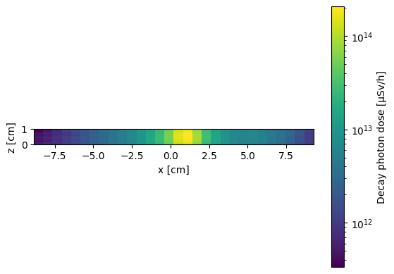
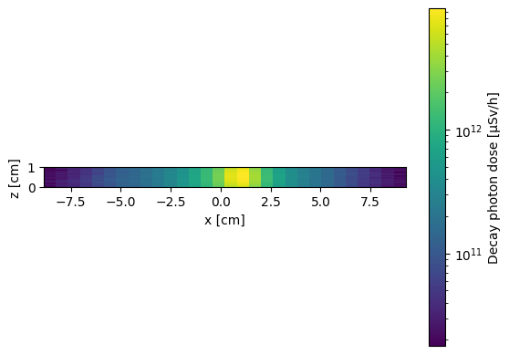

Unstructured mesh R2S shutdown dose rate with different materials#
In this example, we perform a shutdown dose rate simulation using the R2S method on an unstructured mesh.
This is an upgraded example that includes three cells, three materials (instead of one) and two cooling timesteps
When material regions are in contact, it’s possible for a single tetrahedral element to contain multiple materials. This must be carefully accounted for when depleting the element volume
First, we import all the necessary packages for the simulation.
from cad_to_dagmc import CadToDagmc
import cadquery as cq
import openmc
from matplotlib.colors import LogNorm
import openmc.deplete
from pathlib import Path
Then we sets the cross section path to the correct location in the docker image. If you are running this outside the docker image you will have to change this path to your local cross section path.
openmc.config['chain_file'] = Path.home() / 'nuclear_data' / 'chain-endf-b8.0.xml'
openmc.config['cross_sections'] = Path.home() / 'nuclear_data' / 'cross_sections.xml'
makes a CAD geometry to use for the neutronics geometry
three volumes and three material tags, one for each letter
text = cq.Workplane().text(txt="R2S", fontsize=10, distance=1)
my_model = CadToDagmc()
my_model.add_cadquery_object(
cadquery_object=text,
material_tags=[
"mat1",
"mat2",
"mat3",
],
)
Fontconfig error: Cannot load default config file: No such file: (null)
3
Convert the CAD geometry to a DAGMC surface mesh and MOAB volume mesh. This conversion ensures that the surface mesh matches the outer surface of the volume mesh. This helps ensure that tetrahedral elements have a single material within.
dagmc_filename, umesh_filename = my_model.export_dagmc_h5m_file(
filename="dagmc.h5m",
max_mesh_size=10,
min_mesh_size=2,
unstructured_volumes=[1,2,3],
umesh_filename="umesh.vtk",
)
Info : Meshing 1D...
Info : [ 0%] Meshing curve 1 (Line)
Info : [ 0%] Meshing curve 2 (Line)
Info : [ 0%] Meshing curve 3 (Bezier)
Info : [ 0%] Meshing curve 5 (Line)
Info : [ 0%] Meshing curve 7 (Bezier)
Info : [ 0%] Meshing curve 8 (Line)
Info : [ 0%] Meshing curve 6 (Bezier)
Info : [ 0%] Meshing curve 9 (Line)
Info : [ 0%] Meshing curve 4 (Bezier)
Info : [ 0%] Meshing curve 14 (Line)
Info : [ 0%] Meshing curve 10 (Line)
Info : [ 0%] Meshing curve 15 (Line)
Info : [ 0%] Meshing curve 16 (Line)
Info : [ 0%] Meshing curve 13 (Line)
Info : [ 0%] Meshing curve 11 (Line)
Info : [ 0%] Meshing curve 12 (Line)
Info : [ 10%] Meshing curve 17 (Line)
Info : [ 10%] Meshing curve 18 (Bezier)
Info : [ 10%] Meshing curve 19 (Bezier)
Info : [ 10%] Meshing curve 21 (Bezier)
Info : [ 10%] Meshing curve 23 (Line)
Info : [ 10%] Meshing curve 24 (Line)
Info : [ 10%] Meshing curve 22 (Bezier)
Info : [ 10%] Meshing curve 25 (Line)
Info : [ 10%] Meshing curve 26 (Line)
Info : [ 10%] Meshing curve 27 (Line)
Info : [ 10%] Meshing curve 28 (Line)
Info : [ 10%] Meshing curve 29 (Line)
Info : [ 10%] Meshing curve 30 (Line)
Info : [ 10%] Meshing curve 31 (Line)
Info : [ 10%] Meshing curve 32 (Line)
Info : [ 10%] Meshing curve 34 (Line)
Info : [ 10%] Meshing curve 33 (Line)
Info : [ 10%] Meshing curve 35 (Line)
Info : [ 10%] Meshing curve 36 (Line)
Info : [ 10%] Meshing curve 38 (Line)
Info : [ 10%] Meshing curve 37 (Line)
Info : [ 10%] Meshing curve 39 (Bezier)
Info : [ 10%] Meshing curve 40 (Bezier)
Info : [ 10%] Meshing curve 41 (Line)
Info : [ 10%] Meshing curve 42 (Bezier)
Info : [ 10%] Meshing curve 43 (Bezier)
Info : [ 10%] Meshing curve 44 (Line)
Info : [ 20%] Meshing curve 45 (Bezier)
Info : [ 20%] Meshing curve 46 (Bezier)
Info : [ 20%] Meshing curve 47 (Bezier)
Info : [ 20%] Meshing curve 48 (Bezier)
Info : [ 20%] Meshing curve 49 (Line)
Info : [ 20%] Meshing curve 50 (Line)
Info : [ 20%] Meshing curve 51 (Line)
Info : [ 20%] Meshing curve 52 (Line)
Info : [ 20%] Meshing curve 53 (Line)
Info : [ 20%] Meshing curve 54 (Line)
Info : [ 20%] Meshing curve 55 (Line)
Info : [ 20%] Meshing curve 56 (Line)
Info : [ 20%] Meshing curve 57 (Line)
Info : [ 20%] Meshing curve 58 (Line)
Info : [ 20%] Meshing curve 59 (Line)
Info : [ 20%] Meshing curve 60 (Bezier)
Info : [ 20%] Meshing curve 61 (Bezier)
Info : [ 20%] Meshing curve 62 (Line)
Info : [ 20%] Meshing curve 63 (Bezier)
Info : [ 20%] Meshing curve 64 (Bezier)
Info : [ 20%] Meshing curve 65 (Line)
Info : [ 20%] Meshing curve 66 (Bezier)
Info : [ 10%] Meshing curve 20 (Line)
Info : [ 20%] Meshing curve 67 (Bezier)
Info : [ 20%] Meshing curve 68 (Bezier)
Info : [ 20%] Meshing curve 69 (Bezier)
Info : [ 20%] Meshing curve 70 (Line)
Info : [ 20%] Meshing curve 71 (Line)
Info : [ 20%] Meshing curve 72 (Line)
Info : [ 20%] Meshing curve 73 (Line)
Info : [ 30%] Meshing curve 74 (Line)
Info : [ 30%] Meshing curve 75 (Line)
Info : [ 30%] Meshing curve 76 (Line)
Info : [ 30%] Meshing curve 77 (Line)
Info : [ 30%] Meshing curve 78 (Line)
Info : [ 30%] Meshing curve 79 (Line)
Info : [ 30%] Meshing curve 80 (Line)
Info : [ 40%] Meshing curve 81 (Line)
Info : [ 40%] Meshing curve 82 (Line)
Info : [ 40%] Meshing curve 83 (Line)
Info : [ 40%] Meshing curve 84 (Bezier)
Info : [ 40%] Meshing curve 85 (Bezier)
Info : [ 40%] Meshing curve 86 (Line)
Info : [ 40%] Meshing curve 87 (Bezier)
Info : [ 40%] Meshing curve 88 (Bezier)
Info : [ 40%] Meshing curve 89 (Line)
Info : [ 40%] Meshing curve 90 (Bezier)
Info : [ 40%] Meshing curve 91 (Bezier)
Info : [ 40%] Meshing curve 92 (Line)
Info : [ 40%] Meshing curve 93 (Bezier)
Info : [ 40%] Meshing curve 94 (Bezier)
Info : [ 40%] Meshing curve 96 (Bezier)
Info : [ 40%] Meshing curve 95 (Line)
Info : [ 40%] Meshing curve 98 (Line)
Info : [ 40%] Meshing curve 97 (Bezier)
Info : [ 40%] Meshing curve 99 (Bezier)
Info : [ 40%] Meshing curve 100 (Bezier)
Info : [ 40%] Meshing curve 101 (Line)
Info : [ 40%] Meshing curve 102 (Bezier)
Info : [ 40%] Meshing curve 103 (Bezier)
Info : [ 40%] Meshing curve 104 (Line)
Info : [ 40%] Meshing curve 105 (Bezier)
Info : [ 40%] Meshing curve 107 (Line)
Info : [ 40%] Meshing curve 106 (Bezier)
Info : [ 40%] Meshing curve 108 (Line)
Info : [ 40%] Meshing curve 109 (Line)
Info : [ 40%] Meshing curve 110 (Line)
Info : [ 40%] Meshing curve 111 (Bezier)
Info : [ 40%] Meshing curve 112 (Bezier)
Info : [ 40%] Meshing curve 113 (Line)
Info : [ 40%] Meshing curve 114 (Bezier)
Info : [ 40%] Meshing curve 115 (Bezier)
Info : [ 50%] Meshing curve 116 (Line)
Info : [ 50%] Meshing curve 117 (Bezier)
Info : [ 50%] Meshing curve 118 (Bezier)
Info : [ 50%] Meshing curve 119 (Line)
Info : [ 50%] Meshing curve 120 (Bezier)
Info : [ 50%] Meshing curve 121 (Bezier)
Info : [ 50%] Meshing curve 122 (Line)
Info : [ 50%] Meshing curve 123 (Bezier)
Info : [ 50%] Meshing curve 124 (Bezier)
Info : [ 50%] Meshing curve 125 (Line)
Info : [ 50%] Meshing curve 126 (Bezier)
Info : [ 50%] Meshing curve 127 (Bezier)
Info : [ 50%] Meshing curve 128 (Line)
Info : [ 50%] Meshing curve 129 (Bezier)
Info : [ 50%] Meshing curve 130 (Bezier)
Info : [ 50%] Meshing curve 131 (Bezier)
Info : [ 50%] Meshing curve 132 (Bezier)
Info : [ 50%] Meshing curve 133 (Line)
Info : [ 50%] Meshing curve 134 (Line)
Info : [ 50%] Meshing curve 135 (Line)
Info : [ 50%] Meshing curve 136 (Line)
Info : [ 50%] Meshing curve 137 (Line)
Info : [ 50%] Meshing curve 138 (Bezier)
Info : [ 50%] Meshing curve 139 (Bezier)
Info : [ 50%] Meshing curve 140 (Line)
Info : [ 50%] Meshing curve 141 (Bezier)
Info : [ 50%] Meshing curve 142 (Bezier)
Info : [ 50%] Meshing curve 143 (Line)
Info : [ 50%] Meshing curve 144 (Bezier)
Info : [ 50%] Meshing curve 145 (Bezier)
Info : [ 50%] Meshing curve 146 (Line)
Info : [ 50%] Meshing curve 147 (Bezier)
Info : [ 50%] Meshing curve 148 (Bezier)
Info : [ 50%] Meshing curve 149 (Line)
Info : [ 50%] Meshing curve 150 (Bezier)
Info : [ 50%] Meshing curve 151 (Bezier)
Info : [ 50%] Meshing curve 152 (Line)
Info : [ 50%] Meshing curve 153 (Bezier)
Info : [ 50%] Meshing curve 154 (Bezier)
Info : [ 50%] Meshing curve 155 (Line)
Info : [ 50%] Meshing curve 156 (Line)
Info : [ 50%] Meshing curve 157 (Line)
Info : [ 50%] Meshing curve 158 (Line)
Info : [ 50%] Meshing curve 159 (Bezier)
Info : [ 50%] Meshing curve 160 (Bezier)
Info : [ 70%] Meshing curve 162 (Bezier)
Info : [ 70%] Meshing curve 163 (Bezier)
Info : [ 70%] Meshing curve 164 (Line)
Info : [ 70%] Meshing curve 165 (Bezier)
Info : [ 70%] Meshing curve 166 (Bezier)
Info : [ 70%] Meshing curve 167 (Line)
Info : [ 70%] Meshing curve 168 (Bezier)
Info : [ 70%] Meshing curve 169 (Bezier)
Info : [ 50%] Meshing curve 161 (Line)
Info : [ 70%] Meshing curve 170 (Line)
Info : [ 70%] Meshing curve 171 (Bezier)
Info : [ 70%] Meshing curve 172 (Bezier)
Info : [ 70%] Meshing curve 173 (Line)
Info : [ 70%] Meshing curve 174 (Bezier)
Info : [ 70%] Meshing curve 175 (Bezier)
Info : [ 70%] Meshing curve 176 (Line)
Info : [ 70%] Meshing curve 177 (Line)
Info : [ 70%] Meshing curve 178 (Line)
Info : [ 70%] Meshing curve 179 (Line)
Info : [ 70%] Meshing curve 180 (Bezier)
Info : [ 70%] Meshing curve 181 (Bezier)
Info : [ 70%] Meshing curve 182 (Line)
Info : [ 70%] Meshing curve 183 (Bezier)
Info : [ 70%] Meshing curve 184 (Bezier)
Info : [ 70%] Meshing curve 185 (Line)
Info : [ 70%] Meshing curve 186 (Bezier)
Info : [ 70%] Meshing curve 187 (Bezier)
Info : [ 70%] Meshing curve 188 (Line)
Info : [ 70%] Meshing curve 189 (Bezier)
Info : [ 90%] Meshing curve 190 (Bezier)
Info : [ 90%] Meshing curve 191 (Line)
Info : [ 90%] Meshing curve 192 (Bezier)
Info : [ 90%] Meshing curve 193 (Bezier)
Info : [ 90%] Meshing curve 194 (Line)
Info : [ 90%] Meshing curve 195 (Bezier)
Info : [ 90%] Meshing curve 196 (Bezier)
Info : [ 90%] Meshing curve 197 (Line)
Info : [ 90%] Meshing curve 198 (Line)
Info : [ 90%] Meshing curve 199 (Line)
Info : [ 90%] Meshing curve 200 (Line)
Info : [ 90%] Meshing curve 201 (Bezier)
Info : [ 90%] Meshing curve 202 (Bezier)
Info : [ 90%] Meshing curve 203 (Line)
Info : [ 90%] Meshing curve 205 (Bezier)
Info : [ 90%] Meshing curve 204 (Bezier)
Info : [ 90%] Meshing curve 206 (Line)
Info : [ 90%] Meshing curve 207 (Bezier)
Info : [ 90%] Meshing curve 208 (Bezier)
Info : [ 90%] Meshing curve 209 (Line)
Info : [ 90%] Meshing curve 210 (Bezier)
Info : [ 90%] Meshing curve 211 (Bezier)
Info : [ 90%] Meshing curve 212 (Line)
Info : [ 90%] Meshing curve 213 (Bezier)
Info : [ 90%] Meshing curve 214 (Bezier)
Info : [ 90%] Meshing curve 215 (Bezier)
Info : [ 90%] Meshing curve 216 (Bezier)
Info : Done meshing 1D (Wall 0.0338857s, CPU 0.433308s)
Info : Meshing 2D...
Info : [ 0%] Meshing surface 1 (Unknown, MeshAdapt)
Info : [ 0%] Meshing surface 2 (Unknown, MeshAdapt)
Info : [ 0%] Meshing surface 3 (Plane, MeshAdapt)
Info : [ 0%] Meshing surface 4 (Plane, MeshAdapt)
Info : [ 0%] Meshing surface 5 (Plane, MeshAdapt)
Info : [ 0%] Meshing surface 8 (Plane, MeshAdapt)
Info : [ 0%] Meshing surface 6 (Unknown, MeshAdapt)
Info : [ 0%] Meshing surface 7 (Unknown, MeshAdapt)
Info : [ 0%] Meshing surface 9 (Plane, MeshAdapt)
Info : [ 0%] Meshing surface 13 (Unknown, MeshAdapt)
Info : [ 0%] Meshing surface 14 (Unknown, MeshAdapt)
Info : [ 0%] Meshing surface 15 (Unknown, MeshAdapt)
Info : [ 0%] Meshing surface 11 (Plane, MeshAdapt)
Info : [ 0%] Meshing surface 12 (Plane, MeshAdapt)
Info : [ 0%] Meshing surface 10 (Plane, MeshAdapt)
Info : [ 0%] Meshing surface 16 (Unknown, MeshAdapt)
Info : [ 0%] Meshing surface 17 (Plane, MeshAdapt)
Info : [ 0%] Meshing surface 18 (Plane, MeshAdapt)
Info : [ 0%] Meshing surface 19 (Plane, MeshAdapt)
Info : [ 0%] Meshing surface 20 (Unknown, MeshAdapt)
Info : [ 0%] Meshing surface 21 (Unknown, MeshAdapt)
Info : [ 0%] Meshing surface 22 (Unknown, MeshAdapt)
Info : [ 0%] Meshing surface 23 (Unknown, MeshAdapt)
Info : [ 20%] Meshing surface 24 (Plane, MeshAdapt)
Info : [ 20%] Meshing surface 25 (Plane, MeshAdapt)
Info : [ 20%] Meshing surface 26 (Plane, MeshAdapt)
Info : [ 20%] Meshing surface 27 (Plane, MeshAdapt)
Info : [ 20%] Meshing surface 28 (Plane, MeshAdapt)
Info : [ 20%] Meshing surface 29 (Plane, MeshAdapt)
Info : [ 20%] Meshing surface 30 (Unknown, MeshAdapt)
Info : [ 20%] Meshing surface 31 (Unknown, MeshAdapt)
Info : [ 20%] Meshing surface 32 (Unknown, MeshAdapt)
Info : [ 20%] Meshing surface 33 (Unknown, MeshAdapt)
Info : [ 20%] Meshing surface 34 (Unknown, MeshAdapt)
Info : [ 20%] Meshing surface 35 (Unknown, MeshAdapt)
Info : [ 20%] Meshing surface 36 (Unknown, MeshAdapt)
Info : [ 20%] Meshing surface 37 (Unknown, MeshAdapt)
Info : [ 20%] Meshing surface 38 (Plane, MeshAdapt)
Info : [ 20%] Meshing surface 39 (Unknown, MeshAdapt)
Info : [ 20%] Meshing surface 40 (Unknown, MeshAdapt)
Info : [ 20%] Meshing surface 41 (Unknown, MeshAdapt)
Info : [ 20%] Meshing surface 42 (Unknown, MeshAdapt)
Info : [ 20%] Meshing surface 43 (Unknown, MeshAdapt)
Info : [ 20%] Meshing surface 44 (Unknown, MeshAdapt)
Info : [ 20%] Meshing surface 45 (Unknown, MeshAdapt)
Info : [ 20%] Meshing surface 46 (Unknown, MeshAdapt)
Info : [ 20%] Meshing surface 47 (Plane, MeshAdapt)
Info : [ 20%] Meshing surface 48 (Plane, MeshAdapt)
Info : [ 20%] Meshing surface 49 (Plane, MeshAdapt)
Info : [ 20%] Meshing surface 50 (Unknown, MeshAdapt)
Info : [ 20%] Meshing surface 51 (Unknown, MeshAdapt)
Info : [ 20%] Meshing surface 52 (Unknown, MeshAdapt)
Info : [ 20%] Meshing surface 53 (Unknown, MeshAdapt)
Info : [ 20%] Meshing surface 54 (Unknown, MeshAdapt)
Info : [ 20%] Meshing surface 57 (Unknown, MeshAdapt)
Info : [ 20%] Meshing surface 56 (Plane, MeshAdapt)
Info : [ 20%] Meshing surface 58 (Unknown, MeshAdapt)
Info : [ 20%] Meshing surface 59 (Unknown, MeshAdapt)
Info : [ 20%] Meshing surface 60 (Unknown, MeshAdapt)
Info : [ 20%] Meshing surface 61 (Unknown, MeshAdapt)
Info : [ 20%] Meshing surface 62 (Unknown, MeshAdapt)
Info : [ 20%] Meshing surface 63 (Plane, MeshAdapt)
Info : [ 20%] Meshing surface 64 (Unknown, MeshAdapt)
Info : [ 70%] Meshing surface 65 (Unknown, MeshAdapt)
Info : [ 70%] Meshing surface 66 (Unknown, MeshAdapt)
Info : [ 70%] Meshing surface 67 (Unknown, MeshAdapt)
Info : [ 70%] Meshing surface 68 (Unknown, MeshAdapt)
Info : [ 70%] Meshing surface 69 (Unknown, MeshAdapt)
Info : [ 70%] Meshing surface 70 (Plane, MeshAdapt)
Info : [ 70%] Meshing surface 71 (Unknown, MeshAdapt)
Info : [ 70%] Meshing surface 72 (Unknown, MeshAdapt)
Info : [ 70%] Meshing surface 73 (Unknown, MeshAdapt)
Info : [ 70%] Meshing surface 74 (Unknown, MeshAdapt)
Info : [ 70%] Meshing surface 75 (Unknown, MeshAdapt)
Info : [ 70%] Meshing surface 76 (Unknown, MeshAdapt)
Info : [ 70%] Meshing surface 77 (Plane, MeshAdapt)
Info : [ 70%] Meshing surface 78 (Plane, MeshAdapt)
Info : [ 20%] Meshing surface 55 (Unknown, MeshAdapt)
Info : Done meshing 2D (Wall 0.011711s, CPU 0.087275s)
Info : 411 nodes 1300 elements
written DAGMC file dagmc.h5m
Info : Meshing 3D...
Info : 3D Meshing 3 volumes with 3 connected components
Info : Tetrahedrizing 119 nodes...
Info : Done tetrahedrizing 127 nodes (Wall 0.00132913s, CPU 0.001529s)
Info : Reconstructing mesh...
Info : - Creating surface mesh
Info : - Identifying boundary edges
Info : - Recovering boundary
Info : - Added 1 Steiner point
Info : Done reconstructing mesh (Wall 0.00457923s, CPU 0.005021s)
Info : Found volume 1
Info : It. 0 - 0 nodes created - worst tet radius 1.03146 (nodes removed 0 0)
Info : 3D refinement terminated (412 nodes total):
Info : - 0 Delaunay cavities modified for star shapeness
Info : - 1 nodes could not be inserted
Info : - 244 tetrahedra created in 1.3184e-05 sec. (18507273 tets/s)
Info : 0 node relocations
Info : Tetrahedrizing 120 nodes...
Info : Done tetrahedrizing 128 nodes (Wall 0.00135521s, CPU 0.001345s)
Info : Reconstructing mesh...
Info : - Creating surface mesh
Info : - Identifying boundary edges
Info : - Recovering boundary
Info : Done reconstructing mesh (Wall 0.00295818s, CPU 0.00338s)
Info : Found volume 2
Info : It. 0 - 0 nodes created - worst tet radius 1.12241 (nodes removed 0 0)
Info : 3D refinement terminated (411 nodes total):
Info : - 0 Delaunay cavities modified for star shapeness
Info : - 2 nodes could not be inserted
Info : - 247 tetrahedra created in 1.242e-05 sec. (19887276 tets/s)
Info : 0 node relocations
Info : Tetrahedrizing 172 nodes...
Info : Done tetrahedrizing 180 nodes (Wall 0.0020027s, CPU 0.001709s)
Info : Reconstructing mesh...
Info : - Creating surface mesh
Info : - Identifying boundary edges
Info : - Recovering boundary
Info : - Added 1 Steiner point
Info : Done reconstructing mesh (Wall 0.00596389s, CPU 0.005636s)
Info : Found volume 3
Info : It. 0 - 0 nodes created - worst tet radius 1.77744 (nodes removed 0 0)
Info : 3D refinement terminated (413 nodes total):
Info : - 0 Delaunay cavities modified for star shapeness
Info : - 8 nodes could not be inserted
Info : - 381 tetrahedra created in 0.000168564 sec. (2260269 tets/s)
Info : 2 node relocations
Info : Done meshing 3D (Wall 0.024991s, CPU 0.026436s)
Info : Optimizing mesh...
Info : Optimizing volume 1
Info : Optimization starts (volume = 18.1792) with worst = 0.0818241 / average = 0.673178:
Info : 0.00 < quality < 0.10 : 2 elements
Info : 0.10 < quality < 0.20 : 4 elements
Info : 0.20 < quality < 0.30 : 1 elements
Info : 0.30 < quality < 0.40 : 6 elements
Info : 0.40 < quality < 0.50 : 17 elements
Info : 0.50 < quality < 0.60 : 26 elements
Info : 0.60 < quality < 0.70 : 66 elements
Info : 0.70 < quality < 0.80 : 72 elements
Info : 0.80 < quality < 0.90 : 47 elements
Info : 0.90 < quality < 1.00 : 3 elements
Info : 5 edge swaps, 0 node relocations (volume = 18.1792): worst = 0.0818241 / average = 0.678033 (Wall 0.000173049s, CPU 0.000192s)
Info : No ill-shaped tets in the mesh :-)
Info : 0.00 < quality < 0.10 : 1 elements
Info : 0.10 < quality < 0.20 : 0 elements
Info : 0.20 < quality < 0.30 : 1 elements
Info : 0.30 < quality < 0.40 : 6 elements
Info : 0.40 < quality < 0.50 : 17 elements
Info : 0.50 < quality < 0.60 : 30 elements
Info : 0.60 < quality < 0.70 : 71 elements
Info : 0.70 < quality < 0.80 : 71 elements
Info : 0.80 < quality < 0.90 : 44 elements
Info : 0.90 < quality < 1.00 : 1 elements
Info : Optimizing volume 2
Info : Optimization starts (volume = 13.4588) with worst = 0.0186701 / average = 0.674826:
Info : 0.00 < quality < 0.10 : 6 elements
Info : 0.10 < quality < 0.20 : 3 elements
Info : 0.20 < quality < 0.30 : 0 elements
Info : 0.30 < quality < 0.40 : 7 elements
Info : 0.40 < quality < 0.50 : 11 elements
Info : 0.50 < quality < 0.60 : 27 elements
Info : 0.60 < quality < 0.70 : 69 elements
Info : 0.70 < quality < 0.80 : 67 elements
Info : 0.80 < quality < 0.90 : 53 elements
Info : 0.90 < quality < 1.00 : 4 elements
Info : 8 edge swaps, 0 node relocations (volume = 13.4588): worst = 0.0767927 / average = 0.681816 (Wall 0.000191214s, CPU 0s)
Info : 9 edge swaps, 0 node relocations (volume = 13.4588): worst = 0.0767927 / average = 0.683885 (Wall 0.000240712s, CPU 0s)
Info : No ill-shaped tets in the mesh :-)
Info : 0.00 < quality < 0.10 : 1 elements
Info : 0.10 < quality < 0.20 : 0 elements
Info : 0.20 < quality < 0.30 : 0 elements
Info : 0.30 < quality < 0.40 : 7 elements
Info : 0.40 < quality < 0.50 : 13 elements
Info : 0.50 < quality < 0.60 : 34 elements
Info : 0.60 < quality < 0.70 : 71 elements
Info : 0.70 < quality < 0.80 : 65 elements
Info : 0.80 < quality < 0.90 : 48 elements
Info : 0.90 < quality < 1.00 : 4 elements
Info : Optimizing volume 3
Info : Optimization starts (volume = 15.3417) with worst = 0.0197082 / average = 0.688703:
Info : 0.00 < quality < 0.10 : 5 elements
Info : 0.10 < quality < 0.20 : 2 elements
Info : 0.20 < quality < 0.30 : 5 elements
Info : 0.30 < quality < 0.40 : 15 elements
Info : 0.40 < quality < 0.50 : 15 elements
Info : 0.50 < quality < 0.60 : 35 elements
Info : 0.60 < quality < 0.70 : 100 elements
Info : 0.70 < quality < 0.80 : 115 elements
Info : 0.80 < quality < 0.90 : 74 elements
Info : 0.90 < quality < 1.00 : 15 elements
Info : 9 edge swaps, 0 node relocations (volume = 15.3417): worst = 0.081945 / average = 0.68666 (Wall 0.00024836s, CPU 0.000248s)
Info : 10 edge swaps, 0 node relocations (volume = 15.3417): worst = 0.081945 / average = 0.68838 (Wall 0.00033536s, CPU 0.000335s)
Info : No ill-shaped tets in the mesh :-)
Info : 0.00 < quality < 0.10 : 1 elements
Info : 0.10 < quality < 0.20 : 1 elements
Info : 0.20 < quality < 0.30 : 1 elements
Info : 0.30 < quality < 0.40 : 15 elements
Info : 0.40 < quality < 0.50 : 18 elements
Info : 0.50 < quality < 0.60 : 48 elements
Info : 0.60 < quality < 0.70 : 108 elements
Info : 0.70 < quality < 0.80 : 107 elements
Info : 0.80 < quality < 0.90 : 67 elements
Info : 0.90 < quality < 1.00 : 13 elements
Info : Done optimizing mesh (Wall 0.00184923s, CPU 0.001319s)
Info : 414 nodes 2164 elements
Info : Writing 'umesh.vtk'...
Info : Done writing 'umesh.vtk'
Now use the two meshes in OpenMC to make the DAGMCUniverse and the UnstructuredMesh
We transport particles on the DAGMCUniverse
We will get the flux on the UnstructuredMesh tets and then activate the materials on each tet and use this information to make source terms
# add adding distance to avoid source being born on edge of geometry and the 2nd simulation crashing
universe = openmc.DAGMCUniverse("dagmc.h5m").bounded_universe()
my_geometry = openmc.Geometry(universe)
# the unstructured mesh to overlay on the DAGMC geometry
umesh = openmc.UnstructuredMesh("umesh.vtk", library="moab")
Define the materials used in the simulation.
The number of material names must match the number of tags included in the DAGMC file.
fe_material = openmc.Material(name='mat1')
fe_material.add_nuclide("Fe56", 1, percent_type="ao")
fe_material.set_density("g/cm3", 7.874)
fe_material.depletable = True
Li4SiO4_mat = openmc.Material(name='mat2')
Li4SiO4_mat.add_element('Li', 4.0, percent_type='ao')
Li4SiO4_mat.add_element('Si', 1.0, percent_type='ao')
Li4SiO4_mat.add_element('O', 4.0, percent_type='ao')
Li4SiO4_mat.set_density('g/cm3', 2.32)
Li4SiO4_mat.depletable = True
water_mat = openmc.Material(name='mat3')
water_mat.add_element('H', 2.0, percent_type='ao')
water_mat.add_element('O', 1.0, percent_type='ao')
water_mat.set_density('g/cm3', 0.99821)
water_mat.depletable = True
my_materials = openmc.Materials([fe_material, Li4SiO4_mat, water_mat])
Make a simple neutron source in the center of the geometry
# Create a DT point source
my_source = openmc.IndependentSource()
my_source.space = openmc.stats.Point(my_geometry.bounding_box.center)
my_source.angle = openmc.stats.Isotropic()
my_source.energy = openmc.stats.Discrete([14e6], [1])
Make the simulation settings for the neutron irradiation
my_settings = openmc.Settings()
my_settings.batches = 5
my_settings.particles = 5000
my_settings.run_mode = "fixed source"
my_settings.output = {'summary': False}
my_settings.source = my_source
Make the neutron irradiation model
model = openmc.model.Model(my_geometry, my_materials, my_settings)
model.export_to_xml()
Collect a list of all nuclides present in the model
Get the flux and micro_xs in each unstructured mesh tet
all_nuclides = set()
for material in my_materials:
all_nuclides.update(material.get_nuclides())
flux_in_each_voxel, micro_xs = openmc.deplete.get_microxs_and_flux(
model=model,
domains=umesh,
energies=[0, 30e6], # one energy bin from 0 to 30MeV
chain_file=openmc.config['chain_file'],
# needed otherwise the statepoint file is produced in an unknown temporary directory
run_kwargs={'cwd':'.'},
nuclides=list(all_nuclides) # Convert set to list
)
%%%%%%%%%%%%%%%
%%%%%%%%%%%%%%%%%%%%%%%%
%%%%%%%%%%%%%%%%%%%%%%%%%%%%%%
%%%%%%%%%%%%%%%%%%%%%%%%%%%%%%%%%%
%%%%%%%%%%%%%%%%%%%%%%%%%%%%%%%%%%%%%%
%%%%%%%%%%%%%%%%%%%%%%%%%%%%%%%%%%%%%%%%
%%%%%%%%%%%%%%%%%%%%%%%%
%%%%%%%%%%%%%%%%%%%%%%%%
############### %%%%%%%%%%%%%%%%%%%%%%%%
################## %%%%%%%%%%%%%%%%%%%%%%%
################### %%%%%%%%%%%%%%%%%%%%%%%
#################### %%%%%%%%%%%%%%%%%%%%%%
##################### %%%%%%%%%%%%%%%%%%%%%
###################### %%%%%%%%%%%%%%%%%%%%
####################### %%%%%%%%%%%%%%%%%%
####################### %%%%%%%%%%%%%%%%%
###################### %%%%%%%%%%%%%%%%%
#################### %%%%%%%%%%%%%%%%%
################# %%%%%%%%%%%%%%%%%
############### %%%%%%%%%%%%%%%%
############ %%%%%%%%%%%%%%%
######## %%%%%%%%%%%%%%
%%%%%%%%%%%
| The OpenMC Monte Carlo Code
Copyright | 2011-2025 MIT, UChicago Argonne LLC, and contributors
License | https://docs.openmc.org/en/latest/license.html
Version | 0.15.3-dev144
Commit Hash | 14ab4d3b6f3d77b73e8bb480782bbe1bdd56483d
Date/Time | 2025-06-06 17:09:36
OpenMP Threads | 16
Reading model XML file 'model.xml' ...
WARNING: Other XML file input(s) are present. These files may be ignored in
favor of the model.xml file.
Reading chain file: /home/jon/nuclear_data/chain-endf-b8.0.xml...
Reading cross sections XML file...
Using the DOUBLE-DOWN interface to Embree.
Loading file /home/jon/neutronics-workshop/tasks/task_20_CAD_shut_down_dose_rate/dagmc.h5m
Initializing the GeomQueryTool...
Using faceting tolerance: 5.10624e-315
Building acceleration data structures...
Reading Fe56 from /home/jon/nuclear_data/neutron/Fe56.h5
Reading Li6 from /home/jon/nuclear_data/neutron/Li6.h5
Reading Li7 from /home/jon/nuclear_data/neutron/Li7.h5
Reading Si28 from /home/jon/nuclear_data/neutron/Si28.h5
Reading Si29 from /home/jon/nuclear_data/neutron/Si29.h5
Reading Si30 from /home/jon/nuclear_data/neutron/Si30.h5
Reading O16 from /home/jon/nuclear_data/neutron/O16.h5
Reading O17 from /home/jon/nuclear_data/neutron/O17.h5
Reading O18 from /home/jon/nuclear_data/neutron/O18.h5
Reading H1 from /home/jon/nuclear_data/neutron/H1.h5
Reading H2 from /home/jon/nuclear_data/neutron/H2.h5
Minimum neutron data temperature: 294.0 K
Maximum neutron data temperature: 294.0 K
Getting tet adjacencies...
Building adaptive k-d tree for tet mesh with ID 1...
Preparing distributed cell instances...
Maximum neutron transport energy: 20000000.0 eV for Li6
===============> FIXED SOURCE TRANSPORT SIMULATION <===============
Simulating batch 1
Simulating batch 2
Simulating batch 3
Simulating batch 4
Simulating batch 5
Creating state point statepoint.5.h5...
WARNING: Output for a MOAB mesh (mesh 1) was requested but will not be written.
Please use the Python API to generated the desired VTK tetrahedral
mesh.
WARNING: Output for a MOAB mesh (mesh 1) was requested but will not be written.
Please use the Python API to generated the desired VTK tetrahedral
mesh.
=======================> TIMING STATISTICS <=======================
Total time for initialization = 2.4932e+00 seconds
Reading cross sections = 1.1257e+00 seconds
Total time in simulation = 1.6020e+00 seconds
Time in transport only = 1.4991e+00 seconds
Time in active batches = 1.6020e+00 seconds
Time accumulating tallies = 4.6782e-02 seconds
Time writing statepoints = 5.5435e-02 seconds
Total time for finalization = 2.0768e-01 seconds
Total time elapsed = 4.3095e+00 seconds
Calculation Rate (active) = 15605.7 particles/second
============================> RESULTS <============================
Leakage Fraction = 0.99683 +/- 0.00019
Read in the unstructured from the statepoint, this contains additional information (centroids and volumes) compared to the umesh object
sp_filename=f'statepoint.{my_settings.batches}.h5'
sp = openmc.StatePoint(sp_filename)
# normally with regular meshes I would get the mesh from the tally
# but with unstructured meshes the tally does not contain the mesh
# however we can get it from the statepoint file
umesh_from_sp = sp.meshes[umesh.id]
# reading a unstructured mesh from the statepoint trigger internal code in the mesh
# object so that its centroids and volumes become known.
# centroids and volumes are needed for the get_values and write_data_to_vtk steps
centroids = umesh_from_sp.centroids
mesh_vols = umesh_from_sp.volumes
/home/jon/.neutronicsworkshop/lib/python3.11/site-packages/openmc/mixin.py:70: IDWarning: Another MeshBase instance already exists with id=1.
warn(msg, IDWarning)
Calcualte the material volumes for each mesh element from the unstructured mesh
mat_vols = umesh_from_sp.material_volumes(model=model,n_samples=1_000_000)
%%%%%%%%%%%%%%%
%%%%%%%%%%%%%%%%%%%%%%%%
%%%%%%%%%%%%%%%%%%%%%%%%%%%%%%
%%%%%%%%%%%%%%%%%%%%%%%%%%%%%%%%%%
%%%%%%%%%%%%%%%%%%%%%%%%%%%%%%%%%%%%%%
%%%%%%%%%%%%%%%%%%%%%%%%%%%%%%%%%%%%%%%%
%%%%%%%%%%%%%%%%%%%%%%%%
%%%%%%%%%%%%%%%%%%%%%%%%
############### %%%%%%%%%%%%%%%%%%%%%%%%
################## %%%%%%%%%%%%%%%%%%%%%%%
################### %%%%%%%%%%%%%%%%%%%%%%%
#################### %%%%%%%%%%%%%%%%%%%%%%
##################### %%%%%%%%%%%%%%%%%%%%%
###################### %%%%%%%%%%%%%%%%%%%%
####################### %%%%%%%%%%%%%%%%%%
####################### %%%%%%%%%%%%%%%%%
###################### %%%%%%%%%%%%%%%%%
#################### %%%%%%%%%%%%%%%%%
################# %%%%%%%%%%%%%%%%%
############### %%%%%%%%%%%%%%%%
############ %%%%%%%%%%%%%%%
######## %%%%%%%%%%%%%%
%%%%%%%%%%%
| The OpenMC Monte Carlo Code
Copyright | 2011-2025 MIT, UChicago Argonne LLC, and contributors
License | https://docs.openmc.org/en/latest/license.html
Version | 0.15.3-dev144
Commit Hash | 14ab4d3b6f3d77b73e8bb480782bbe1bdd56483d
Date/Time | 2025-06-06 17:09:40
OpenMP Threads | 16
Reading model XML file 'model.xml' ...
Reading chain file: /home/jon/nuclear_data/chain-endf-b8.0.xml...
Reading cross sections XML file...
Using the DOUBLE-DOWN interface to Embree.
Loading file /home/jon/neutronics-workshop/tasks/task_20_CAD_shut_down_dose_rate/dagmc.h5m
Initializing the GeomQueryTool...
Using faceting tolerance: 0
Building acceleration data structures...
Reading Fe56 from /home/jon/nuclear_data/neutron/Fe56.h5
Reading Li6 from /home/jon/nuclear_data/neutron/Li6.h5
Reading Li7 from /home/jon/nuclear_data/neutron/Li7.h5
Reading Si28 from /home/jon/nuclear_data/neutron/Si28.h5
Reading Si29 from /home/jon/nuclear_data/neutron/Si29.h5
Reading Si30 from /home/jon/nuclear_data/neutron/Si30.h5
Reading O16 from /home/jon/nuclear_data/neutron/O16.h5
Reading O17 from /home/jon/nuclear_data/neutron/O17.h5
Reading O18 from /home/jon/nuclear_data/neutron/O18.h5
Reading H1 from /home/jon/nuclear_data/neutron/H1.h5
Reading H2 from /home/jon/nuclear_data/neutron/H2.h5
Minimum neutron data temperature: 1.7976931348623157e+308 K
Maximum neutron data temperature: 0.0 K
Getting tet adjacencies...
Building adaptive k-d tree for tet mesh with ID 1...
Preparing distributed cell instances...
===============> MESH MATERIAL VOLUMES CALCULATION <===============
Number of mesh elements = 864
Number of rays (x) = 1420
Number of rays (y) = 593
Number of rays (z) = 78
Total number of rays = 999074
Table size per mesh element = 8
=======================> TIMING STATISTICS <=======================
Total time elapsed = 4.4641e+01 seconds
Ray tracing = 4.4639e+01 seconds
MPI communication = 0.0000e+00 seconds
Normalization = 1.8446e-03 seconds
Calculation rate = 2.2381e+04 rays/seconds
Calculation rate (per thread) = 1.3988e+03 rays/seconds
make a new fresh material for every tet in the unstructured mesh
assign the material volume for each tet
# Get material IDs from my_materials object
material_ids = [mat.id for mat in my_materials]
materials_for_every_mesh_voxel = []
for i in range(len(mat_vols[material_ids[0]])):
# Find which material is present in this voxel (only one material per voxel)
material_id = next(mid for mid in material_ids if mat_vols[mid][i] > 0)
material = next(mat for mat in my_materials if mat.id == material_id)
# Create a new material instance for this voxel
new_mat = material.clone()
new_mat.id = i
# Use the volume of this material in this voxel from mat_vol
new_mat.volume = mat_vols[material_id][i]
materials_for_every_mesh_voxel.append(new_mat)
/home/jon/.neutronicsworkshop/lib/python3.11/site-packages/openmc/mixin.py:70: IDWarning: Another Material instance already exists with id=1.
warn(msg, IDWarning)
/home/jon/.neutronicsworkshop/lib/python3.11/site-packages/openmc/mixin.py:70: IDWarning: Another Material instance already exists with id=2.
warn(msg, IDWarning)
/home/jon/.neutronicsworkshop/lib/python3.11/site-packages/openmc/mixin.py:70: IDWarning: Another Material instance already exists with id=3.
warn(msg, IDWarning)
/home/jon/.neutronicsworkshop/lib/python3.11/site-packages/openmc/mixin.py:70: IDWarning: Another Material instance already exists with id=4.
warn(msg, IDWarning)
/home/jon/.neutronicsworkshop/lib/python3.11/site-packages/openmc/mixin.py:70: IDWarning: Another Material instance already exists with id=5.
warn(msg, IDWarning)
/home/jon/.neutronicsworkshop/lib/python3.11/site-packages/openmc/mixin.py:70: IDWarning: Another Material instance already exists with id=6.
warn(msg, IDWarning)
/home/jon/.neutronicsworkshop/lib/python3.11/site-packages/openmc/mixin.py:70: IDWarning: Another Material instance already exists with id=7.
warn(msg, IDWarning)
/home/jon/.neutronicsworkshop/lib/python3.11/site-packages/openmc/mixin.py:70: IDWarning: Another Material instance already exists with id=8.
warn(msg, IDWarning)
/home/jon/.neutronicsworkshop/lib/python3.11/site-packages/openmc/mixin.py:70: IDWarning: Another Material instance already exists with id=9.
warn(msg, IDWarning)
/home/jon/.neutronicsworkshop/lib/python3.11/site-packages/openmc/mixin.py:70: IDWarning: Another Material instance already exists with id=10.
warn(msg, IDWarning)
/home/jon/.neutronicsworkshop/lib/python3.11/site-packages/openmc/mixin.py:70: IDWarning: Another Material instance already exists with id=11.
warn(msg, IDWarning)
/home/jon/.neutronicsworkshop/lib/python3.11/site-packages/openmc/mixin.py:70: IDWarning: Another Material instance already exists with id=12.
warn(msg, IDWarning)
/home/jon/.neutronicsworkshop/lib/python3.11/site-packages/openmc/mixin.py:70: IDWarning: Another Material instance already exists with id=13.
warn(msg, IDWarning)
/home/jon/.neutronicsworkshop/lib/python3.11/site-packages/openmc/mixin.py:70: IDWarning: Another Material instance already exists with id=14.
warn(msg, IDWarning)
/home/jon/.neutronicsworkshop/lib/python3.11/site-packages/openmc/mixin.py:70: IDWarning: Another Material instance already exists with id=15.
warn(msg, IDWarning)
/home/jon/.neutronicsworkshop/lib/python3.11/site-packages/openmc/mixin.py:70: IDWarning: Another Material instance already exists with id=16.
warn(msg, IDWarning)
/home/jon/.neutronicsworkshop/lib/python3.11/site-packages/openmc/mixin.py:70: IDWarning: Another Material instance already exists with id=17.
warn(msg, IDWarning)
/home/jon/.neutronicsworkshop/lib/python3.11/site-packages/openmc/mixin.py:70: IDWarning: Another Material instance already exists with id=18.
warn(msg, IDWarning)
/home/jon/.neutronicsworkshop/lib/python3.11/site-packages/openmc/mixin.py:70: IDWarning: Another Material instance already exists with id=19.
warn(msg, IDWarning)
/home/jon/.neutronicsworkshop/lib/python3.11/site-packages/openmc/mixin.py:70: IDWarning: Another Material instance already exists with id=20.
warn(msg, IDWarning)
/home/jon/.neutronicsworkshop/lib/python3.11/site-packages/openmc/mixin.py:70: IDWarning: Another Material instance already exists with id=21.
warn(msg, IDWarning)
/home/jon/.neutronicsworkshop/lib/python3.11/site-packages/openmc/mixin.py:70: IDWarning: Another Material instance already exists with id=22.
warn(msg, IDWarning)
/home/jon/.neutronicsworkshop/lib/python3.11/site-packages/openmc/mixin.py:70: IDWarning: Another Material instance already exists with id=23.
warn(msg, IDWarning)
/home/jon/.neutronicsworkshop/lib/python3.11/site-packages/openmc/mixin.py:70: IDWarning: Another Material instance already exists with id=24.
warn(msg, IDWarning)
/home/jon/.neutronicsworkshop/lib/python3.11/site-packages/openmc/mixin.py:70: IDWarning: Another Material instance already exists with id=25.
warn(msg, IDWarning)
/home/jon/.neutronicsworkshop/lib/python3.11/site-packages/openmc/mixin.py:70: IDWarning: Another Material instance already exists with id=26.
warn(msg, IDWarning)
/home/jon/.neutronicsworkshop/lib/python3.11/site-packages/openmc/mixin.py:70: IDWarning: Another Material instance already exists with id=27.
warn(msg, IDWarning)
/home/jon/.neutronicsworkshop/lib/python3.11/site-packages/openmc/mixin.py:70: IDWarning: Another Material instance already exists with id=28.
warn(msg, IDWarning)
/home/jon/.neutronicsworkshop/lib/python3.11/site-packages/openmc/mixin.py:70: IDWarning: Another Material instance already exists with id=29.
warn(msg, IDWarning)
/home/jon/.neutronicsworkshop/lib/python3.11/site-packages/openmc/mixin.py:70: IDWarning: Another Material instance already exists with id=30.
warn(msg, IDWarning)
/home/jon/.neutronicsworkshop/lib/python3.11/site-packages/openmc/mixin.py:70: IDWarning: Another Material instance already exists with id=31.
warn(msg, IDWarning)
/home/jon/.neutronicsworkshop/lib/python3.11/site-packages/openmc/mixin.py:70: IDWarning: Another Material instance already exists with id=32.
warn(msg, IDWarning)
/home/jon/.neutronicsworkshop/lib/python3.11/site-packages/openmc/mixin.py:70: IDWarning: Another Material instance already exists with id=33.
warn(msg, IDWarning)
/home/jon/.neutronicsworkshop/lib/python3.11/site-packages/openmc/mixin.py:70: IDWarning: Another Material instance already exists with id=34.
warn(msg, IDWarning)
/home/jon/.neutronicsworkshop/lib/python3.11/site-packages/openmc/mixin.py:70: IDWarning: Another Material instance already exists with id=35.
warn(msg, IDWarning)
/home/jon/.neutronicsworkshop/lib/python3.11/site-packages/openmc/mixin.py:70: IDWarning: Another Material instance already exists with id=36.
warn(msg, IDWarning)
/home/jon/.neutronicsworkshop/lib/python3.11/site-packages/openmc/mixin.py:70: IDWarning: Another Material instance already exists with id=37.
warn(msg, IDWarning)
/home/jon/.neutronicsworkshop/lib/python3.11/site-packages/openmc/mixin.py:70: IDWarning: Another Material instance already exists with id=38.
warn(msg, IDWarning)
/home/jon/.neutronicsworkshop/lib/python3.11/site-packages/openmc/mixin.py:70: IDWarning: Another Material instance already exists with id=39.
warn(msg, IDWarning)
/home/jon/.neutronicsworkshop/lib/python3.11/site-packages/openmc/mixin.py:70: IDWarning: Another Material instance already exists with id=40.
warn(msg, IDWarning)
/home/jon/.neutronicsworkshop/lib/python3.11/site-packages/openmc/mixin.py:70: IDWarning: Another Material instance already exists with id=41.
warn(msg, IDWarning)
/home/jon/.neutronicsworkshop/lib/python3.11/site-packages/openmc/mixin.py:70: IDWarning: Another Material instance already exists with id=42.
warn(msg, IDWarning)
/home/jon/.neutronicsworkshop/lib/python3.11/site-packages/openmc/mixin.py:70: IDWarning: Another Material instance already exists with id=43.
warn(msg, IDWarning)
/home/jon/.neutronicsworkshop/lib/python3.11/site-packages/openmc/mixin.py:70: IDWarning: Another Material instance already exists with id=44.
warn(msg, IDWarning)
/home/jon/.neutronicsworkshop/lib/python3.11/site-packages/openmc/mixin.py:70: IDWarning: Another Material instance already exists with id=45.
warn(msg, IDWarning)
/home/jon/.neutronicsworkshop/lib/python3.11/site-packages/openmc/mixin.py:70: IDWarning: Another Material instance already exists with id=46.
warn(msg, IDWarning)
/home/jon/.neutronicsworkshop/lib/python3.11/site-packages/openmc/mixin.py:70: IDWarning: Another Material instance already exists with id=47.
warn(msg, IDWarning)
/home/jon/.neutronicsworkshop/lib/python3.11/site-packages/openmc/mixin.py:70: IDWarning: Another Material instance already exists with id=48.
warn(msg, IDWarning)
/home/jon/.neutronicsworkshop/lib/python3.11/site-packages/openmc/mixin.py:70: IDWarning: Another Material instance already exists with id=49.
warn(msg, IDWarning)
/home/jon/.neutronicsworkshop/lib/python3.11/site-packages/openmc/mixin.py:70: IDWarning: Another Material instance already exists with id=50.
warn(msg, IDWarning)
/home/jon/.neutronicsworkshop/lib/python3.11/site-packages/openmc/mixin.py:70: IDWarning: Another Material instance already exists with id=51.
warn(msg, IDWarning)
/home/jon/.neutronicsworkshop/lib/python3.11/site-packages/openmc/mixin.py:70: IDWarning: Another Material instance already exists with id=52.
warn(msg, IDWarning)
/home/jon/.neutronicsworkshop/lib/python3.11/site-packages/openmc/mixin.py:70: IDWarning: Another Material instance already exists with id=53.
warn(msg, IDWarning)
/home/jon/.neutronicsworkshop/lib/python3.11/site-packages/openmc/mixin.py:70: IDWarning: Another Material instance already exists with id=54.
warn(msg, IDWarning)
/home/jon/.neutronicsworkshop/lib/python3.11/site-packages/openmc/mixin.py:70: IDWarning: Another Material instance already exists with id=55.
warn(msg, IDWarning)
/home/jon/.neutronicsworkshop/lib/python3.11/site-packages/openmc/mixin.py:70: IDWarning: Another Material instance already exists with id=56.
warn(msg, IDWarning)
/home/jon/.neutronicsworkshop/lib/python3.11/site-packages/openmc/mixin.py:70: IDWarning: Another Material instance already exists with id=57.
warn(msg, IDWarning)
/home/jon/.neutronicsworkshop/lib/python3.11/site-packages/openmc/mixin.py:70: IDWarning: Another Material instance already exists with id=58.
warn(msg, IDWarning)
/home/jon/.neutronicsworkshop/lib/python3.11/site-packages/openmc/mixin.py:70: IDWarning: Another Material instance already exists with id=59.
warn(msg, IDWarning)
/home/jon/.neutronicsworkshop/lib/python3.11/site-packages/openmc/mixin.py:70: IDWarning: Another Material instance already exists with id=60.
warn(msg, IDWarning)
/home/jon/.neutronicsworkshop/lib/python3.11/site-packages/openmc/mixin.py:70: IDWarning: Another Material instance already exists with id=61.
warn(msg, IDWarning)
/home/jon/.neutronicsworkshop/lib/python3.11/site-packages/openmc/mixin.py:70: IDWarning: Another Material instance already exists with id=62.
warn(msg, IDWarning)
/home/jon/.neutronicsworkshop/lib/python3.11/site-packages/openmc/mixin.py:70: IDWarning: Another Material instance already exists with id=63.
warn(msg, IDWarning)
/home/jon/.neutronicsworkshop/lib/python3.11/site-packages/openmc/mixin.py:70: IDWarning: Another Material instance already exists with id=64.
warn(msg, IDWarning)
/home/jon/.neutronicsworkshop/lib/python3.11/site-packages/openmc/mixin.py:70: IDWarning: Another Material instance already exists with id=65.
warn(msg, IDWarning)
/home/jon/.neutronicsworkshop/lib/python3.11/site-packages/openmc/mixin.py:70: IDWarning: Another Material instance already exists with id=66.
warn(msg, IDWarning)
/home/jon/.neutronicsworkshop/lib/python3.11/site-packages/openmc/mixin.py:70: IDWarning: Another Material instance already exists with id=67.
warn(msg, IDWarning)
/home/jon/.neutronicsworkshop/lib/python3.11/site-packages/openmc/mixin.py:70: IDWarning: Another Material instance already exists with id=68.
warn(msg, IDWarning)
/home/jon/.neutronicsworkshop/lib/python3.11/site-packages/openmc/mixin.py:70: IDWarning: Another Material instance already exists with id=69.
warn(msg, IDWarning)
/home/jon/.neutronicsworkshop/lib/python3.11/site-packages/openmc/mixin.py:70: IDWarning: Another Material instance already exists with id=70.
warn(msg, IDWarning)
/home/jon/.neutronicsworkshop/lib/python3.11/site-packages/openmc/mixin.py:70: IDWarning: Another Material instance already exists with id=71.
warn(msg, IDWarning)
/home/jon/.neutronicsworkshop/lib/python3.11/site-packages/openmc/mixin.py:70: IDWarning: Another Material instance already exists with id=72.
warn(msg, IDWarning)
/home/jon/.neutronicsworkshop/lib/python3.11/site-packages/openmc/mixin.py:70: IDWarning: Another Material instance already exists with id=73.
warn(msg, IDWarning)
/home/jon/.neutronicsworkshop/lib/python3.11/site-packages/openmc/mixin.py:70: IDWarning: Another Material instance already exists with id=74.
warn(msg, IDWarning)
/home/jon/.neutronicsworkshop/lib/python3.11/site-packages/openmc/mixin.py:70: IDWarning: Another Material instance already exists with id=75.
warn(msg, IDWarning)
/home/jon/.neutronicsworkshop/lib/python3.11/site-packages/openmc/mixin.py:70: IDWarning: Another Material instance already exists with id=76.
warn(msg, IDWarning)
/home/jon/.neutronicsworkshop/lib/python3.11/site-packages/openmc/mixin.py:70: IDWarning: Another Material instance already exists with id=77.
warn(msg, IDWarning)
/home/jon/.neutronicsworkshop/lib/python3.11/site-packages/openmc/mixin.py:70: IDWarning: Another Material instance already exists with id=78.
warn(msg, IDWarning)
/home/jon/.neutronicsworkshop/lib/python3.11/site-packages/openmc/mixin.py:70: IDWarning: Another Material instance already exists with id=79.
warn(msg, IDWarning)
/home/jon/.neutronicsworkshop/lib/python3.11/site-packages/openmc/mixin.py:70: IDWarning: Another Material instance already exists with id=80.
warn(msg, IDWarning)
/home/jon/.neutronicsworkshop/lib/python3.11/site-packages/openmc/mixin.py:70: IDWarning: Another Material instance already exists with id=81.
warn(msg, IDWarning)
/home/jon/.neutronicsworkshop/lib/python3.11/site-packages/openmc/mixin.py:70: IDWarning: Another Material instance already exists with id=82.
warn(msg, IDWarning)
/home/jon/.neutronicsworkshop/lib/python3.11/site-packages/openmc/mixin.py:70: IDWarning: Another Material instance already exists with id=83.
warn(msg, IDWarning)
/home/jon/.neutronicsworkshop/lib/python3.11/site-packages/openmc/mixin.py:70: IDWarning: Another Material instance already exists with id=84.
warn(msg, IDWarning)
/home/jon/.neutronicsworkshop/lib/python3.11/site-packages/openmc/mixin.py:70: IDWarning: Another Material instance already exists with id=85.
warn(msg, IDWarning)
/home/jon/.neutronicsworkshop/lib/python3.11/site-packages/openmc/mixin.py:70: IDWarning: Another Material instance already exists with id=86.
warn(msg, IDWarning)
/home/jon/.neutronicsworkshop/lib/python3.11/site-packages/openmc/mixin.py:70: IDWarning: Another Material instance already exists with id=87.
warn(msg, IDWarning)
/home/jon/.neutronicsworkshop/lib/python3.11/site-packages/openmc/mixin.py:70: IDWarning: Another Material instance already exists with id=88.
warn(msg, IDWarning)
/home/jon/.neutronicsworkshop/lib/python3.11/site-packages/openmc/mixin.py:70: IDWarning: Another Material instance already exists with id=89.
warn(msg, IDWarning)
/home/jon/.neutronicsworkshop/lib/python3.11/site-packages/openmc/mixin.py:70: IDWarning: Another Material instance already exists with id=90.
warn(msg, IDWarning)
/home/jon/.neutronicsworkshop/lib/python3.11/site-packages/openmc/mixin.py:70: IDWarning: Another Material instance already exists with id=91.
warn(msg, IDWarning)
/home/jon/.neutronicsworkshop/lib/python3.11/site-packages/openmc/mixin.py:70: IDWarning: Another Material instance already exists with id=92.
warn(msg, IDWarning)
/home/jon/.neutronicsworkshop/lib/python3.11/site-packages/openmc/mixin.py:70: IDWarning: Another Material instance already exists with id=93.
warn(msg, IDWarning)
/home/jon/.neutronicsworkshop/lib/python3.11/site-packages/openmc/mixin.py:70: IDWarning: Another Material instance already exists with id=94.
warn(msg, IDWarning)
/home/jon/.neutronicsworkshop/lib/python3.11/site-packages/openmc/mixin.py:70: IDWarning: Another Material instance already exists with id=95.
warn(msg, IDWarning)
/home/jon/.neutronicsworkshop/lib/python3.11/site-packages/openmc/mixin.py:70: IDWarning: Another Material instance already exists with id=96.
warn(msg, IDWarning)
/home/jon/.neutronicsworkshop/lib/python3.11/site-packages/openmc/mixin.py:70: IDWarning: Another Material instance already exists with id=97.
warn(msg, IDWarning)
/home/jon/.neutronicsworkshop/lib/python3.11/site-packages/openmc/mixin.py:70: IDWarning: Another Material instance already exists with id=98.
warn(msg, IDWarning)
/home/jon/.neutronicsworkshop/lib/python3.11/site-packages/openmc/mixin.py:70: IDWarning: Another Material instance already exists with id=99.
warn(msg, IDWarning)
/home/jon/.neutronicsworkshop/lib/python3.11/site-packages/openmc/mixin.py:70: IDWarning: Another Material instance already exists with id=100.
warn(msg, IDWarning)
/home/jon/.neutronicsworkshop/lib/python3.11/site-packages/openmc/mixin.py:70: IDWarning: Another Material instance already exists with id=101.
warn(msg, IDWarning)
/home/jon/.neutronicsworkshop/lib/python3.11/site-packages/openmc/mixin.py:70: IDWarning: Another Material instance already exists with id=102.
warn(msg, IDWarning)
/home/jon/.neutronicsworkshop/lib/python3.11/site-packages/openmc/mixin.py:70: IDWarning: Another Material instance already exists with id=103.
warn(msg, IDWarning)
/home/jon/.neutronicsworkshop/lib/python3.11/site-packages/openmc/mixin.py:70: IDWarning: Another Material instance already exists with id=104.
warn(msg, IDWarning)
/home/jon/.neutronicsworkshop/lib/python3.11/site-packages/openmc/mixin.py:70: IDWarning: Another Material instance already exists with id=105.
warn(msg, IDWarning)
/home/jon/.neutronicsworkshop/lib/python3.11/site-packages/openmc/mixin.py:70: IDWarning: Another Material instance already exists with id=106.
warn(msg, IDWarning)
/home/jon/.neutronicsworkshop/lib/python3.11/site-packages/openmc/mixin.py:70: IDWarning: Another Material instance already exists with id=107.
warn(msg, IDWarning)
/home/jon/.neutronicsworkshop/lib/python3.11/site-packages/openmc/mixin.py:70: IDWarning: Another Material instance already exists with id=108.
warn(msg, IDWarning)
/home/jon/.neutronicsworkshop/lib/python3.11/site-packages/openmc/mixin.py:70: IDWarning: Another Material instance already exists with id=109.
warn(msg, IDWarning)
/home/jon/.neutronicsworkshop/lib/python3.11/site-packages/openmc/mixin.py:70: IDWarning: Another Material instance already exists with id=110.
warn(msg, IDWarning)
/home/jon/.neutronicsworkshop/lib/python3.11/site-packages/openmc/mixin.py:70: IDWarning: Another Material instance already exists with id=111.
warn(msg, IDWarning)
/home/jon/.neutronicsworkshop/lib/python3.11/site-packages/openmc/mixin.py:70: IDWarning: Another Material instance already exists with id=112.
warn(msg, IDWarning)
/home/jon/.neutronicsworkshop/lib/python3.11/site-packages/openmc/mixin.py:70: IDWarning: Another Material instance already exists with id=113.
warn(msg, IDWarning)
/home/jon/.neutronicsworkshop/lib/python3.11/site-packages/openmc/mixin.py:70: IDWarning: Another Material instance already exists with id=114.
warn(msg, IDWarning)
/home/jon/.neutronicsworkshop/lib/python3.11/site-packages/openmc/mixin.py:70: IDWarning: Another Material instance already exists with id=115.
warn(msg, IDWarning)
/home/jon/.neutronicsworkshop/lib/python3.11/site-packages/openmc/mixin.py:70: IDWarning: Another Material instance already exists with id=116.
warn(msg, IDWarning)
/home/jon/.neutronicsworkshop/lib/python3.11/site-packages/openmc/mixin.py:70: IDWarning: Another Material instance already exists with id=117.
warn(msg, IDWarning)
/home/jon/.neutronicsworkshop/lib/python3.11/site-packages/openmc/mixin.py:70: IDWarning: Another Material instance already exists with id=118.
warn(msg, IDWarning)
/home/jon/.neutronicsworkshop/lib/python3.11/site-packages/openmc/mixin.py:70: IDWarning: Another Material instance already exists with id=119.
warn(msg, IDWarning)
/home/jon/.neutronicsworkshop/lib/python3.11/site-packages/openmc/mixin.py:70: IDWarning: Another Material instance already exists with id=120.
warn(msg, IDWarning)
/home/jon/.neutronicsworkshop/lib/python3.11/site-packages/openmc/mixin.py:70: IDWarning: Another Material instance already exists with id=121.
warn(msg, IDWarning)
/home/jon/.neutronicsworkshop/lib/python3.11/site-packages/openmc/mixin.py:70: IDWarning: Another Material instance already exists with id=122.
warn(msg, IDWarning)
/home/jon/.neutronicsworkshop/lib/python3.11/site-packages/openmc/mixin.py:70: IDWarning: Another Material instance already exists with id=123.
warn(msg, IDWarning)
/home/jon/.neutronicsworkshop/lib/python3.11/site-packages/openmc/mixin.py:70: IDWarning: Another Material instance already exists with id=124.
warn(msg, IDWarning)
/home/jon/.neutronicsworkshop/lib/python3.11/site-packages/openmc/mixin.py:70: IDWarning: Another Material instance already exists with id=125.
warn(msg, IDWarning)
/home/jon/.neutronicsworkshop/lib/python3.11/site-packages/openmc/mixin.py:70: IDWarning: Another Material instance already exists with id=126.
warn(msg, IDWarning)
/home/jon/.neutronicsworkshop/lib/python3.11/site-packages/openmc/mixin.py:70: IDWarning: Another Material instance already exists with id=127.
warn(msg, IDWarning)
/home/jon/.neutronicsworkshop/lib/python3.11/site-packages/openmc/mixin.py:70: IDWarning: Another Material instance already exists with id=128.
warn(msg, IDWarning)
/home/jon/.neutronicsworkshop/lib/python3.11/site-packages/openmc/mixin.py:70: IDWarning: Another Material instance already exists with id=129.
warn(msg, IDWarning)
/home/jon/.neutronicsworkshop/lib/python3.11/site-packages/openmc/mixin.py:70: IDWarning: Another Material instance already exists with id=130.
warn(msg, IDWarning)
/home/jon/.neutronicsworkshop/lib/python3.11/site-packages/openmc/mixin.py:70: IDWarning: Another Material instance already exists with id=131.
warn(msg, IDWarning)
/home/jon/.neutronicsworkshop/lib/python3.11/site-packages/openmc/mixin.py:70: IDWarning: Another Material instance already exists with id=132.
warn(msg, IDWarning)
/home/jon/.neutronicsworkshop/lib/python3.11/site-packages/openmc/mixin.py:70: IDWarning: Another Material instance already exists with id=133.
warn(msg, IDWarning)
/home/jon/.neutronicsworkshop/lib/python3.11/site-packages/openmc/mixin.py:70: IDWarning: Another Material instance already exists with id=134.
warn(msg, IDWarning)
/home/jon/.neutronicsworkshop/lib/python3.11/site-packages/openmc/mixin.py:70: IDWarning: Another Material instance already exists with id=135.
warn(msg, IDWarning)
/home/jon/.neutronicsworkshop/lib/python3.11/site-packages/openmc/mixin.py:70: IDWarning: Another Material instance already exists with id=136.
warn(msg, IDWarning)
/home/jon/.neutronicsworkshop/lib/python3.11/site-packages/openmc/mixin.py:70: IDWarning: Another Material instance already exists with id=137.
warn(msg, IDWarning)
/home/jon/.neutronicsworkshop/lib/python3.11/site-packages/openmc/mixin.py:70: IDWarning: Another Material instance already exists with id=138.
warn(msg, IDWarning)
/home/jon/.neutronicsworkshop/lib/python3.11/site-packages/openmc/mixin.py:70: IDWarning: Another Material instance already exists with id=139.
warn(msg, IDWarning)
/home/jon/.neutronicsworkshop/lib/python3.11/site-packages/openmc/mixin.py:70: IDWarning: Another Material instance already exists with id=140.
warn(msg, IDWarning)
/home/jon/.neutronicsworkshop/lib/python3.11/site-packages/openmc/mixin.py:70: IDWarning: Another Material instance already exists with id=141.
warn(msg, IDWarning)
/home/jon/.neutronicsworkshop/lib/python3.11/site-packages/openmc/mixin.py:70: IDWarning: Another Material instance already exists with id=142.
warn(msg, IDWarning)
/home/jon/.neutronicsworkshop/lib/python3.11/site-packages/openmc/mixin.py:70: IDWarning: Another Material instance already exists with id=143.
warn(msg, IDWarning)
/home/jon/.neutronicsworkshop/lib/python3.11/site-packages/openmc/mixin.py:70: IDWarning: Another Material instance already exists with id=144.
warn(msg, IDWarning)
/home/jon/.neutronicsworkshop/lib/python3.11/site-packages/openmc/mixin.py:70: IDWarning: Another Material instance already exists with id=145.
warn(msg, IDWarning)
/home/jon/.neutronicsworkshop/lib/python3.11/site-packages/openmc/mixin.py:70: IDWarning: Another Material instance already exists with id=146.
warn(msg, IDWarning)
/home/jon/.neutronicsworkshop/lib/python3.11/site-packages/openmc/mixin.py:70: IDWarning: Another Material instance already exists with id=147.
warn(msg, IDWarning)
/home/jon/.neutronicsworkshop/lib/python3.11/site-packages/openmc/mixin.py:70: IDWarning: Another Material instance already exists with id=148.
warn(msg, IDWarning)
/home/jon/.neutronicsworkshop/lib/python3.11/site-packages/openmc/mixin.py:70: IDWarning: Another Material instance already exists with id=149.
warn(msg, IDWarning)
/home/jon/.neutronicsworkshop/lib/python3.11/site-packages/openmc/mixin.py:70: IDWarning: Another Material instance already exists with id=150.
warn(msg, IDWarning)
/home/jon/.neutronicsworkshop/lib/python3.11/site-packages/openmc/mixin.py:70: IDWarning: Another Material instance already exists with id=151.
warn(msg, IDWarning)
/home/jon/.neutronicsworkshop/lib/python3.11/site-packages/openmc/mixin.py:70: IDWarning: Another Material instance already exists with id=152.
warn(msg, IDWarning)
/home/jon/.neutronicsworkshop/lib/python3.11/site-packages/openmc/mixin.py:70: IDWarning: Another Material instance already exists with id=153.
warn(msg, IDWarning)
/home/jon/.neutronicsworkshop/lib/python3.11/site-packages/openmc/mixin.py:70: IDWarning: Another Material instance already exists with id=154.
warn(msg, IDWarning)
/home/jon/.neutronicsworkshop/lib/python3.11/site-packages/openmc/mixin.py:70: IDWarning: Another Material instance already exists with id=155.
warn(msg, IDWarning)
/home/jon/.neutronicsworkshop/lib/python3.11/site-packages/openmc/mixin.py:70: IDWarning: Another Material instance already exists with id=156.
warn(msg, IDWarning)
/home/jon/.neutronicsworkshop/lib/python3.11/site-packages/openmc/mixin.py:70: IDWarning: Another Material instance already exists with id=157.
warn(msg, IDWarning)
/home/jon/.neutronicsworkshop/lib/python3.11/site-packages/openmc/mixin.py:70: IDWarning: Another Material instance already exists with id=158.
warn(msg, IDWarning)
/home/jon/.neutronicsworkshop/lib/python3.11/site-packages/openmc/mixin.py:70: IDWarning: Another Material instance already exists with id=159.
warn(msg, IDWarning)
/home/jon/.neutronicsworkshop/lib/python3.11/site-packages/openmc/mixin.py:70: IDWarning: Another Material instance already exists with id=160.
warn(msg, IDWarning)
/home/jon/.neutronicsworkshop/lib/python3.11/site-packages/openmc/mixin.py:70: IDWarning: Another Material instance already exists with id=161.
warn(msg, IDWarning)
/home/jon/.neutronicsworkshop/lib/python3.11/site-packages/openmc/mixin.py:70: IDWarning: Another Material instance already exists with id=162.
warn(msg, IDWarning)
/home/jon/.neutronicsworkshop/lib/python3.11/site-packages/openmc/mixin.py:70: IDWarning: Another Material instance already exists with id=163.
warn(msg, IDWarning)
/home/jon/.neutronicsworkshop/lib/python3.11/site-packages/openmc/mixin.py:70: IDWarning: Another Material instance already exists with id=164.
warn(msg, IDWarning)
/home/jon/.neutronicsworkshop/lib/python3.11/site-packages/openmc/mixin.py:70: IDWarning: Another Material instance already exists with id=165.
warn(msg, IDWarning)
/home/jon/.neutronicsworkshop/lib/python3.11/site-packages/openmc/mixin.py:70: IDWarning: Another Material instance already exists with id=166.
warn(msg, IDWarning)
/home/jon/.neutronicsworkshop/lib/python3.11/site-packages/openmc/mixin.py:70: IDWarning: Another Material instance already exists with id=167.
warn(msg, IDWarning)
/home/jon/.neutronicsworkshop/lib/python3.11/site-packages/openmc/mixin.py:70: IDWarning: Another Material instance already exists with id=168.
warn(msg, IDWarning)
/home/jon/.neutronicsworkshop/lib/python3.11/site-packages/openmc/mixin.py:70: IDWarning: Another Material instance already exists with id=169.
warn(msg, IDWarning)
/home/jon/.neutronicsworkshop/lib/python3.11/site-packages/openmc/mixin.py:70: IDWarning: Another Material instance already exists with id=170.
warn(msg, IDWarning)
/home/jon/.neutronicsworkshop/lib/python3.11/site-packages/openmc/mixin.py:70: IDWarning: Another Material instance already exists with id=171.
warn(msg, IDWarning)
/home/jon/.neutronicsworkshop/lib/python3.11/site-packages/openmc/mixin.py:70: IDWarning: Another Material instance already exists with id=172.
warn(msg, IDWarning)
/home/jon/.neutronicsworkshop/lib/python3.11/site-packages/openmc/mixin.py:70: IDWarning: Another Material instance already exists with id=173.
warn(msg, IDWarning)
/home/jon/.neutronicsworkshop/lib/python3.11/site-packages/openmc/mixin.py:70: IDWarning: Another Material instance already exists with id=174.
warn(msg, IDWarning)
/home/jon/.neutronicsworkshop/lib/python3.11/site-packages/openmc/mixin.py:70: IDWarning: Another Material instance already exists with id=175.
warn(msg, IDWarning)
/home/jon/.neutronicsworkshop/lib/python3.11/site-packages/openmc/mixin.py:70: IDWarning: Another Material instance already exists with id=176.
warn(msg, IDWarning)
/home/jon/.neutronicsworkshop/lib/python3.11/site-packages/openmc/mixin.py:70: IDWarning: Another Material instance already exists with id=177.
warn(msg, IDWarning)
/home/jon/.neutronicsworkshop/lib/python3.11/site-packages/openmc/mixin.py:70: IDWarning: Another Material instance already exists with id=178.
warn(msg, IDWarning)
/home/jon/.neutronicsworkshop/lib/python3.11/site-packages/openmc/mixin.py:70: IDWarning: Another Material instance already exists with id=179.
warn(msg, IDWarning)
/home/jon/.neutronicsworkshop/lib/python3.11/site-packages/openmc/mixin.py:70: IDWarning: Another Material instance already exists with id=180.
warn(msg, IDWarning)
/home/jon/.neutronicsworkshop/lib/python3.11/site-packages/openmc/mixin.py:70: IDWarning: Another Material instance already exists with id=181.
warn(msg, IDWarning)
/home/jon/.neutronicsworkshop/lib/python3.11/site-packages/openmc/mixin.py:70: IDWarning: Another Material instance already exists with id=182.
warn(msg, IDWarning)
/home/jon/.neutronicsworkshop/lib/python3.11/site-packages/openmc/mixin.py:70: IDWarning: Another Material instance already exists with id=183.
warn(msg, IDWarning)
/home/jon/.neutronicsworkshop/lib/python3.11/site-packages/openmc/mixin.py:70: IDWarning: Another Material instance already exists with id=184.
warn(msg, IDWarning)
/home/jon/.neutronicsworkshop/lib/python3.11/site-packages/openmc/mixin.py:70: IDWarning: Another Material instance already exists with id=185.
warn(msg, IDWarning)
/home/jon/.neutronicsworkshop/lib/python3.11/site-packages/openmc/mixin.py:70: IDWarning: Another Material instance already exists with id=186.
warn(msg, IDWarning)
/home/jon/.neutronicsworkshop/lib/python3.11/site-packages/openmc/mixin.py:70: IDWarning: Another Material instance already exists with id=187.
warn(msg, IDWarning)
/home/jon/.neutronicsworkshop/lib/python3.11/site-packages/openmc/mixin.py:70: IDWarning: Another Material instance already exists with id=188.
warn(msg, IDWarning)
/home/jon/.neutronicsworkshop/lib/python3.11/site-packages/openmc/mixin.py:70: IDWarning: Another Material instance already exists with id=189.
warn(msg, IDWarning)
/home/jon/.neutronicsworkshop/lib/python3.11/site-packages/openmc/mixin.py:70: IDWarning: Another Material instance already exists with id=190.
warn(msg, IDWarning)
/home/jon/.neutronicsworkshop/lib/python3.11/site-packages/openmc/mixin.py:70: IDWarning: Another Material instance already exists with id=191.
warn(msg, IDWarning)
/home/jon/.neutronicsworkshop/lib/python3.11/site-packages/openmc/mixin.py:70: IDWarning: Another Material instance already exists with id=192.
warn(msg, IDWarning)
/home/jon/.neutronicsworkshop/lib/python3.11/site-packages/openmc/mixin.py:70: IDWarning: Another Material instance already exists with id=193.
warn(msg, IDWarning)
/home/jon/.neutronicsworkshop/lib/python3.11/site-packages/openmc/mixin.py:70: IDWarning: Another Material instance already exists with id=194.
warn(msg, IDWarning)
/home/jon/.neutronicsworkshop/lib/python3.11/site-packages/openmc/mixin.py:70: IDWarning: Another Material instance already exists with id=195.
warn(msg, IDWarning)
/home/jon/.neutronicsworkshop/lib/python3.11/site-packages/openmc/mixin.py:70: IDWarning: Another Material instance already exists with id=196.
warn(msg, IDWarning)
/home/jon/.neutronicsworkshop/lib/python3.11/site-packages/openmc/mixin.py:70: IDWarning: Another Material instance already exists with id=197.
warn(msg, IDWarning)
/home/jon/.neutronicsworkshop/lib/python3.11/site-packages/openmc/mixin.py:70: IDWarning: Another Material instance already exists with id=198.
warn(msg, IDWarning)
/home/jon/.neutronicsworkshop/lib/python3.11/site-packages/openmc/mixin.py:70: IDWarning: Another Material instance already exists with id=199.
warn(msg, IDWarning)
/home/jon/.neutronicsworkshop/lib/python3.11/site-packages/openmc/mixin.py:70: IDWarning: Another Material instance already exists with id=200.
warn(msg, IDWarning)
/home/jon/.neutronicsworkshop/lib/python3.11/site-packages/openmc/mixin.py:70: IDWarning: Another Material instance already exists with id=201.
warn(msg, IDWarning)
/home/jon/.neutronicsworkshop/lib/python3.11/site-packages/openmc/mixin.py:70: IDWarning: Another Material instance already exists with id=202.
warn(msg, IDWarning)
/home/jon/.neutronicsworkshop/lib/python3.11/site-packages/openmc/mixin.py:70: IDWarning: Another Material instance already exists with id=203.
warn(msg, IDWarning)
/home/jon/.neutronicsworkshop/lib/python3.11/site-packages/openmc/mixin.py:70: IDWarning: Another Material instance already exists with id=204.
warn(msg, IDWarning)
/home/jon/.neutronicsworkshop/lib/python3.11/site-packages/openmc/mixin.py:70: IDWarning: Another Material instance already exists with id=205.
warn(msg, IDWarning)
/home/jon/.neutronicsworkshop/lib/python3.11/site-packages/openmc/mixin.py:70: IDWarning: Another Material instance already exists with id=206.
warn(msg, IDWarning)
/home/jon/.neutronicsworkshop/lib/python3.11/site-packages/openmc/mixin.py:70: IDWarning: Another Material instance already exists with id=207.
warn(msg, IDWarning)
/home/jon/.neutronicsworkshop/lib/python3.11/site-packages/openmc/mixin.py:70: IDWarning: Another Material instance already exists with id=208.
warn(msg, IDWarning)
/home/jon/.neutronicsworkshop/lib/python3.11/site-packages/openmc/mixin.py:70: IDWarning: Another Material instance already exists with id=209.
warn(msg, IDWarning)
/home/jon/.neutronicsworkshop/lib/python3.11/site-packages/openmc/mixin.py:70: IDWarning: Another Material instance already exists with id=210.
warn(msg, IDWarning)
/home/jon/.neutronicsworkshop/lib/python3.11/site-packages/openmc/mixin.py:70: IDWarning: Another Material instance already exists with id=211.
warn(msg, IDWarning)
/home/jon/.neutronicsworkshop/lib/python3.11/site-packages/openmc/mixin.py:70: IDWarning: Another Material instance already exists with id=212.
warn(msg, IDWarning)
/home/jon/.neutronicsworkshop/lib/python3.11/site-packages/openmc/mixin.py:70: IDWarning: Another Material instance already exists with id=213.
warn(msg, IDWarning)
/home/jon/.neutronicsworkshop/lib/python3.11/site-packages/openmc/mixin.py:70: IDWarning: Another Material instance already exists with id=214.
warn(msg, IDWarning)
/home/jon/.neutronicsworkshop/lib/python3.11/site-packages/openmc/mixin.py:70: IDWarning: Another Material instance already exists with id=215.
warn(msg, IDWarning)
/home/jon/.neutronicsworkshop/lib/python3.11/site-packages/openmc/mixin.py:70: IDWarning: Another Material instance already exists with id=216.
warn(msg, IDWarning)
/home/jon/.neutronicsworkshop/lib/python3.11/site-packages/openmc/mixin.py:70: IDWarning: Another Material instance already exists with id=217.
warn(msg, IDWarning)
/home/jon/.neutronicsworkshop/lib/python3.11/site-packages/openmc/mixin.py:70: IDWarning: Another Material instance already exists with id=218.
warn(msg, IDWarning)
/home/jon/.neutronicsworkshop/lib/python3.11/site-packages/openmc/mixin.py:70: IDWarning: Another Material instance already exists with id=219.
warn(msg, IDWarning)
/home/jon/.neutronicsworkshop/lib/python3.11/site-packages/openmc/mixin.py:70: IDWarning: Another Material instance already exists with id=220.
warn(msg, IDWarning)
/home/jon/.neutronicsworkshop/lib/python3.11/site-packages/openmc/mixin.py:70: IDWarning: Another Material instance already exists with id=221.
warn(msg, IDWarning)
/home/jon/.neutronicsworkshop/lib/python3.11/site-packages/openmc/mixin.py:70: IDWarning: Another Material instance already exists with id=222.
warn(msg, IDWarning)
/home/jon/.neutronicsworkshop/lib/python3.11/site-packages/openmc/mixin.py:70: IDWarning: Another Material instance already exists with id=223.
warn(msg, IDWarning)
/home/jon/.neutronicsworkshop/lib/python3.11/site-packages/openmc/mixin.py:70: IDWarning: Another Material instance already exists with id=224.
warn(msg, IDWarning)
/home/jon/.neutronicsworkshop/lib/python3.11/site-packages/openmc/mixin.py:70: IDWarning: Another Material instance already exists with id=225.
warn(msg, IDWarning)
/home/jon/.neutronicsworkshop/lib/python3.11/site-packages/openmc/mixin.py:70: IDWarning: Another Material instance already exists with id=226.
warn(msg, IDWarning)
/home/jon/.neutronicsworkshop/lib/python3.11/site-packages/openmc/mixin.py:70: IDWarning: Another Material instance already exists with id=227.
warn(msg, IDWarning)
/home/jon/.neutronicsworkshop/lib/python3.11/site-packages/openmc/mixin.py:70: IDWarning: Another Material instance already exists with id=228.
warn(msg, IDWarning)
/home/jon/.neutronicsworkshop/lib/python3.11/site-packages/openmc/mixin.py:70: IDWarning: Another Material instance already exists with id=229.
warn(msg, IDWarning)
/home/jon/.neutronicsworkshop/lib/python3.11/site-packages/openmc/mixin.py:70: IDWarning: Another Material instance already exists with id=230.
warn(msg, IDWarning)
/home/jon/.neutronicsworkshop/lib/python3.11/site-packages/openmc/mixin.py:70: IDWarning: Another Material instance already exists with id=231.
warn(msg, IDWarning)
/home/jon/.neutronicsworkshop/lib/python3.11/site-packages/openmc/mixin.py:70: IDWarning: Another Material instance already exists with id=232.
warn(msg, IDWarning)
/home/jon/.neutronicsworkshop/lib/python3.11/site-packages/openmc/mixin.py:70: IDWarning: Another Material instance already exists with id=233.
warn(msg, IDWarning)
/home/jon/.neutronicsworkshop/lib/python3.11/site-packages/openmc/mixin.py:70: IDWarning: Another Material instance already exists with id=234.
warn(msg, IDWarning)
/home/jon/.neutronicsworkshop/lib/python3.11/site-packages/openmc/mixin.py:70: IDWarning: Another Material instance already exists with id=235.
warn(msg, IDWarning)
/home/jon/.neutronicsworkshop/lib/python3.11/site-packages/openmc/mixin.py:70: IDWarning: Another Material instance already exists with id=236.
warn(msg, IDWarning)
/home/jon/.neutronicsworkshop/lib/python3.11/site-packages/openmc/mixin.py:70: IDWarning: Another Material instance already exists with id=237.
warn(msg, IDWarning)
/home/jon/.neutronicsworkshop/lib/python3.11/site-packages/openmc/mixin.py:70: IDWarning: Another Material instance already exists with id=238.
warn(msg, IDWarning)
/home/jon/.neutronicsworkshop/lib/python3.11/site-packages/openmc/mixin.py:70: IDWarning: Another Material instance already exists with id=239.
warn(msg, IDWarning)
/home/jon/.neutronicsworkshop/lib/python3.11/site-packages/openmc/mixin.py:70: IDWarning: Another Material instance already exists with id=240.
warn(msg, IDWarning)
/home/jon/.neutronicsworkshop/lib/python3.11/site-packages/openmc/mixin.py:70: IDWarning: Another Material instance already exists with id=241.
warn(msg, IDWarning)
/home/jon/.neutronicsworkshop/lib/python3.11/site-packages/openmc/mixin.py:70: IDWarning: Another Material instance already exists with id=242.
warn(msg, IDWarning)
/home/jon/.neutronicsworkshop/lib/python3.11/site-packages/openmc/mixin.py:70: IDWarning: Another Material instance already exists with id=243.
warn(msg, IDWarning)
/home/jon/.neutronicsworkshop/lib/python3.11/site-packages/openmc/mixin.py:70: IDWarning: Another Material instance already exists with id=244.
warn(msg, IDWarning)
/home/jon/.neutronicsworkshop/lib/python3.11/site-packages/openmc/mixin.py:70: IDWarning: Another Material instance already exists with id=245.
warn(msg, IDWarning)
/home/jon/.neutronicsworkshop/lib/python3.11/site-packages/openmc/mixin.py:70: IDWarning: Another Material instance already exists with id=246.
warn(msg, IDWarning)
/home/jon/.neutronicsworkshop/lib/python3.11/site-packages/openmc/mixin.py:70: IDWarning: Another Material instance already exists with id=247.
warn(msg, IDWarning)
/home/jon/.neutronicsworkshop/lib/python3.11/site-packages/openmc/mixin.py:70: IDWarning: Another Material instance already exists with id=248.
warn(msg, IDWarning)
/home/jon/.neutronicsworkshop/lib/python3.11/site-packages/openmc/mixin.py:70: IDWarning: Another Material instance already exists with id=249.
warn(msg, IDWarning)
/home/jon/.neutronicsworkshop/lib/python3.11/site-packages/openmc/mixin.py:70: IDWarning: Another Material instance already exists with id=250.
warn(msg, IDWarning)
/home/jon/.neutronicsworkshop/lib/python3.11/site-packages/openmc/mixin.py:70: IDWarning: Another Material instance already exists with id=251.
warn(msg, IDWarning)
/home/jon/.neutronicsworkshop/lib/python3.11/site-packages/openmc/mixin.py:70: IDWarning: Another Material instance already exists with id=252.
warn(msg, IDWarning)
/home/jon/.neutronicsworkshop/lib/python3.11/site-packages/openmc/mixin.py:70: IDWarning: Another Material instance already exists with id=253.
warn(msg, IDWarning)
/home/jon/.neutronicsworkshop/lib/python3.11/site-packages/openmc/mixin.py:70: IDWarning: Another Material instance already exists with id=254.
warn(msg, IDWarning)
/home/jon/.neutronicsworkshop/lib/python3.11/site-packages/openmc/mixin.py:70: IDWarning: Another Material instance already exists with id=255.
warn(msg, IDWarning)
/home/jon/.neutronicsworkshop/lib/python3.11/site-packages/openmc/mixin.py:70: IDWarning: Another Material instance already exists with id=256.
warn(msg, IDWarning)
/home/jon/.neutronicsworkshop/lib/python3.11/site-packages/openmc/mixin.py:70: IDWarning: Another Material instance already exists with id=257.
warn(msg, IDWarning)
/home/jon/.neutronicsworkshop/lib/python3.11/site-packages/openmc/mixin.py:70: IDWarning: Another Material instance already exists with id=258.
warn(msg, IDWarning)
/home/jon/.neutronicsworkshop/lib/python3.11/site-packages/openmc/mixin.py:70: IDWarning: Another Material instance already exists with id=259.
warn(msg, IDWarning)
/home/jon/.neutronicsworkshop/lib/python3.11/site-packages/openmc/mixin.py:70: IDWarning: Another Material instance already exists with id=260.
warn(msg, IDWarning)
/home/jon/.neutronicsworkshop/lib/python3.11/site-packages/openmc/mixin.py:70: IDWarning: Another Material instance already exists with id=261.
warn(msg, IDWarning)
/home/jon/.neutronicsworkshop/lib/python3.11/site-packages/openmc/mixin.py:70: IDWarning: Another Material instance already exists with id=262.
warn(msg, IDWarning)
/home/jon/.neutronicsworkshop/lib/python3.11/site-packages/openmc/mixin.py:70: IDWarning: Another Material instance already exists with id=263.
warn(msg, IDWarning)
/home/jon/.neutronicsworkshop/lib/python3.11/site-packages/openmc/mixin.py:70: IDWarning: Another Material instance already exists with id=264.
warn(msg, IDWarning)
/home/jon/.neutronicsworkshop/lib/python3.11/site-packages/openmc/mixin.py:70: IDWarning: Another Material instance already exists with id=265.
warn(msg, IDWarning)
/home/jon/.neutronicsworkshop/lib/python3.11/site-packages/openmc/mixin.py:70: IDWarning: Another Material instance already exists with id=266.
warn(msg, IDWarning)
/home/jon/.neutronicsworkshop/lib/python3.11/site-packages/openmc/mixin.py:70: IDWarning: Another Material instance already exists with id=267.
warn(msg, IDWarning)
/home/jon/.neutronicsworkshop/lib/python3.11/site-packages/openmc/mixin.py:70: IDWarning: Another Material instance already exists with id=268.
warn(msg, IDWarning)
/home/jon/.neutronicsworkshop/lib/python3.11/site-packages/openmc/mixin.py:70: IDWarning: Another Material instance already exists with id=269.
warn(msg, IDWarning)
/home/jon/.neutronicsworkshop/lib/python3.11/site-packages/openmc/mixin.py:70: IDWarning: Another Material instance already exists with id=270.
warn(msg, IDWarning)
/home/jon/.neutronicsworkshop/lib/python3.11/site-packages/openmc/mixin.py:70: IDWarning: Another Material instance already exists with id=271.
warn(msg, IDWarning)
/home/jon/.neutronicsworkshop/lib/python3.11/site-packages/openmc/mixin.py:70: IDWarning: Another Material instance already exists with id=272.
warn(msg, IDWarning)
/home/jon/.neutronicsworkshop/lib/python3.11/site-packages/openmc/mixin.py:70: IDWarning: Another Material instance already exists with id=273.
warn(msg, IDWarning)
/home/jon/.neutronicsworkshop/lib/python3.11/site-packages/openmc/mixin.py:70: IDWarning: Another Material instance already exists with id=274.
warn(msg, IDWarning)
/home/jon/.neutronicsworkshop/lib/python3.11/site-packages/openmc/mixin.py:70: IDWarning: Another Material instance already exists with id=275.
warn(msg, IDWarning)
/home/jon/.neutronicsworkshop/lib/python3.11/site-packages/openmc/mixin.py:70: IDWarning: Another Material instance already exists with id=276.
warn(msg, IDWarning)
/home/jon/.neutronicsworkshop/lib/python3.11/site-packages/openmc/mixin.py:70: IDWarning: Another Material instance already exists with id=277.
warn(msg, IDWarning)
/home/jon/.neutronicsworkshop/lib/python3.11/site-packages/openmc/mixin.py:70: IDWarning: Another Material instance already exists with id=278.
warn(msg, IDWarning)
/home/jon/.neutronicsworkshop/lib/python3.11/site-packages/openmc/mixin.py:70: IDWarning: Another Material instance already exists with id=279.
warn(msg, IDWarning)
/home/jon/.neutronicsworkshop/lib/python3.11/site-packages/openmc/mixin.py:70: IDWarning: Another Material instance already exists with id=280.
warn(msg, IDWarning)
/home/jon/.neutronicsworkshop/lib/python3.11/site-packages/openmc/mixin.py:70: IDWarning: Another Material instance already exists with id=281.
warn(msg, IDWarning)
/home/jon/.neutronicsworkshop/lib/python3.11/site-packages/openmc/mixin.py:70: IDWarning: Another Material instance already exists with id=282.
warn(msg, IDWarning)
/home/jon/.neutronicsworkshop/lib/python3.11/site-packages/openmc/mixin.py:70: IDWarning: Another Material instance already exists with id=283.
warn(msg, IDWarning)
/home/jon/.neutronicsworkshop/lib/python3.11/site-packages/openmc/mixin.py:70: IDWarning: Another Material instance already exists with id=284.
warn(msg, IDWarning)
/home/jon/.neutronicsworkshop/lib/python3.11/site-packages/openmc/mixin.py:70: IDWarning: Another Material instance already exists with id=285.
warn(msg, IDWarning)
/home/jon/.neutronicsworkshop/lib/python3.11/site-packages/openmc/mixin.py:70: IDWarning: Another Material instance already exists with id=286.
warn(msg, IDWarning)
/home/jon/.neutronicsworkshop/lib/python3.11/site-packages/openmc/mixin.py:70: IDWarning: Another Material instance already exists with id=287.
warn(msg, IDWarning)
/home/jon/.neutronicsworkshop/lib/python3.11/site-packages/openmc/mixin.py:70: IDWarning: Another Material instance already exists with id=288.
warn(msg, IDWarning)
/home/jon/.neutronicsworkshop/lib/python3.11/site-packages/openmc/mixin.py:70: IDWarning: Another Material instance already exists with id=289.
warn(msg, IDWarning)
/home/jon/.neutronicsworkshop/lib/python3.11/site-packages/openmc/mixin.py:70: IDWarning: Another Material instance already exists with id=290.
warn(msg, IDWarning)
/home/jon/.neutronicsworkshop/lib/python3.11/site-packages/openmc/mixin.py:70: IDWarning: Another Material instance already exists with id=291.
warn(msg, IDWarning)
/home/jon/.neutronicsworkshop/lib/python3.11/site-packages/openmc/mixin.py:70: IDWarning: Another Material instance already exists with id=292.
warn(msg, IDWarning)
/home/jon/.neutronicsworkshop/lib/python3.11/site-packages/openmc/mixin.py:70: IDWarning: Another Material instance already exists with id=293.
warn(msg, IDWarning)
/home/jon/.neutronicsworkshop/lib/python3.11/site-packages/openmc/mixin.py:70: IDWarning: Another Material instance already exists with id=294.
warn(msg, IDWarning)
/home/jon/.neutronicsworkshop/lib/python3.11/site-packages/openmc/mixin.py:70: IDWarning: Another Material instance already exists with id=295.
warn(msg, IDWarning)
/home/jon/.neutronicsworkshop/lib/python3.11/site-packages/openmc/mixin.py:70: IDWarning: Another Material instance already exists with id=296.
warn(msg, IDWarning)
/home/jon/.neutronicsworkshop/lib/python3.11/site-packages/openmc/mixin.py:70: IDWarning: Another Material instance already exists with id=297.
warn(msg, IDWarning)
/home/jon/.neutronicsworkshop/lib/python3.11/site-packages/openmc/mixin.py:70: IDWarning: Another Material instance already exists with id=298.
warn(msg, IDWarning)
/home/jon/.neutronicsworkshop/lib/python3.11/site-packages/openmc/mixin.py:70: IDWarning: Another Material instance already exists with id=299.
warn(msg, IDWarning)
/home/jon/.neutronicsworkshop/lib/python3.11/site-packages/openmc/mixin.py:70: IDWarning: Another Material instance already exists with id=300.
warn(msg, IDWarning)
/home/jon/.neutronicsworkshop/lib/python3.11/site-packages/openmc/mixin.py:70: IDWarning: Another Material instance already exists with id=301.
warn(msg, IDWarning)
/home/jon/.neutronicsworkshop/lib/python3.11/site-packages/openmc/mixin.py:70: IDWarning: Another Material instance already exists with id=302.
warn(msg, IDWarning)
/home/jon/.neutronicsworkshop/lib/python3.11/site-packages/openmc/mixin.py:70: IDWarning: Another Material instance already exists with id=303.
warn(msg, IDWarning)
/home/jon/.neutronicsworkshop/lib/python3.11/site-packages/openmc/mixin.py:70: IDWarning: Another Material instance already exists with id=304.
warn(msg, IDWarning)
/home/jon/.neutronicsworkshop/lib/python3.11/site-packages/openmc/mixin.py:70: IDWarning: Another Material instance already exists with id=305.
warn(msg, IDWarning)
/home/jon/.neutronicsworkshop/lib/python3.11/site-packages/openmc/mixin.py:70: IDWarning: Another Material instance already exists with id=306.
warn(msg, IDWarning)
/home/jon/.neutronicsworkshop/lib/python3.11/site-packages/openmc/mixin.py:70: IDWarning: Another Material instance already exists with id=307.
warn(msg, IDWarning)
/home/jon/.neutronicsworkshop/lib/python3.11/site-packages/openmc/mixin.py:70: IDWarning: Another Material instance already exists with id=308.
warn(msg, IDWarning)
/home/jon/.neutronicsworkshop/lib/python3.11/site-packages/openmc/mixin.py:70: IDWarning: Another Material instance already exists with id=309.
warn(msg, IDWarning)
/home/jon/.neutronicsworkshop/lib/python3.11/site-packages/openmc/mixin.py:70: IDWarning: Another Material instance already exists with id=310.
warn(msg, IDWarning)
/home/jon/.neutronicsworkshop/lib/python3.11/site-packages/openmc/mixin.py:70: IDWarning: Another Material instance already exists with id=311.
warn(msg, IDWarning)
/home/jon/.neutronicsworkshop/lib/python3.11/site-packages/openmc/mixin.py:70: IDWarning: Another Material instance already exists with id=312.
warn(msg, IDWarning)
/home/jon/.neutronicsworkshop/lib/python3.11/site-packages/openmc/mixin.py:70: IDWarning: Another Material instance already exists with id=313.
warn(msg, IDWarning)
/home/jon/.neutronicsworkshop/lib/python3.11/site-packages/openmc/mixin.py:70: IDWarning: Another Material instance already exists with id=314.
warn(msg, IDWarning)
/home/jon/.neutronicsworkshop/lib/python3.11/site-packages/openmc/mixin.py:70: IDWarning: Another Material instance already exists with id=315.
warn(msg, IDWarning)
/home/jon/.neutronicsworkshop/lib/python3.11/site-packages/openmc/mixin.py:70: IDWarning: Another Material instance already exists with id=316.
warn(msg, IDWarning)
/home/jon/.neutronicsworkshop/lib/python3.11/site-packages/openmc/mixin.py:70: IDWarning: Another Material instance already exists with id=317.
warn(msg, IDWarning)
/home/jon/.neutronicsworkshop/lib/python3.11/site-packages/openmc/mixin.py:70: IDWarning: Another Material instance already exists with id=318.
warn(msg, IDWarning)
/home/jon/.neutronicsworkshop/lib/python3.11/site-packages/openmc/mixin.py:70: IDWarning: Another Material instance already exists with id=319.
warn(msg, IDWarning)
/home/jon/.neutronicsworkshop/lib/python3.11/site-packages/openmc/mixin.py:70: IDWarning: Another Material instance already exists with id=320.
warn(msg, IDWarning)
/home/jon/.neutronicsworkshop/lib/python3.11/site-packages/openmc/mixin.py:70: IDWarning: Another Material instance already exists with id=321.
warn(msg, IDWarning)
/home/jon/.neutronicsworkshop/lib/python3.11/site-packages/openmc/mixin.py:70: IDWarning: Another Material instance already exists with id=322.
warn(msg, IDWarning)
/home/jon/.neutronicsworkshop/lib/python3.11/site-packages/openmc/mixin.py:70: IDWarning: Another Material instance already exists with id=323.
warn(msg, IDWarning)
/home/jon/.neutronicsworkshop/lib/python3.11/site-packages/openmc/mixin.py:70: IDWarning: Another Material instance already exists with id=324.
warn(msg, IDWarning)
/home/jon/.neutronicsworkshop/lib/python3.11/site-packages/openmc/mixin.py:70: IDWarning: Another Material instance already exists with id=325.
warn(msg, IDWarning)
/home/jon/.neutronicsworkshop/lib/python3.11/site-packages/openmc/mixin.py:70: IDWarning: Another Material instance already exists with id=326.
warn(msg, IDWarning)
/home/jon/.neutronicsworkshop/lib/python3.11/site-packages/openmc/mixin.py:70: IDWarning: Another Material instance already exists with id=327.
warn(msg, IDWarning)
/home/jon/.neutronicsworkshop/lib/python3.11/site-packages/openmc/mixin.py:70: IDWarning: Another Material instance already exists with id=328.
warn(msg, IDWarning)
/home/jon/.neutronicsworkshop/lib/python3.11/site-packages/openmc/mixin.py:70: IDWarning: Another Material instance already exists with id=329.
warn(msg, IDWarning)
/home/jon/.neutronicsworkshop/lib/python3.11/site-packages/openmc/mixin.py:70: IDWarning: Another Material instance already exists with id=330.
warn(msg, IDWarning)
/home/jon/.neutronicsworkshop/lib/python3.11/site-packages/openmc/mixin.py:70: IDWarning: Another Material instance already exists with id=331.
warn(msg, IDWarning)
/home/jon/.neutronicsworkshop/lib/python3.11/site-packages/openmc/mixin.py:70: IDWarning: Another Material instance already exists with id=332.
warn(msg, IDWarning)
/home/jon/.neutronicsworkshop/lib/python3.11/site-packages/openmc/mixin.py:70: IDWarning: Another Material instance already exists with id=333.
warn(msg, IDWarning)
/home/jon/.neutronicsworkshop/lib/python3.11/site-packages/openmc/mixin.py:70: IDWarning: Another Material instance already exists with id=334.
warn(msg, IDWarning)
/home/jon/.neutronicsworkshop/lib/python3.11/site-packages/openmc/mixin.py:70: IDWarning: Another Material instance already exists with id=335.
warn(msg, IDWarning)
/home/jon/.neutronicsworkshop/lib/python3.11/site-packages/openmc/mixin.py:70: IDWarning: Another Material instance already exists with id=336.
warn(msg, IDWarning)
/home/jon/.neutronicsworkshop/lib/python3.11/site-packages/openmc/mixin.py:70: IDWarning: Another Material instance already exists with id=337.
warn(msg, IDWarning)
/home/jon/.neutronicsworkshop/lib/python3.11/site-packages/openmc/mixin.py:70: IDWarning: Another Material instance already exists with id=338.
warn(msg, IDWarning)
/home/jon/.neutronicsworkshop/lib/python3.11/site-packages/openmc/mixin.py:70: IDWarning: Another Material instance already exists with id=339.
warn(msg, IDWarning)
/home/jon/.neutronicsworkshop/lib/python3.11/site-packages/openmc/mixin.py:70: IDWarning: Another Material instance already exists with id=340.
warn(msg, IDWarning)
/home/jon/.neutronicsworkshop/lib/python3.11/site-packages/openmc/mixin.py:70: IDWarning: Another Material instance already exists with id=341.
warn(msg, IDWarning)
/home/jon/.neutronicsworkshop/lib/python3.11/site-packages/openmc/mixin.py:70: IDWarning: Another Material instance already exists with id=342.
warn(msg, IDWarning)
/home/jon/.neutronicsworkshop/lib/python3.11/site-packages/openmc/mixin.py:70: IDWarning: Another Material instance already exists with id=343.
warn(msg, IDWarning)
/home/jon/.neutronicsworkshop/lib/python3.11/site-packages/openmc/mixin.py:70: IDWarning: Another Material instance already exists with id=344.
warn(msg, IDWarning)
/home/jon/.neutronicsworkshop/lib/python3.11/site-packages/openmc/mixin.py:70: IDWarning: Another Material instance already exists with id=345.
warn(msg, IDWarning)
/home/jon/.neutronicsworkshop/lib/python3.11/site-packages/openmc/mixin.py:70: IDWarning: Another Material instance already exists with id=346.
warn(msg, IDWarning)
/home/jon/.neutronicsworkshop/lib/python3.11/site-packages/openmc/mixin.py:70: IDWarning: Another Material instance already exists with id=347.
warn(msg, IDWarning)
/home/jon/.neutronicsworkshop/lib/python3.11/site-packages/openmc/mixin.py:70: IDWarning: Another Material instance already exists with id=348.
warn(msg, IDWarning)
/home/jon/.neutronicsworkshop/lib/python3.11/site-packages/openmc/mixin.py:70: IDWarning: Another Material instance already exists with id=349.
warn(msg, IDWarning)
/home/jon/.neutronicsworkshop/lib/python3.11/site-packages/openmc/mixin.py:70: IDWarning: Another Material instance already exists with id=350.
warn(msg, IDWarning)
/home/jon/.neutronicsworkshop/lib/python3.11/site-packages/openmc/mixin.py:70: IDWarning: Another Material instance already exists with id=351.
warn(msg, IDWarning)
/home/jon/.neutronicsworkshop/lib/python3.11/site-packages/openmc/mixin.py:70: IDWarning: Another Material instance already exists with id=352.
warn(msg, IDWarning)
/home/jon/.neutronicsworkshop/lib/python3.11/site-packages/openmc/mixin.py:70: IDWarning: Another Material instance already exists with id=353.
warn(msg, IDWarning)
/home/jon/.neutronicsworkshop/lib/python3.11/site-packages/openmc/mixin.py:70: IDWarning: Another Material instance already exists with id=354.
warn(msg, IDWarning)
/home/jon/.neutronicsworkshop/lib/python3.11/site-packages/openmc/mixin.py:70: IDWarning: Another Material instance already exists with id=355.
warn(msg, IDWarning)
/home/jon/.neutronicsworkshop/lib/python3.11/site-packages/openmc/mixin.py:70: IDWarning: Another Material instance already exists with id=356.
warn(msg, IDWarning)
/home/jon/.neutronicsworkshop/lib/python3.11/site-packages/openmc/mixin.py:70: IDWarning: Another Material instance already exists with id=357.
warn(msg, IDWarning)
/home/jon/.neutronicsworkshop/lib/python3.11/site-packages/openmc/mixin.py:70: IDWarning: Another Material instance already exists with id=358.
warn(msg, IDWarning)
/home/jon/.neutronicsworkshop/lib/python3.11/site-packages/openmc/mixin.py:70: IDWarning: Another Material instance already exists with id=359.
warn(msg, IDWarning)
/home/jon/.neutronicsworkshop/lib/python3.11/site-packages/openmc/mixin.py:70: IDWarning: Another Material instance already exists with id=360.
warn(msg, IDWarning)
/home/jon/.neutronicsworkshop/lib/python3.11/site-packages/openmc/mixin.py:70: IDWarning: Another Material instance already exists with id=361.
warn(msg, IDWarning)
/home/jon/.neutronicsworkshop/lib/python3.11/site-packages/openmc/mixin.py:70: IDWarning: Another Material instance already exists with id=362.
warn(msg, IDWarning)
/home/jon/.neutronicsworkshop/lib/python3.11/site-packages/openmc/mixin.py:70: IDWarning: Another Material instance already exists with id=363.
warn(msg, IDWarning)
/home/jon/.neutronicsworkshop/lib/python3.11/site-packages/openmc/mixin.py:70: IDWarning: Another Material instance already exists with id=364.
warn(msg, IDWarning)
/home/jon/.neutronicsworkshop/lib/python3.11/site-packages/openmc/mixin.py:70: IDWarning: Another Material instance already exists with id=365.
warn(msg, IDWarning)
/home/jon/.neutronicsworkshop/lib/python3.11/site-packages/openmc/mixin.py:70: IDWarning: Another Material instance already exists with id=366.
warn(msg, IDWarning)
/home/jon/.neutronicsworkshop/lib/python3.11/site-packages/openmc/mixin.py:70: IDWarning: Another Material instance already exists with id=367.
warn(msg, IDWarning)
/home/jon/.neutronicsworkshop/lib/python3.11/site-packages/openmc/mixin.py:70: IDWarning: Another Material instance already exists with id=368.
warn(msg, IDWarning)
/home/jon/.neutronicsworkshop/lib/python3.11/site-packages/openmc/mixin.py:70: IDWarning: Another Material instance already exists with id=369.
warn(msg, IDWarning)
/home/jon/.neutronicsworkshop/lib/python3.11/site-packages/openmc/mixin.py:70: IDWarning: Another Material instance already exists with id=370.
warn(msg, IDWarning)
/home/jon/.neutronicsworkshop/lib/python3.11/site-packages/openmc/mixin.py:70: IDWarning: Another Material instance already exists with id=371.
warn(msg, IDWarning)
/home/jon/.neutronicsworkshop/lib/python3.11/site-packages/openmc/mixin.py:70: IDWarning: Another Material instance already exists with id=372.
warn(msg, IDWarning)
/home/jon/.neutronicsworkshop/lib/python3.11/site-packages/openmc/mixin.py:70: IDWarning: Another Material instance already exists with id=373.
warn(msg, IDWarning)
/home/jon/.neutronicsworkshop/lib/python3.11/site-packages/openmc/mixin.py:70: IDWarning: Another Material instance already exists with id=374.
warn(msg, IDWarning)
/home/jon/.neutronicsworkshop/lib/python3.11/site-packages/openmc/mixin.py:70: IDWarning: Another Material instance already exists with id=375.
warn(msg, IDWarning)
/home/jon/.neutronicsworkshop/lib/python3.11/site-packages/openmc/mixin.py:70: IDWarning: Another Material instance already exists with id=376.
warn(msg, IDWarning)
/home/jon/.neutronicsworkshop/lib/python3.11/site-packages/openmc/mixin.py:70: IDWarning: Another Material instance already exists with id=377.
warn(msg, IDWarning)
/home/jon/.neutronicsworkshop/lib/python3.11/site-packages/openmc/mixin.py:70: IDWarning: Another Material instance already exists with id=378.
warn(msg, IDWarning)
/home/jon/.neutronicsworkshop/lib/python3.11/site-packages/openmc/mixin.py:70: IDWarning: Another Material instance already exists with id=379.
warn(msg, IDWarning)
/home/jon/.neutronicsworkshop/lib/python3.11/site-packages/openmc/mixin.py:70: IDWarning: Another Material instance already exists with id=380.
warn(msg, IDWarning)
/home/jon/.neutronicsworkshop/lib/python3.11/site-packages/openmc/mixin.py:70: IDWarning: Another Material instance already exists with id=381.
warn(msg, IDWarning)
/home/jon/.neutronicsworkshop/lib/python3.11/site-packages/openmc/mixin.py:70: IDWarning: Another Material instance already exists with id=382.
warn(msg, IDWarning)
/home/jon/.neutronicsworkshop/lib/python3.11/site-packages/openmc/mixin.py:70: IDWarning: Another Material instance already exists with id=383.
warn(msg, IDWarning)
/home/jon/.neutronicsworkshop/lib/python3.11/site-packages/openmc/mixin.py:70: IDWarning: Another Material instance already exists with id=384.
warn(msg, IDWarning)
/home/jon/.neutronicsworkshop/lib/python3.11/site-packages/openmc/mixin.py:70: IDWarning: Another Material instance already exists with id=385.
warn(msg, IDWarning)
/home/jon/.neutronicsworkshop/lib/python3.11/site-packages/openmc/mixin.py:70: IDWarning: Another Material instance already exists with id=386.
warn(msg, IDWarning)
/home/jon/.neutronicsworkshop/lib/python3.11/site-packages/openmc/mixin.py:70: IDWarning: Another Material instance already exists with id=387.
warn(msg, IDWarning)
/home/jon/.neutronicsworkshop/lib/python3.11/site-packages/openmc/mixin.py:70: IDWarning: Another Material instance already exists with id=388.
warn(msg, IDWarning)
/home/jon/.neutronicsworkshop/lib/python3.11/site-packages/openmc/mixin.py:70: IDWarning: Another Material instance already exists with id=389.
warn(msg, IDWarning)
/home/jon/.neutronicsworkshop/lib/python3.11/site-packages/openmc/mixin.py:70: IDWarning: Another Material instance already exists with id=390.
warn(msg, IDWarning)
/home/jon/.neutronicsworkshop/lib/python3.11/site-packages/openmc/mixin.py:70: IDWarning: Another Material instance already exists with id=391.
warn(msg, IDWarning)
/home/jon/.neutronicsworkshop/lib/python3.11/site-packages/openmc/mixin.py:70: IDWarning: Another Material instance already exists with id=392.
warn(msg, IDWarning)
/home/jon/.neutronicsworkshop/lib/python3.11/site-packages/openmc/mixin.py:70: IDWarning: Another Material instance already exists with id=393.
warn(msg, IDWarning)
/home/jon/.neutronicsworkshop/lib/python3.11/site-packages/openmc/mixin.py:70: IDWarning: Another Material instance already exists with id=394.
warn(msg, IDWarning)
/home/jon/.neutronicsworkshop/lib/python3.11/site-packages/openmc/mixin.py:70: IDWarning: Another Material instance already exists with id=395.
warn(msg, IDWarning)
/home/jon/.neutronicsworkshop/lib/python3.11/site-packages/openmc/mixin.py:70: IDWarning: Another Material instance already exists with id=396.
warn(msg, IDWarning)
/home/jon/.neutronicsworkshop/lib/python3.11/site-packages/openmc/mixin.py:70: IDWarning: Another Material instance already exists with id=397.
warn(msg, IDWarning)
/home/jon/.neutronicsworkshop/lib/python3.11/site-packages/openmc/mixin.py:70: IDWarning: Another Material instance already exists with id=398.
warn(msg, IDWarning)
/home/jon/.neutronicsworkshop/lib/python3.11/site-packages/openmc/mixin.py:70: IDWarning: Another Material instance already exists with id=399.
warn(msg, IDWarning)
/home/jon/.neutronicsworkshop/lib/python3.11/site-packages/openmc/mixin.py:70: IDWarning: Another Material instance already exists with id=400.
warn(msg, IDWarning)
/home/jon/.neutronicsworkshop/lib/python3.11/site-packages/openmc/mixin.py:70: IDWarning: Another Material instance already exists with id=401.
warn(msg, IDWarning)
/home/jon/.neutronicsworkshop/lib/python3.11/site-packages/openmc/mixin.py:70: IDWarning: Another Material instance already exists with id=402.
warn(msg, IDWarning)
/home/jon/.neutronicsworkshop/lib/python3.11/site-packages/openmc/mixin.py:70: IDWarning: Another Material instance already exists with id=403.
warn(msg, IDWarning)
/home/jon/.neutronicsworkshop/lib/python3.11/site-packages/openmc/mixin.py:70: IDWarning: Another Material instance already exists with id=404.
warn(msg, IDWarning)
/home/jon/.neutronicsworkshop/lib/python3.11/site-packages/openmc/mixin.py:70: IDWarning: Another Material instance already exists with id=405.
warn(msg, IDWarning)
/home/jon/.neutronicsworkshop/lib/python3.11/site-packages/openmc/mixin.py:70: IDWarning: Another Material instance already exists with id=406.
warn(msg, IDWarning)
/home/jon/.neutronicsworkshop/lib/python3.11/site-packages/openmc/mixin.py:70: IDWarning: Another Material instance already exists with id=407.
warn(msg, IDWarning)
/home/jon/.neutronicsworkshop/lib/python3.11/site-packages/openmc/mixin.py:70: IDWarning: Another Material instance already exists with id=408.
warn(msg, IDWarning)
/home/jon/.neutronicsworkshop/lib/python3.11/site-packages/openmc/mixin.py:70: IDWarning: Another Material instance already exists with id=409.
warn(msg, IDWarning)
/home/jon/.neutronicsworkshop/lib/python3.11/site-packages/openmc/mixin.py:70: IDWarning: Another Material instance already exists with id=410.
warn(msg, IDWarning)
/home/jon/.neutronicsworkshop/lib/python3.11/site-packages/openmc/mixin.py:70: IDWarning: Another Material instance already exists with id=411.
warn(msg, IDWarning)
/home/jon/.neutronicsworkshop/lib/python3.11/site-packages/openmc/mixin.py:70: IDWarning: Another Material instance already exists with id=412.
warn(msg, IDWarning)
/home/jon/.neutronicsworkshop/lib/python3.11/site-packages/openmc/mixin.py:70: IDWarning: Another Material instance already exists with id=413.
warn(msg, IDWarning)
/home/jon/.neutronicsworkshop/lib/python3.11/site-packages/openmc/mixin.py:70: IDWarning: Another Material instance already exists with id=414.
warn(msg, IDWarning)
/home/jon/.neutronicsworkshop/lib/python3.11/site-packages/openmc/mixin.py:70: IDWarning: Another Material instance already exists with id=415.
warn(msg, IDWarning)
/home/jon/.neutronicsworkshop/lib/python3.11/site-packages/openmc/mixin.py:70: IDWarning: Another Material instance already exists with id=416.
warn(msg, IDWarning)
/home/jon/.neutronicsworkshop/lib/python3.11/site-packages/openmc/mixin.py:70: IDWarning: Another Material instance already exists with id=417.
warn(msg, IDWarning)
/home/jon/.neutronicsworkshop/lib/python3.11/site-packages/openmc/mixin.py:70: IDWarning: Another Material instance already exists with id=418.
warn(msg, IDWarning)
/home/jon/.neutronicsworkshop/lib/python3.11/site-packages/openmc/mixin.py:70: IDWarning: Another Material instance already exists with id=419.
warn(msg, IDWarning)
/home/jon/.neutronicsworkshop/lib/python3.11/site-packages/openmc/mixin.py:70: IDWarning: Another Material instance already exists with id=420.
warn(msg, IDWarning)
/home/jon/.neutronicsworkshop/lib/python3.11/site-packages/openmc/mixin.py:70: IDWarning: Another Material instance already exists with id=421.
warn(msg, IDWarning)
/home/jon/.neutronicsworkshop/lib/python3.11/site-packages/openmc/mixin.py:70: IDWarning: Another Material instance already exists with id=422.
warn(msg, IDWarning)
/home/jon/.neutronicsworkshop/lib/python3.11/site-packages/openmc/mixin.py:70: IDWarning: Another Material instance already exists with id=423.
warn(msg, IDWarning)
/home/jon/.neutronicsworkshop/lib/python3.11/site-packages/openmc/mixin.py:70: IDWarning: Another Material instance already exists with id=424.
warn(msg, IDWarning)
/home/jon/.neutronicsworkshop/lib/python3.11/site-packages/openmc/mixin.py:70: IDWarning: Another Material instance already exists with id=425.
warn(msg, IDWarning)
/home/jon/.neutronicsworkshop/lib/python3.11/site-packages/openmc/mixin.py:70: IDWarning: Another Material instance already exists with id=426.
warn(msg, IDWarning)
/home/jon/.neutronicsworkshop/lib/python3.11/site-packages/openmc/mixin.py:70: IDWarning: Another Material instance already exists with id=427.
warn(msg, IDWarning)
/home/jon/.neutronicsworkshop/lib/python3.11/site-packages/openmc/mixin.py:70: IDWarning: Another Material instance already exists with id=428.
warn(msg, IDWarning)
/home/jon/.neutronicsworkshop/lib/python3.11/site-packages/openmc/mixin.py:70: IDWarning: Another Material instance already exists with id=429.
warn(msg, IDWarning)
/home/jon/.neutronicsworkshop/lib/python3.11/site-packages/openmc/mixin.py:70: IDWarning: Another Material instance already exists with id=430.
warn(msg, IDWarning)
/home/jon/.neutronicsworkshop/lib/python3.11/site-packages/openmc/mixin.py:70: IDWarning: Another Material instance already exists with id=431.
warn(msg, IDWarning)
/home/jon/.neutronicsworkshop/lib/python3.11/site-packages/openmc/mixin.py:70: IDWarning: Another Material instance already exists with id=432.
warn(msg, IDWarning)
/home/jon/.neutronicsworkshop/lib/python3.11/site-packages/openmc/mixin.py:70: IDWarning: Another Material instance already exists with id=433.
warn(msg, IDWarning)
/home/jon/.neutronicsworkshop/lib/python3.11/site-packages/openmc/mixin.py:70: IDWarning: Another Material instance already exists with id=434.
warn(msg, IDWarning)
/home/jon/.neutronicsworkshop/lib/python3.11/site-packages/openmc/mixin.py:70: IDWarning: Another Material instance already exists with id=435.
warn(msg, IDWarning)
/home/jon/.neutronicsworkshop/lib/python3.11/site-packages/openmc/mixin.py:70: IDWarning: Another Material instance already exists with id=436.
warn(msg, IDWarning)
/home/jon/.neutronicsworkshop/lib/python3.11/site-packages/openmc/mixin.py:70: IDWarning: Another Material instance already exists with id=437.
warn(msg, IDWarning)
/home/jon/.neutronicsworkshop/lib/python3.11/site-packages/openmc/mixin.py:70: IDWarning: Another Material instance already exists with id=438.
warn(msg, IDWarning)
/home/jon/.neutronicsworkshop/lib/python3.11/site-packages/openmc/mixin.py:70: IDWarning: Another Material instance already exists with id=439.
warn(msg, IDWarning)
/home/jon/.neutronicsworkshop/lib/python3.11/site-packages/openmc/mixin.py:70: IDWarning: Another Material instance already exists with id=440.
warn(msg, IDWarning)
/home/jon/.neutronicsworkshop/lib/python3.11/site-packages/openmc/mixin.py:70: IDWarning: Another Material instance already exists with id=441.
warn(msg, IDWarning)
/home/jon/.neutronicsworkshop/lib/python3.11/site-packages/openmc/mixin.py:70: IDWarning: Another Material instance already exists with id=442.
warn(msg, IDWarning)
/home/jon/.neutronicsworkshop/lib/python3.11/site-packages/openmc/mixin.py:70: IDWarning: Another Material instance already exists with id=443.
warn(msg, IDWarning)
/home/jon/.neutronicsworkshop/lib/python3.11/site-packages/openmc/mixin.py:70: IDWarning: Another Material instance already exists with id=444.
warn(msg, IDWarning)
/home/jon/.neutronicsworkshop/lib/python3.11/site-packages/openmc/mixin.py:70: IDWarning: Another Material instance already exists with id=445.
warn(msg, IDWarning)
/home/jon/.neutronicsworkshop/lib/python3.11/site-packages/openmc/mixin.py:70: IDWarning: Another Material instance already exists with id=446.
warn(msg, IDWarning)
/home/jon/.neutronicsworkshop/lib/python3.11/site-packages/openmc/mixin.py:70: IDWarning: Another Material instance already exists with id=447.
warn(msg, IDWarning)
/home/jon/.neutronicsworkshop/lib/python3.11/site-packages/openmc/mixin.py:70: IDWarning: Another Material instance already exists with id=448.
warn(msg, IDWarning)
/home/jon/.neutronicsworkshop/lib/python3.11/site-packages/openmc/mixin.py:70: IDWarning: Another Material instance already exists with id=449.
warn(msg, IDWarning)
/home/jon/.neutronicsworkshop/lib/python3.11/site-packages/openmc/mixin.py:70: IDWarning: Another Material instance already exists with id=450.
warn(msg, IDWarning)
/home/jon/.neutronicsworkshop/lib/python3.11/site-packages/openmc/mixin.py:70: IDWarning: Another Material instance already exists with id=451.
warn(msg, IDWarning)
/home/jon/.neutronicsworkshop/lib/python3.11/site-packages/openmc/mixin.py:70: IDWarning: Another Material instance already exists with id=452.
warn(msg, IDWarning)
/home/jon/.neutronicsworkshop/lib/python3.11/site-packages/openmc/mixin.py:70: IDWarning: Another Material instance already exists with id=453.
warn(msg, IDWarning)
/home/jon/.neutronicsworkshop/lib/python3.11/site-packages/openmc/mixin.py:70: IDWarning: Another Material instance already exists with id=454.
warn(msg, IDWarning)
/home/jon/.neutronicsworkshop/lib/python3.11/site-packages/openmc/mixin.py:70: IDWarning: Another Material instance already exists with id=455.
warn(msg, IDWarning)
/home/jon/.neutronicsworkshop/lib/python3.11/site-packages/openmc/mixin.py:70: IDWarning: Another Material instance already exists with id=456.
warn(msg, IDWarning)
/home/jon/.neutronicsworkshop/lib/python3.11/site-packages/openmc/mixin.py:70: IDWarning: Another Material instance already exists with id=457.
warn(msg, IDWarning)
/home/jon/.neutronicsworkshop/lib/python3.11/site-packages/openmc/mixin.py:70: IDWarning: Another Material instance already exists with id=458.
warn(msg, IDWarning)
/home/jon/.neutronicsworkshop/lib/python3.11/site-packages/openmc/mixin.py:70: IDWarning: Another Material instance already exists with id=459.
warn(msg, IDWarning)
/home/jon/.neutronicsworkshop/lib/python3.11/site-packages/openmc/mixin.py:70: IDWarning: Another Material instance already exists with id=460.
warn(msg, IDWarning)
/home/jon/.neutronicsworkshop/lib/python3.11/site-packages/openmc/mixin.py:70: IDWarning: Another Material instance already exists with id=461.
warn(msg, IDWarning)
/home/jon/.neutronicsworkshop/lib/python3.11/site-packages/openmc/mixin.py:70: IDWarning: Another Material instance already exists with id=462.
warn(msg, IDWarning)
/home/jon/.neutronicsworkshop/lib/python3.11/site-packages/openmc/mixin.py:70: IDWarning: Another Material instance already exists with id=463.
warn(msg, IDWarning)
/home/jon/.neutronicsworkshop/lib/python3.11/site-packages/openmc/mixin.py:70: IDWarning: Another Material instance already exists with id=464.
warn(msg, IDWarning)
/home/jon/.neutronicsworkshop/lib/python3.11/site-packages/openmc/mixin.py:70: IDWarning: Another Material instance already exists with id=465.
warn(msg, IDWarning)
/home/jon/.neutronicsworkshop/lib/python3.11/site-packages/openmc/mixin.py:70: IDWarning: Another Material instance already exists with id=466.
warn(msg, IDWarning)
/home/jon/.neutronicsworkshop/lib/python3.11/site-packages/openmc/mixin.py:70: IDWarning: Another Material instance already exists with id=467.
warn(msg, IDWarning)
/home/jon/.neutronicsworkshop/lib/python3.11/site-packages/openmc/mixin.py:70: IDWarning: Another Material instance already exists with id=468.
warn(msg, IDWarning)
/home/jon/.neutronicsworkshop/lib/python3.11/site-packages/openmc/mixin.py:70: IDWarning: Another Material instance already exists with id=469.
warn(msg, IDWarning)
/home/jon/.neutronicsworkshop/lib/python3.11/site-packages/openmc/mixin.py:70: IDWarning: Another Material instance already exists with id=470.
warn(msg, IDWarning)
/home/jon/.neutronicsworkshop/lib/python3.11/site-packages/openmc/mixin.py:70: IDWarning: Another Material instance already exists with id=471.
warn(msg, IDWarning)
/home/jon/.neutronicsworkshop/lib/python3.11/site-packages/openmc/mixin.py:70: IDWarning: Another Material instance already exists with id=472.
warn(msg, IDWarning)
/home/jon/.neutronicsworkshop/lib/python3.11/site-packages/openmc/mixin.py:70: IDWarning: Another Material instance already exists with id=473.
warn(msg, IDWarning)
/home/jon/.neutronicsworkshop/lib/python3.11/site-packages/openmc/mixin.py:70: IDWarning: Another Material instance already exists with id=474.
warn(msg, IDWarning)
/home/jon/.neutronicsworkshop/lib/python3.11/site-packages/openmc/mixin.py:70: IDWarning: Another Material instance already exists with id=475.
warn(msg, IDWarning)
/home/jon/.neutronicsworkshop/lib/python3.11/site-packages/openmc/mixin.py:70: IDWarning: Another Material instance already exists with id=476.
warn(msg, IDWarning)
/home/jon/.neutronicsworkshop/lib/python3.11/site-packages/openmc/mixin.py:70: IDWarning: Another Material instance already exists with id=477.
warn(msg, IDWarning)
/home/jon/.neutronicsworkshop/lib/python3.11/site-packages/openmc/mixin.py:70: IDWarning: Another Material instance already exists with id=478.
warn(msg, IDWarning)
/home/jon/.neutronicsworkshop/lib/python3.11/site-packages/openmc/mixin.py:70: IDWarning: Another Material instance already exists with id=479.
warn(msg, IDWarning)
/home/jon/.neutronicsworkshop/lib/python3.11/site-packages/openmc/mixin.py:70: IDWarning: Another Material instance already exists with id=480.
warn(msg, IDWarning)
/home/jon/.neutronicsworkshop/lib/python3.11/site-packages/openmc/mixin.py:70: IDWarning: Another Material instance already exists with id=481.
warn(msg, IDWarning)
/home/jon/.neutronicsworkshop/lib/python3.11/site-packages/openmc/mixin.py:70: IDWarning: Another Material instance already exists with id=482.
warn(msg, IDWarning)
/home/jon/.neutronicsworkshop/lib/python3.11/site-packages/openmc/mixin.py:70: IDWarning: Another Material instance already exists with id=483.
warn(msg, IDWarning)
/home/jon/.neutronicsworkshop/lib/python3.11/site-packages/openmc/mixin.py:70: IDWarning: Another Material instance already exists with id=484.
warn(msg, IDWarning)
/home/jon/.neutronicsworkshop/lib/python3.11/site-packages/openmc/mixin.py:70: IDWarning: Another Material instance already exists with id=485.
warn(msg, IDWarning)
/home/jon/.neutronicsworkshop/lib/python3.11/site-packages/openmc/mixin.py:70: IDWarning: Another Material instance already exists with id=486.
warn(msg, IDWarning)
/home/jon/.neutronicsworkshop/lib/python3.11/site-packages/openmc/mixin.py:70: IDWarning: Another Material instance already exists with id=487.
warn(msg, IDWarning)
/home/jon/.neutronicsworkshop/lib/python3.11/site-packages/openmc/mixin.py:70: IDWarning: Another Material instance already exists with id=488.
warn(msg, IDWarning)
/home/jon/.neutronicsworkshop/lib/python3.11/site-packages/openmc/mixin.py:70: IDWarning: Another Material instance already exists with id=489.
warn(msg, IDWarning)
/home/jon/.neutronicsworkshop/lib/python3.11/site-packages/openmc/mixin.py:70: IDWarning: Another Material instance already exists with id=490.
warn(msg, IDWarning)
/home/jon/.neutronicsworkshop/lib/python3.11/site-packages/openmc/mixin.py:70: IDWarning: Another Material instance already exists with id=491.
warn(msg, IDWarning)
/home/jon/.neutronicsworkshop/lib/python3.11/site-packages/openmc/mixin.py:70: IDWarning: Another Material instance already exists with id=492.
warn(msg, IDWarning)
/home/jon/.neutronicsworkshop/lib/python3.11/site-packages/openmc/mixin.py:70: IDWarning: Another Material instance already exists with id=493.
warn(msg, IDWarning)
/home/jon/.neutronicsworkshop/lib/python3.11/site-packages/openmc/mixin.py:70: IDWarning: Another Material instance already exists with id=494.
warn(msg, IDWarning)
/home/jon/.neutronicsworkshop/lib/python3.11/site-packages/openmc/mixin.py:70: IDWarning: Another Material instance already exists with id=495.
warn(msg, IDWarning)
/home/jon/.neutronicsworkshop/lib/python3.11/site-packages/openmc/mixin.py:70: IDWarning: Another Material instance already exists with id=496.
warn(msg, IDWarning)
/home/jon/.neutronicsworkshop/lib/python3.11/site-packages/openmc/mixin.py:70: IDWarning: Another Material instance already exists with id=497.
warn(msg, IDWarning)
/home/jon/.neutronicsworkshop/lib/python3.11/site-packages/openmc/mixin.py:70: IDWarning: Another Material instance already exists with id=498.
warn(msg, IDWarning)
/home/jon/.neutronicsworkshop/lib/python3.11/site-packages/openmc/mixin.py:70: IDWarning: Another Material instance already exists with id=499.
warn(msg, IDWarning)
/home/jon/.neutronicsworkshop/lib/python3.11/site-packages/openmc/mixin.py:70: IDWarning: Another Material instance already exists with id=500.
warn(msg, IDWarning)
/home/jon/.neutronicsworkshop/lib/python3.11/site-packages/openmc/mixin.py:70: IDWarning: Another Material instance already exists with id=501.
warn(msg, IDWarning)
/home/jon/.neutronicsworkshop/lib/python3.11/site-packages/openmc/mixin.py:70: IDWarning: Another Material instance already exists with id=502.
warn(msg, IDWarning)
/home/jon/.neutronicsworkshop/lib/python3.11/site-packages/openmc/mixin.py:70: IDWarning: Another Material instance already exists with id=503.
warn(msg, IDWarning)
/home/jon/.neutronicsworkshop/lib/python3.11/site-packages/openmc/mixin.py:70: IDWarning: Another Material instance already exists with id=504.
warn(msg, IDWarning)
/home/jon/.neutronicsworkshop/lib/python3.11/site-packages/openmc/mixin.py:70: IDWarning: Another Material instance already exists with id=505.
warn(msg, IDWarning)
/home/jon/.neutronicsworkshop/lib/python3.11/site-packages/openmc/mixin.py:70: IDWarning: Another Material instance already exists with id=506.
warn(msg, IDWarning)
/home/jon/.neutronicsworkshop/lib/python3.11/site-packages/openmc/mixin.py:70: IDWarning: Another Material instance already exists with id=507.
warn(msg, IDWarning)
/home/jon/.neutronicsworkshop/lib/python3.11/site-packages/openmc/mixin.py:70: IDWarning: Another Material instance already exists with id=508.
warn(msg, IDWarning)
/home/jon/.neutronicsworkshop/lib/python3.11/site-packages/openmc/mixin.py:70: IDWarning: Another Material instance already exists with id=509.
warn(msg, IDWarning)
/home/jon/.neutronicsworkshop/lib/python3.11/site-packages/openmc/mixin.py:70: IDWarning: Another Material instance already exists with id=510.
warn(msg, IDWarning)
/home/jon/.neutronicsworkshop/lib/python3.11/site-packages/openmc/mixin.py:70: IDWarning: Another Material instance already exists with id=511.
warn(msg, IDWarning)
/home/jon/.neutronicsworkshop/lib/python3.11/site-packages/openmc/mixin.py:70: IDWarning: Another Material instance already exists with id=512.
warn(msg, IDWarning)
/home/jon/.neutronicsworkshop/lib/python3.11/site-packages/openmc/mixin.py:70: IDWarning: Another Material instance already exists with id=513.
warn(msg, IDWarning)
/home/jon/.neutronicsworkshop/lib/python3.11/site-packages/openmc/mixin.py:70: IDWarning: Another Material instance already exists with id=514.
warn(msg, IDWarning)
/home/jon/.neutronicsworkshop/lib/python3.11/site-packages/openmc/mixin.py:70: IDWarning: Another Material instance already exists with id=515.
warn(msg, IDWarning)
/home/jon/.neutronicsworkshop/lib/python3.11/site-packages/openmc/mixin.py:70: IDWarning: Another Material instance already exists with id=516.
warn(msg, IDWarning)
/home/jon/.neutronicsworkshop/lib/python3.11/site-packages/openmc/mixin.py:70: IDWarning: Another Material instance already exists with id=517.
warn(msg, IDWarning)
/home/jon/.neutronicsworkshop/lib/python3.11/site-packages/openmc/mixin.py:70: IDWarning: Another Material instance already exists with id=518.
warn(msg, IDWarning)
/home/jon/.neutronicsworkshop/lib/python3.11/site-packages/openmc/mixin.py:70: IDWarning: Another Material instance already exists with id=519.
warn(msg, IDWarning)
/home/jon/.neutronicsworkshop/lib/python3.11/site-packages/openmc/mixin.py:70: IDWarning: Another Material instance already exists with id=520.
warn(msg, IDWarning)
/home/jon/.neutronicsworkshop/lib/python3.11/site-packages/openmc/mixin.py:70: IDWarning: Another Material instance already exists with id=521.
warn(msg, IDWarning)
/home/jon/.neutronicsworkshop/lib/python3.11/site-packages/openmc/mixin.py:70: IDWarning: Another Material instance already exists with id=522.
warn(msg, IDWarning)
/home/jon/.neutronicsworkshop/lib/python3.11/site-packages/openmc/mixin.py:70: IDWarning: Another Material instance already exists with id=523.
warn(msg, IDWarning)
/home/jon/.neutronicsworkshop/lib/python3.11/site-packages/openmc/mixin.py:70: IDWarning: Another Material instance already exists with id=524.
warn(msg, IDWarning)
/home/jon/.neutronicsworkshop/lib/python3.11/site-packages/openmc/mixin.py:70: IDWarning: Another Material instance already exists with id=525.
warn(msg, IDWarning)
/home/jon/.neutronicsworkshop/lib/python3.11/site-packages/openmc/mixin.py:70: IDWarning: Another Material instance already exists with id=526.
warn(msg, IDWarning)
/home/jon/.neutronicsworkshop/lib/python3.11/site-packages/openmc/mixin.py:70: IDWarning: Another Material instance already exists with id=527.
warn(msg, IDWarning)
/home/jon/.neutronicsworkshop/lib/python3.11/site-packages/openmc/mixin.py:70: IDWarning: Another Material instance already exists with id=528.
warn(msg, IDWarning)
/home/jon/.neutronicsworkshop/lib/python3.11/site-packages/openmc/mixin.py:70: IDWarning: Another Material instance already exists with id=529.
warn(msg, IDWarning)
/home/jon/.neutronicsworkshop/lib/python3.11/site-packages/openmc/mixin.py:70: IDWarning: Another Material instance already exists with id=530.
warn(msg, IDWarning)
/home/jon/.neutronicsworkshop/lib/python3.11/site-packages/openmc/mixin.py:70: IDWarning: Another Material instance already exists with id=531.
warn(msg, IDWarning)
/home/jon/.neutronicsworkshop/lib/python3.11/site-packages/openmc/mixin.py:70: IDWarning: Another Material instance already exists with id=532.
warn(msg, IDWarning)
/home/jon/.neutronicsworkshop/lib/python3.11/site-packages/openmc/mixin.py:70: IDWarning: Another Material instance already exists with id=533.
warn(msg, IDWarning)
/home/jon/.neutronicsworkshop/lib/python3.11/site-packages/openmc/mixin.py:70: IDWarning: Another Material instance already exists with id=534.
warn(msg, IDWarning)
/home/jon/.neutronicsworkshop/lib/python3.11/site-packages/openmc/mixin.py:70: IDWarning: Another Material instance already exists with id=535.
warn(msg, IDWarning)
/home/jon/.neutronicsworkshop/lib/python3.11/site-packages/openmc/mixin.py:70: IDWarning: Another Material instance already exists with id=536.
warn(msg, IDWarning)
/home/jon/.neutronicsworkshop/lib/python3.11/site-packages/openmc/mixin.py:70: IDWarning: Another Material instance already exists with id=537.
warn(msg, IDWarning)
/home/jon/.neutronicsworkshop/lib/python3.11/site-packages/openmc/mixin.py:70: IDWarning: Another Material instance already exists with id=538.
warn(msg, IDWarning)
/home/jon/.neutronicsworkshop/lib/python3.11/site-packages/openmc/mixin.py:70: IDWarning: Another Material instance already exists with id=539.
warn(msg, IDWarning)
/home/jon/.neutronicsworkshop/lib/python3.11/site-packages/openmc/mixin.py:70: IDWarning: Another Material instance already exists with id=540.
warn(msg, IDWarning)
/home/jon/.neutronicsworkshop/lib/python3.11/site-packages/openmc/mixin.py:70: IDWarning: Another Material instance already exists with id=541.
warn(msg, IDWarning)
/home/jon/.neutronicsworkshop/lib/python3.11/site-packages/openmc/mixin.py:70: IDWarning: Another Material instance already exists with id=542.
warn(msg, IDWarning)
/home/jon/.neutronicsworkshop/lib/python3.11/site-packages/openmc/mixin.py:70: IDWarning: Another Material instance already exists with id=543.
warn(msg, IDWarning)
/home/jon/.neutronicsworkshop/lib/python3.11/site-packages/openmc/mixin.py:70: IDWarning: Another Material instance already exists with id=544.
warn(msg, IDWarning)
/home/jon/.neutronicsworkshop/lib/python3.11/site-packages/openmc/mixin.py:70: IDWarning: Another Material instance already exists with id=545.
warn(msg, IDWarning)
/home/jon/.neutronicsworkshop/lib/python3.11/site-packages/openmc/mixin.py:70: IDWarning: Another Material instance already exists with id=546.
warn(msg, IDWarning)
/home/jon/.neutronicsworkshop/lib/python3.11/site-packages/openmc/mixin.py:70: IDWarning: Another Material instance already exists with id=547.
warn(msg, IDWarning)
/home/jon/.neutronicsworkshop/lib/python3.11/site-packages/openmc/mixin.py:70: IDWarning: Another Material instance already exists with id=548.
warn(msg, IDWarning)
/home/jon/.neutronicsworkshop/lib/python3.11/site-packages/openmc/mixin.py:70: IDWarning: Another Material instance already exists with id=549.
warn(msg, IDWarning)
/home/jon/.neutronicsworkshop/lib/python3.11/site-packages/openmc/mixin.py:70: IDWarning: Another Material instance already exists with id=550.
warn(msg, IDWarning)
/home/jon/.neutronicsworkshop/lib/python3.11/site-packages/openmc/mixin.py:70: IDWarning: Another Material instance already exists with id=551.
warn(msg, IDWarning)
/home/jon/.neutronicsworkshop/lib/python3.11/site-packages/openmc/mixin.py:70: IDWarning: Another Material instance already exists with id=552.
warn(msg, IDWarning)
/home/jon/.neutronicsworkshop/lib/python3.11/site-packages/openmc/mixin.py:70: IDWarning: Another Material instance already exists with id=553.
warn(msg, IDWarning)
/home/jon/.neutronicsworkshop/lib/python3.11/site-packages/openmc/mixin.py:70: IDWarning: Another Material instance already exists with id=554.
warn(msg, IDWarning)
/home/jon/.neutronicsworkshop/lib/python3.11/site-packages/openmc/mixin.py:70: IDWarning: Another Material instance already exists with id=555.
warn(msg, IDWarning)
/home/jon/.neutronicsworkshop/lib/python3.11/site-packages/openmc/mixin.py:70: IDWarning: Another Material instance already exists with id=556.
warn(msg, IDWarning)
/home/jon/.neutronicsworkshop/lib/python3.11/site-packages/openmc/mixin.py:70: IDWarning: Another Material instance already exists with id=557.
warn(msg, IDWarning)
/home/jon/.neutronicsworkshop/lib/python3.11/site-packages/openmc/mixin.py:70: IDWarning: Another Material instance already exists with id=558.
warn(msg, IDWarning)
/home/jon/.neutronicsworkshop/lib/python3.11/site-packages/openmc/mixin.py:70: IDWarning: Another Material instance already exists with id=559.
warn(msg, IDWarning)
/home/jon/.neutronicsworkshop/lib/python3.11/site-packages/openmc/mixin.py:70: IDWarning: Another Material instance already exists with id=560.
warn(msg, IDWarning)
/home/jon/.neutronicsworkshop/lib/python3.11/site-packages/openmc/mixin.py:70: IDWarning: Another Material instance already exists with id=561.
warn(msg, IDWarning)
/home/jon/.neutronicsworkshop/lib/python3.11/site-packages/openmc/mixin.py:70: IDWarning: Another Material instance already exists with id=562.
warn(msg, IDWarning)
/home/jon/.neutronicsworkshop/lib/python3.11/site-packages/openmc/mixin.py:70: IDWarning: Another Material instance already exists with id=563.
warn(msg, IDWarning)
/home/jon/.neutronicsworkshop/lib/python3.11/site-packages/openmc/mixin.py:70: IDWarning: Another Material instance already exists with id=564.
warn(msg, IDWarning)
/home/jon/.neutronicsworkshop/lib/python3.11/site-packages/openmc/mixin.py:70: IDWarning: Another Material instance already exists with id=565.
warn(msg, IDWarning)
/home/jon/.neutronicsworkshop/lib/python3.11/site-packages/openmc/mixin.py:70: IDWarning: Another Material instance already exists with id=566.
warn(msg, IDWarning)
/home/jon/.neutronicsworkshop/lib/python3.11/site-packages/openmc/mixin.py:70: IDWarning: Another Material instance already exists with id=567.
warn(msg, IDWarning)
/home/jon/.neutronicsworkshop/lib/python3.11/site-packages/openmc/mixin.py:70: IDWarning: Another Material instance already exists with id=568.
warn(msg, IDWarning)
/home/jon/.neutronicsworkshop/lib/python3.11/site-packages/openmc/mixin.py:70: IDWarning: Another Material instance already exists with id=569.
warn(msg, IDWarning)
/home/jon/.neutronicsworkshop/lib/python3.11/site-packages/openmc/mixin.py:70: IDWarning: Another Material instance already exists with id=570.
warn(msg, IDWarning)
/home/jon/.neutronicsworkshop/lib/python3.11/site-packages/openmc/mixin.py:70: IDWarning: Another Material instance already exists with id=571.
warn(msg, IDWarning)
/home/jon/.neutronicsworkshop/lib/python3.11/site-packages/openmc/mixin.py:70: IDWarning: Another Material instance already exists with id=572.
warn(msg, IDWarning)
/home/jon/.neutronicsworkshop/lib/python3.11/site-packages/openmc/mixin.py:70: IDWarning: Another Material instance already exists with id=573.
warn(msg, IDWarning)
/home/jon/.neutronicsworkshop/lib/python3.11/site-packages/openmc/mixin.py:70: IDWarning: Another Material instance already exists with id=574.
warn(msg, IDWarning)
/home/jon/.neutronicsworkshop/lib/python3.11/site-packages/openmc/mixin.py:70: IDWarning: Another Material instance already exists with id=575.
warn(msg, IDWarning)
/home/jon/.neutronicsworkshop/lib/python3.11/site-packages/openmc/mixin.py:70: IDWarning: Another Material instance already exists with id=576.
warn(msg, IDWarning)
/home/jon/.neutronicsworkshop/lib/python3.11/site-packages/openmc/mixin.py:70: IDWarning: Another Material instance already exists with id=577.
warn(msg, IDWarning)
/home/jon/.neutronicsworkshop/lib/python3.11/site-packages/openmc/mixin.py:70: IDWarning: Another Material instance already exists with id=578.
warn(msg, IDWarning)
/home/jon/.neutronicsworkshop/lib/python3.11/site-packages/openmc/mixin.py:70: IDWarning: Another Material instance already exists with id=579.
warn(msg, IDWarning)
/home/jon/.neutronicsworkshop/lib/python3.11/site-packages/openmc/mixin.py:70: IDWarning: Another Material instance already exists with id=580.
warn(msg, IDWarning)
/home/jon/.neutronicsworkshop/lib/python3.11/site-packages/openmc/mixin.py:70: IDWarning: Another Material instance already exists with id=581.
warn(msg, IDWarning)
/home/jon/.neutronicsworkshop/lib/python3.11/site-packages/openmc/mixin.py:70: IDWarning: Another Material instance already exists with id=582.
warn(msg, IDWarning)
/home/jon/.neutronicsworkshop/lib/python3.11/site-packages/openmc/mixin.py:70: IDWarning: Another Material instance already exists with id=583.
warn(msg, IDWarning)
/home/jon/.neutronicsworkshop/lib/python3.11/site-packages/openmc/mixin.py:70: IDWarning: Another Material instance already exists with id=584.
warn(msg, IDWarning)
/home/jon/.neutronicsworkshop/lib/python3.11/site-packages/openmc/mixin.py:70: IDWarning: Another Material instance already exists with id=585.
warn(msg, IDWarning)
/home/jon/.neutronicsworkshop/lib/python3.11/site-packages/openmc/mixin.py:70: IDWarning: Another Material instance already exists with id=586.
warn(msg, IDWarning)
/home/jon/.neutronicsworkshop/lib/python3.11/site-packages/openmc/mixin.py:70: IDWarning: Another Material instance already exists with id=587.
warn(msg, IDWarning)
/home/jon/.neutronicsworkshop/lib/python3.11/site-packages/openmc/mixin.py:70: IDWarning: Another Material instance already exists with id=588.
warn(msg, IDWarning)
/home/jon/.neutronicsworkshop/lib/python3.11/site-packages/openmc/mixin.py:70: IDWarning: Another Material instance already exists with id=589.
warn(msg, IDWarning)
/home/jon/.neutronicsworkshop/lib/python3.11/site-packages/openmc/mixin.py:70: IDWarning: Another Material instance already exists with id=590.
warn(msg, IDWarning)
/home/jon/.neutronicsworkshop/lib/python3.11/site-packages/openmc/mixin.py:70: IDWarning: Another Material instance already exists with id=591.
warn(msg, IDWarning)
/home/jon/.neutronicsworkshop/lib/python3.11/site-packages/openmc/mixin.py:70: IDWarning: Another Material instance already exists with id=592.
warn(msg, IDWarning)
/home/jon/.neutronicsworkshop/lib/python3.11/site-packages/openmc/mixin.py:70: IDWarning: Another Material instance already exists with id=593.
warn(msg, IDWarning)
/home/jon/.neutronicsworkshop/lib/python3.11/site-packages/openmc/mixin.py:70: IDWarning: Another Material instance already exists with id=594.
warn(msg, IDWarning)
/home/jon/.neutronicsworkshop/lib/python3.11/site-packages/openmc/mixin.py:70: IDWarning: Another Material instance already exists with id=595.
warn(msg, IDWarning)
/home/jon/.neutronicsworkshop/lib/python3.11/site-packages/openmc/mixin.py:70: IDWarning: Another Material instance already exists with id=596.
warn(msg, IDWarning)
/home/jon/.neutronicsworkshop/lib/python3.11/site-packages/openmc/mixin.py:70: IDWarning: Another Material instance already exists with id=597.
warn(msg, IDWarning)
/home/jon/.neutronicsworkshop/lib/python3.11/site-packages/openmc/mixin.py:70: IDWarning: Another Material instance already exists with id=598.
warn(msg, IDWarning)
/home/jon/.neutronicsworkshop/lib/python3.11/site-packages/openmc/mixin.py:70: IDWarning: Another Material instance already exists with id=599.
warn(msg, IDWarning)
/home/jon/.neutronicsworkshop/lib/python3.11/site-packages/openmc/mixin.py:70: IDWarning: Another Material instance already exists with id=600.
warn(msg, IDWarning)
/home/jon/.neutronicsworkshop/lib/python3.11/site-packages/openmc/mixin.py:70: IDWarning: Another Material instance already exists with id=601.
warn(msg, IDWarning)
/home/jon/.neutronicsworkshop/lib/python3.11/site-packages/openmc/mixin.py:70: IDWarning: Another Material instance already exists with id=602.
warn(msg, IDWarning)
/home/jon/.neutronicsworkshop/lib/python3.11/site-packages/openmc/mixin.py:70: IDWarning: Another Material instance already exists with id=603.
warn(msg, IDWarning)
/home/jon/.neutronicsworkshop/lib/python3.11/site-packages/openmc/mixin.py:70: IDWarning: Another Material instance already exists with id=604.
warn(msg, IDWarning)
/home/jon/.neutronicsworkshop/lib/python3.11/site-packages/openmc/mixin.py:70: IDWarning: Another Material instance already exists with id=605.
warn(msg, IDWarning)
/home/jon/.neutronicsworkshop/lib/python3.11/site-packages/openmc/mixin.py:70: IDWarning: Another Material instance already exists with id=606.
warn(msg, IDWarning)
/home/jon/.neutronicsworkshop/lib/python3.11/site-packages/openmc/mixin.py:70: IDWarning: Another Material instance already exists with id=607.
warn(msg, IDWarning)
/home/jon/.neutronicsworkshop/lib/python3.11/site-packages/openmc/mixin.py:70: IDWarning: Another Material instance already exists with id=608.
warn(msg, IDWarning)
/home/jon/.neutronicsworkshop/lib/python3.11/site-packages/openmc/mixin.py:70: IDWarning: Another Material instance already exists with id=609.
warn(msg, IDWarning)
/home/jon/.neutronicsworkshop/lib/python3.11/site-packages/openmc/mixin.py:70: IDWarning: Another Material instance already exists with id=610.
warn(msg, IDWarning)
/home/jon/.neutronicsworkshop/lib/python3.11/site-packages/openmc/mixin.py:70: IDWarning: Another Material instance already exists with id=611.
warn(msg, IDWarning)
/home/jon/.neutronicsworkshop/lib/python3.11/site-packages/openmc/mixin.py:70: IDWarning: Another Material instance already exists with id=612.
warn(msg, IDWarning)
/home/jon/.neutronicsworkshop/lib/python3.11/site-packages/openmc/mixin.py:70: IDWarning: Another Material instance already exists with id=613.
warn(msg, IDWarning)
/home/jon/.neutronicsworkshop/lib/python3.11/site-packages/openmc/mixin.py:70: IDWarning: Another Material instance already exists with id=614.
warn(msg, IDWarning)
/home/jon/.neutronicsworkshop/lib/python3.11/site-packages/openmc/mixin.py:70: IDWarning: Another Material instance already exists with id=615.
warn(msg, IDWarning)
/home/jon/.neutronicsworkshop/lib/python3.11/site-packages/openmc/mixin.py:70: IDWarning: Another Material instance already exists with id=616.
warn(msg, IDWarning)
/home/jon/.neutronicsworkshop/lib/python3.11/site-packages/openmc/mixin.py:70: IDWarning: Another Material instance already exists with id=617.
warn(msg, IDWarning)
/home/jon/.neutronicsworkshop/lib/python3.11/site-packages/openmc/mixin.py:70: IDWarning: Another Material instance already exists with id=618.
warn(msg, IDWarning)
/home/jon/.neutronicsworkshop/lib/python3.11/site-packages/openmc/mixin.py:70: IDWarning: Another Material instance already exists with id=619.
warn(msg, IDWarning)
/home/jon/.neutronicsworkshop/lib/python3.11/site-packages/openmc/mixin.py:70: IDWarning: Another Material instance already exists with id=620.
warn(msg, IDWarning)
/home/jon/.neutronicsworkshop/lib/python3.11/site-packages/openmc/mixin.py:70: IDWarning: Another Material instance already exists with id=621.
warn(msg, IDWarning)
/home/jon/.neutronicsworkshop/lib/python3.11/site-packages/openmc/mixin.py:70: IDWarning: Another Material instance already exists with id=622.
warn(msg, IDWarning)
/home/jon/.neutronicsworkshop/lib/python3.11/site-packages/openmc/mixin.py:70: IDWarning: Another Material instance already exists with id=623.
warn(msg, IDWarning)
/home/jon/.neutronicsworkshop/lib/python3.11/site-packages/openmc/mixin.py:70: IDWarning: Another Material instance already exists with id=624.
warn(msg, IDWarning)
/home/jon/.neutronicsworkshop/lib/python3.11/site-packages/openmc/mixin.py:70: IDWarning: Another Material instance already exists with id=625.
warn(msg, IDWarning)
/home/jon/.neutronicsworkshop/lib/python3.11/site-packages/openmc/mixin.py:70: IDWarning: Another Material instance already exists with id=626.
warn(msg, IDWarning)
/home/jon/.neutronicsworkshop/lib/python3.11/site-packages/openmc/mixin.py:70: IDWarning: Another Material instance already exists with id=627.
warn(msg, IDWarning)
/home/jon/.neutronicsworkshop/lib/python3.11/site-packages/openmc/mixin.py:70: IDWarning: Another Material instance already exists with id=628.
warn(msg, IDWarning)
/home/jon/.neutronicsworkshop/lib/python3.11/site-packages/openmc/mixin.py:70: IDWarning: Another Material instance already exists with id=629.
warn(msg, IDWarning)
/home/jon/.neutronicsworkshop/lib/python3.11/site-packages/openmc/mixin.py:70: IDWarning: Another Material instance already exists with id=630.
warn(msg, IDWarning)
/home/jon/.neutronicsworkshop/lib/python3.11/site-packages/openmc/mixin.py:70: IDWarning: Another Material instance already exists with id=631.
warn(msg, IDWarning)
/home/jon/.neutronicsworkshop/lib/python3.11/site-packages/openmc/mixin.py:70: IDWarning: Another Material instance already exists with id=632.
warn(msg, IDWarning)
/home/jon/.neutronicsworkshop/lib/python3.11/site-packages/openmc/mixin.py:70: IDWarning: Another Material instance already exists with id=633.
warn(msg, IDWarning)
/home/jon/.neutronicsworkshop/lib/python3.11/site-packages/openmc/mixin.py:70: IDWarning: Another Material instance already exists with id=634.
warn(msg, IDWarning)
/home/jon/.neutronicsworkshop/lib/python3.11/site-packages/openmc/mixin.py:70: IDWarning: Another Material instance already exists with id=635.
warn(msg, IDWarning)
/home/jon/.neutronicsworkshop/lib/python3.11/site-packages/openmc/mixin.py:70: IDWarning: Another Material instance already exists with id=636.
warn(msg, IDWarning)
/home/jon/.neutronicsworkshop/lib/python3.11/site-packages/openmc/mixin.py:70: IDWarning: Another Material instance already exists with id=637.
warn(msg, IDWarning)
/home/jon/.neutronicsworkshop/lib/python3.11/site-packages/openmc/mixin.py:70: IDWarning: Another Material instance already exists with id=638.
warn(msg, IDWarning)
/home/jon/.neutronicsworkshop/lib/python3.11/site-packages/openmc/mixin.py:70: IDWarning: Another Material instance already exists with id=639.
warn(msg, IDWarning)
/home/jon/.neutronicsworkshop/lib/python3.11/site-packages/openmc/mixin.py:70: IDWarning: Another Material instance already exists with id=640.
warn(msg, IDWarning)
/home/jon/.neutronicsworkshop/lib/python3.11/site-packages/openmc/mixin.py:70: IDWarning: Another Material instance already exists with id=641.
warn(msg, IDWarning)
/home/jon/.neutronicsworkshop/lib/python3.11/site-packages/openmc/mixin.py:70: IDWarning: Another Material instance already exists with id=642.
warn(msg, IDWarning)
/home/jon/.neutronicsworkshop/lib/python3.11/site-packages/openmc/mixin.py:70: IDWarning: Another Material instance already exists with id=643.
warn(msg, IDWarning)
/home/jon/.neutronicsworkshop/lib/python3.11/site-packages/openmc/mixin.py:70: IDWarning: Another Material instance already exists with id=644.
warn(msg, IDWarning)
/home/jon/.neutronicsworkshop/lib/python3.11/site-packages/openmc/mixin.py:70: IDWarning: Another Material instance already exists with id=645.
warn(msg, IDWarning)
/home/jon/.neutronicsworkshop/lib/python3.11/site-packages/openmc/mixin.py:70: IDWarning: Another Material instance already exists with id=646.
warn(msg, IDWarning)
/home/jon/.neutronicsworkshop/lib/python3.11/site-packages/openmc/mixin.py:70: IDWarning: Another Material instance already exists with id=647.
warn(msg, IDWarning)
/home/jon/.neutronicsworkshop/lib/python3.11/site-packages/openmc/mixin.py:70: IDWarning: Another Material instance already exists with id=648.
warn(msg, IDWarning)
/home/jon/.neutronicsworkshop/lib/python3.11/site-packages/openmc/mixin.py:70: IDWarning: Another Material instance already exists with id=649.
warn(msg, IDWarning)
/home/jon/.neutronicsworkshop/lib/python3.11/site-packages/openmc/mixin.py:70: IDWarning: Another Material instance already exists with id=650.
warn(msg, IDWarning)
/home/jon/.neutronicsworkshop/lib/python3.11/site-packages/openmc/mixin.py:70: IDWarning: Another Material instance already exists with id=651.
warn(msg, IDWarning)
/home/jon/.neutronicsworkshop/lib/python3.11/site-packages/openmc/mixin.py:70: IDWarning: Another Material instance already exists with id=652.
warn(msg, IDWarning)
/home/jon/.neutronicsworkshop/lib/python3.11/site-packages/openmc/mixin.py:70: IDWarning: Another Material instance already exists with id=653.
warn(msg, IDWarning)
/home/jon/.neutronicsworkshop/lib/python3.11/site-packages/openmc/mixin.py:70: IDWarning: Another Material instance already exists with id=654.
warn(msg, IDWarning)
/home/jon/.neutronicsworkshop/lib/python3.11/site-packages/openmc/mixin.py:70: IDWarning: Another Material instance already exists with id=655.
warn(msg, IDWarning)
/home/jon/.neutronicsworkshop/lib/python3.11/site-packages/openmc/mixin.py:70: IDWarning: Another Material instance already exists with id=656.
warn(msg, IDWarning)
/home/jon/.neutronicsworkshop/lib/python3.11/site-packages/openmc/mixin.py:70: IDWarning: Another Material instance already exists with id=657.
warn(msg, IDWarning)
/home/jon/.neutronicsworkshop/lib/python3.11/site-packages/openmc/mixin.py:70: IDWarning: Another Material instance already exists with id=658.
warn(msg, IDWarning)
/home/jon/.neutronicsworkshop/lib/python3.11/site-packages/openmc/mixin.py:70: IDWarning: Another Material instance already exists with id=659.
warn(msg, IDWarning)
/home/jon/.neutronicsworkshop/lib/python3.11/site-packages/openmc/mixin.py:70: IDWarning: Another Material instance already exists with id=660.
warn(msg, IDWarning)
/home/jon/.neutronicsworkshop/lib/python3.11/site-packages/openmc/mixin.py:70: IDWarning: Another Material instance already exists with id=661.
warn(msg, IDWarning)
/home/jon/.neutronicsworkshop/lib/python3.11/site-packages/openmc/mixin.py:70: IDWarning: Another Material instance already exists with id=662.
warn(msg, IDWarning)
/home/jon/.neutronicsworkshop/lib/python3.11/site-packages/openmc/mixin.py:70: IDWarning: Another Material instance already exists with id=663.
warn(msg, IDWarning)
/home/jon/.neutronicsworkshop/lib/python3.11/site-packages/openmc/mixin.py:70: IDWarning: Another Material instance already exists with id=664.
warn(msg, IDWarning)
/home/jon/.neutronicsworkshop/lib/python3.11/site-packages/openmc/mixin.py:70: IDWarning: Another Material instance already exists with id=665.
warn(msg, IDWarning)
/home/jon/.neutronicsworkshop/lib/python3.11/site-packages/openmc/mixin.py:70: IDWarning: Another Material instance already exists with id=666.
warn(msg, IDWarning)
/home/jon/.neutronicsworkshop/lib/python3.11/site-packages/openmc/mixin.py:70: IDWarning: Another Material instance already exists with id=667.
warn(msg, IDWarning)
/home/jon/.neutronicsworkshop/lib/python3.11/site-packages/openmc/mixin.py:70: IDWarning: Another Material instance already exists with id=668.
warn(msg, IDWarning)
/home/jon/.neutronicsworkshop/lib/python3.11/site-packages/openmc/mixin.py:70: IDWarning: Another Material instance already exists with id=669.
warn(msg, IDWarning)
/home/jon/.neutronicsworkshop/lib/python3.11/site-packages/openmc/mixin.py:70: IDWarning: Another Material instance already exists with id=670.
warn(msg, IDWarning)
/home/jon/.neutronicsworkshop/lib/python3.11/site-packages/openmc/mixin.py:70: IDWarning: Another Material instance already exists with id=671.
warn(msg, IDWarning)
/home/jon/.neutronicsworkshop/lib/python3.11/site-packages/openmc/mixin.py:70: IDWarning: Another Material instance already exists with id=672.
warn(msg, IDWarning)
/home/jon/.neutronicsworkshop/lib/python3.11/site-packages/openmc/mixin.py:70: IDWarning: Another Material instance already exists with id=673.
warn(msg, IDWarning)
/home/jon/.neutronicsworkshop/lib/python3.11/site-packages/openmc/mixin.py:70: IDWarning: Another Material instance already exists with id=674.
warn(msg, IDWarning)
/home/jon/.neutronicsworkshop/lib/python3.11/site-packages/openmc/mixin.py:70: IDWarning: Another Material instance already exists with id=675.
warn(msg, IDWarning)
/home/jon/.neutronicsworkshop/lib/python3.11/site-packages/openmc/mixin.py:70: IDWarning: Another Material instance already exists with id=676.
warn(msg, IDWarning)
/home/jon/.neutronicsworkshop/lib/python3.11/site-packages/openmc/mixin.py:70: IDWarning: Another Material instance already exists with id=677.
warn(msg, IDWarning)
/home/jon/.neutronicsworkshop/lib/python3.11/site-packages/openmc/mixin.py:70: IDWarning: Another Material instance already exists with id=678.
warn(msg, IDWarning)
/home/jon/.neutronicsworkshop/lib/python3.11/site-packages/openmc/mixin.py:70: IDWarning: Another Material instance already exists with id=679.
warn(msg, IDWarning)
/home/jon/.neutronicsworkshop/lib/python3.11/site-packages/openmc/mixin.py:70: IDWarning: Another Material instance already exists with id=680.
warn(msg, IDWarning)
/home/jon/.neutronicsworkshop/lib/python3.11/site-packages/openmc/mixin.py:70: IDWarning: Another Material instance already exists with id=681.
warn(msg, IDWarning)
/home/jon/.neutronicsworkshop/lib/python3.11/site-packages/openmc/mixin.py:70: IDWarning: Another Material instance already exists with id=682.
warn(msg, IDWarning)
/home/jon/.neutronicsworkshop/lib/python3.11/site-packages/openmc/mixin.py:70: IDWarning: Another Material instance already exists with id=683.
warn(msg, IDWarning)
/home/jon/.neutronicsworkshop/lib/python3.11/site-packages/openmc/mixin.py:70: IDWarning: Another Material instance already exists with id=684.
warn(msg, IDWarning)
/home/jon/.neutronicsworkshop/lib/python3.11/site-packages/openmc/mixin.py:70: IDWarning: Another Material instance already exists with id=685.
warn(msg, IDWarning)
/home/jon/.neutronicsworkshop/lib/python3.11/site-packages/openmc/mixin.py:70: IDWarning: Another Material instance already exists with id=686.
warn(msg, IDWarning)
/home/jon/.neutronicsworkshop/lib/python3.11/site-packages/openmc/mixin.py:70: IDWarning: Another Material instance already exists with id=687.
warn(msg, IDWarning)
/home/jon/.neutronicsworkshop/lib/python3.11/site-packages/openmc/mixin.py:70: IDWarning: Another Material instance already exists with id=688.
warn(msg, IDWarning)
/home/jon/.neutronicsworkshop/lib/python3.11/site-packages/openmc/mixin.py:70: IDWarning: Another Material instance already exists with id=689.
warn(msg, IDWarning)
/home/jon/.neutronicsworkshop/lib/python3.11/site-packages/openmc/mixin.py:70: IDWarning: Another Material instance already exists with id=690.
warn(msg, IDWarning)
/home/jon/.neutronicsworkshop/lib/python3.11/site-packages/openmc/mixin.py:70: IDWarning: Another Material instance already exists with id=691.
warn(msg, IDWarning)
/home/jon/.neutronicsworkshop/lib/python3.11/site-packages/openmc/mixin.py:70: IDWarning: Another Material instance already exists with id=692.
warn(msg, IDWarning)
/home/jon/.neutronicsworkshop/lib/python3.11/site-packages/openmc/mixin.py:70: IDWarning: Another Material instance already exists with id=693.
warn(msg, IDWarning)
/home/jon/.neutronicsworkshop/lib/python3.11/site-packages/openmc/mixin.py:70: IDWarning: Another Material instance already exists with id=694.
warn(msg, IDWarning)
/home/jon/.neutronicsworkshop/lib/python3.11/site-packages/openmc/mixin.py:70: IDWarning: Another Material instance already exists with id=695.
warn(msg, IDWarning)
/home/jon/.neutronicsworkshop/lib/python3.11/site-packages/openmc/mixin.py:70: IDWarning: Another Material instance already exists with id=696.
warn(msg, IDWarning)
/home/jon/.neutronicsworkshop/lib/python3.11/site-packages/openmc/mixin.py:70: IDWarning: Another Material instance already exists with id=697.
warn(msg, IDWarning)
/home/jon/.neutronicsworkshop/lib/python3.11/site-packages/openmc/mixin.py:70: IDWarning: Another Material instance already exists with id=698.
warn(msg, IDWarning)
/home/jon/.neutronicsworkshop/lib/python3.11/site-packages/openmc/mixin.py:70: IDWarning: Another Material instance already exists with id=699.
warn(msg, IDWarning)
/home/jon/.neutronicsworkshop/lib/python3.11/site-packages/openmc/mixin.py:70: IDWarning: Another Material instance already exists with id=700.
warn(msg, IDWarning)
/home/jon/.neutronicsworkshop/lib/python3.11/site-packages/openmc/mixin.py:70: IDWarning: Another Material instance already exists with id=701.
warn(msg, IDWarning)
/home/jon/.neutronicsworkshop/lib/python3.11/site-packages/openmc/mixin.py:70: IDWarning: Another Material instance already exists with id=702.
warn(msg, IDWarning)
/home/jon/.neutronicsworkshop/lib/python3.11/site-packages/openmc/mixin.py:70: IDWarning: Another Material instance already exists with id=703.
warn(msg, IDWarning)
/home/jon/.neutronicsworkshop/lib/python3.11/site-packages/openmc/mixin.py:70: IDWarning: Another Material instance already exists with id=704.
warn(msg, IDWarning)
/home/jon/.neutronicsworkshop/lib/python3.11/site-packages/openmc/mixin.py:70: IDWarning: Another Material instance already exists with id=705.
warn(msg, IDWarning)
/home/jon/.neutronicsworkshop/lib/python3.11/site-packages/openmc/mixin.py:70: IDWarning: Another Material instance already exists with id=706.
warn(msg, IDWarning)
/home/jon/.neutronicsworkshop/lib/python3.11/site-packages/openmc/mixin.py:70: IDWarning: Another Material instance already exists with id=707.
warn(msg, IDWarning)
/home/jon/.neutronicsworkshop/lib/python3.11/site-packages/openmc/mixin.py:70: IDWarning: Another Material instance already exists with id=708.
warn(msg, IDWarning)
/home/jon/.neutronicsworkshop/lib/python3.11/site-packages/openmc/mixin.py:70: IDWarning: Another Material instance already exists with id=709.
warn(msg, IDWarning)
/home/jon/.neutronicsworkshop/lib/python3.11/site-packages/openmc/mixin.py:70: IDWarning: Another Material instance already exists with id=710.
warn(msg, IDWarning)
/home/jon/.neutronicsworkshop/lib/python3.11/site-packages/openmc/mixin.py:70: IDWarning: Another Material instance already exists with id=711.
warn(msg, IDWarning)
/home/jon/.neutronicsworkshop/lib/python3.11/site-packages/openmc/mixin.py:70: IDWarning: Another Material instance already exists with id=712.
warn(msg, IDWarning)
/home/jon/.neutronicsworkshop/lib/python3.11/site-packages/openmc/mixin.py:70: IDWarning: Another Material instance already exists with id=713.
warn(msg, IDWarning)
/home/jon/.neutronicsworkshop/lib/python3.11/site-packages/openmc/mixin.py:70: IDWarning: Another Material instance already exists with id=714.
warn(msg, IDWarning)
/home/jon/.neutronicsworkshop/lib/python3.11/site-packages/openmc/mixin.py:70: IDWarning: Another Material instance already exists with id=715.
warn(msg, IDWarning)
/home/jon/.neutronicsworkshop/lib/python3.11/site-packages/openmc/mixin.py:70: IDWarning: Another Material instance already exists with id=716.
warn(msg, IDWarning)
/home/jon/.neutronicsworkshop/lib/python3.11/site-packages/openmc/mixin.py:70: IDWarning: Another Material instance already exists with id=717.
warn(msg, IDWarning)
/home/jon/.neutronicsworkshop/lib/python3.11/site-packages/openmc/mixin.py:70: IDWarning: Another Material instance already exists with id=718.
warn(msg, IDWarning)
/home/jon/.neutronicsworkshop/lib/python3.11/site-packages/openmc/mixin.py:70: IDWarning: Another Material instance already exists with id=719.
warn(msg, IDWarning)
/home/jon/.neutronicsworkshop/lib/python3.11/site-packages/openmc/mixin.py:70: IDWarning: Another Material instance already exists with id=720.
warn(msg, IDWarning)
/home/jon/.neutronicsworkshop/lib/python3.11/site-packages/openmc/mixin.py:70: IDWarning: Another Material instance already exists with id=721.
warn(msg, IDWarning)
/home/jon/.neutronicsworkshop/lib/python3.11/site-packages/openmc/mixin.py:70: IDWarning: Another Material instance already exists with id=722.
warn(msg, IDWarning)
/home/jon/.neutronicsworkshop/lib/python3.11/site-packages/openmc/mixin.py:70: IDWarning: Another Material instance already exists with id=723.
warn(msg, IDWarning)
/home/jon/.neutronicsworkshop/lib/python3.11/site-packages/openmc/mixin.py:70: IDWarning: Another Material instance already exists with id=724.
warn(msg, IDWarning)
/home/jon/.neutronicsworkshop/lib/python3.11/site-packages/openmc/mixin.py:70: IDWarning: Another Material instance already exists with id=725.
warn(msg, IDWarning)
/home/jon/.neutronicsworkshop/lib/python3.11/site-packages/openmc/mixin.py:70: IDWarning: Another Material instance already exists with id=726.
warn(msg, IDWarning)
/home/jon/.neutronicsworkshop/lib/python3.11/site-packages/openmc/mixin.py:70: IDWarning: Another Material instance already exists with id=727.
warn(msg, IDWarning)
/home/jon/.neutronicsworkshop/lib/python3.11/site-packages/openmc/mixin.py:70: IDWarning: Another Material instance already exists with id=728.
warn(msg, IDWarning)
/home/jon/.neutronicsworkshop/lib/python3.11/site-packages/openmc/mixin.py:70: IDWarning: Another Material instance already exists with id=729.
warn(msg, IDWarning)
/home/jon/.neutronicsworkshop/lib/python3.11/site-packages/openmc/mixin.py:70: IDWarning: Another Material instance already exists with id=730.
warn(msg, IDWarning)
/home/jon/.neutronicsworkshop/lib/python3.11/site-packages/openmc/mixin.py:70: IDWarning: Another Material instance already exists with id=731.
warn(msg, IDWarning)
/home/jon/.neutronicsworkshop/lib/python3.11/site-packages/openmc/mixin.py:70: IDWarning: Another Material instance already exists with id=732.
warn(msg, IDWarning)
/home/jon/.neutronicsworkshop/lib/python3.11/site-packages/openmc/mixin.py:70: IDWarning: Another Material instance already exists with id=733.
warn(msg, IDWarning)
/home/jon/.neutronicsworkshop/lib/python3.11/site-packages/openmc/mixin.py:70: IDWarning: Another Material instance already exists with id=734.
warn(msg, IDWarning)
/home/jon/.neutronicsworkshop/lib/python3.11/site-packages/openmc/mixin.py:70: IDWarning: Another Material instance already exists with id=735.
warn(msg, IDWarning)
/home/jon/.neutronicsworkshop/lib/python3.11/site-packages/openmc/mixin.py:70: IDWarning: Another Material instance already exists with id=736.
warn(msg, IDWarning)
/home/jon/.neutronicsworkshop/lib/python3.11/site-packages/openmc/mixin.py:70: IDWarning: Another Material instance already exists with id=737.
warn(msg, IDWarning)
/home/jon/.neutronicsworkshop/lib/python3.11/site-packages/openmc/mixin.py:70: IDWarning: Another Material instance already exists with id=738.
warn(msg, IDWarning)
/home/jon/.neutronicsworkshop/lib/python3.11/site-packages/openmc/mixin.py:70: IDWarning: Another Material instance already exists with id=739.
warn(msg, IDWarning)
/home/jon/.neutronicsworkshop/lib/python3.11/site-packages/openmc/mixin.py:70: IDWarning: Another Material instance already exists with id=740.
warn(msg, IDWarning)
/home/jon/.neutronicsworkshop/lib/python3.11/site-packages/openmc/mixin.py:70: IDWarning: Another Material instance already exists with id=741.
warn(msg, IDWarning)
/home/jon/.neutronicsworkshop/lib/python3.11/site-packages/openmc/mixin.py:70: IDWarning: Another Material instance already exists with id=742.
warn(msg, IDWarning)
/home/jon/.neutronicsworkshop/lib/python3.11/site-packages/openmc/mixin.py:70: IDWarning: Another Material instance already exists with id=743.
warn(msg, IDWarning)
/home/jon/.neutronicsworkshop/lib/python3.11/site-packages/openmc/mixin.py:70: IDWarning: Another Material instance already exists with id=744.
warn(msg, IDWarning)
/home/jon/.neutronicsworkshop/lib/python3.11/site-packages/openmc/mixin.py:70: IDWarning: Another Material instance already exists with id=745.
warn(msg, IDWarning)
/home/jon/.neutronicsworkshop/lib/python3.11/site-packages/openmc/mixin.py:70: IDWarning: Another Material instance already exists with id=746.
warn(msg, IDWarning)
/home/jon/.neutronicsworkshop/lib/python3.11/site-packages/openmc/mixin.py:70: IDWarning: Another Material instance already exists with id=747.
warn(msg, IDWarning)
/home/jon/.neutronicsworkshop/lib/python3.11/site-packages/openmc/mixin.py:70: IDWarning: Another Material instance already exists with id=748.
warn(msg, IDWarning)
/home/jon/.neutronicsworkshop/lib/python3.11/site-packages/openmc/mixin.py:70: IDWarning: Another Material instance already exists with id=749.
warn(msg, IDWarning)
/home/jon/.neutronicsworkshop/lib/python3.11/site-packages/openmc/mixin.py:70: IDWarning: Another Material instance already exists with id=750.
warn(msg, IDWarning)
/home/jon/.neutronicsworkshop/lib/python3.11/site-packages/openmc/mixin.py:70: IDWarning: Another Material instance already exists with id=751.
warn(msg, IDWarning)
/home/jon/.neutronicsworkshop/lib/python3.11/site-packages/openmc/mixin.py:70: IDWarning: Another Material instance already exists with id=752.
warn(msg, IDWarning)
/home/jon/.neutronicsworkshop/lib/python3.11/site-packages/openmc/mixin.py:70: IDWarning: Another Material instance already exists with id=753.
warn(msg, IDWarning)
/home/jon/.neutronicsworkshop/lib/python3.11/site-packages/openmc/mixin.py:70: IDWarning: Another Material instance already exists with id=754.
warn(msg, IDWarning)
/home/jon/.neutronicsworkshop/lib/python3.11/site-packages/openmc/mixin.py:70: IDWarning: Another Material instance already exists with id=755.
warn(msg, IDWarning)
/home/jon/.neutronicsworkshop/lib/python3.11/site-packages/openmc/mixin.py:70: IDWarning: Another Material instance already exists with id=756.
warn(msg, IDWarning)
/home/jon/.neutronicsworkshop/lib/python3.11/site-packages/openmc/mixin.py:70: IDWarning: Another Material instance already exists with id=757.
warn(msg, IDWarning)
/home/jon/.neutronicsworkshop/lib/python3.11/site-packages/openmc/mixin.py:70: IDWarning: Another Material instance already exists with id=758.
warn(msg, IDWarning)
/home/jon/.neutronicsworkshop/lib/python3.11/site-packages/openmc/mixin.py:70: IDWarning: Another Material instance already exists with id=759.
warn(msg, IDWarning)
/home/jon/.neutronicsworkshop/lib/python3.11/site-packages/openmc/mixin.py:70: IDWarning: Another Material instance already exists with id=760.
warn(msg, IDWarning)
/home/jon/.neutronicsworkshop/lib/python3.11/site-packages/openmc/mixin.py:70: IDWarning: Another Material instance already exists with id=761.
warn(msg, IDWarning)
/home/jon/.neutronicsworkshop/lib/python3.11/site-packages/openmc/mixin.py:70: IDWarning: Another Material instance already exists with id=762.
warn(msg, IDWarning)
/home/jon/.neutronicsworkshop/lib/python3.11/site-packages/openmc/mixin.py:70: IDWarning: Another Material instance already exists with id=763.
warn(msg, IDWarning)
/home/jon/.neutronicsworkshop/lib/python3.11/site-packages/openmc/mixin.py:70: IDWarning: Another Material instance already exists with id=764.
warn(msg, IDWarning)
/home/jon/.neutronicsworkshop/lib/python3.11/site-packages/openmc/mixin.py:70: IDWarning: Another Material instance already exists with id=765.
warn(msg, IDWarning)
/home/jon/.neutronicsworkshop/lib/python3.11/site-packages/openmc/mixin.py:70: IDWarning: Another Material instance already exists with id=766.
warn(msg, IDWarning)
/home/jon/.neutronicsworkshop/lib/python3.11/site-packages/openmc/mixin.py:70: IDWarning: Another Material instance already exists with id=767.
warn(msg, IDWarning)
/home/jon/.neutronicsworkshop/lib/python3.11/site-packages/openmc/mixin.py:70: IDWarning: Another Material instance already exists with id=768.
warn(msg, IDWarning)
/home/jon/.neutronicsworkshop/lib/python3.11/site-packages/openmc/mixin.py:70: IDWarning: Another Material instance already exists with id=769.
warn(msg, IDWarning)
/home/jon/.neutronicsworkshop/lib/python3.11/site-packages/openmc/mixin.py:70: IDWarning: Another Material instance already exists with id=770.
warn(msg, IDWarning)
/home/jon/.neutronicsworkshop/lib/python3.11/site-packages/openmc/mixin.py:70: IDWarning: Another Material instance already exists with id=771.
warn(msg, IDWarning)
/home/jon/.neutronicsworkshop/lib/python3.11/site-packages/openmc/mixin.py:70: IDWarning: Another Material instance already exists with id=772.
warn(msg, IDWarning)
/home/jon/.neutronicsworkshop/lib/python3.11/site-packages/openmc/mixin.py:70: IDWarning: Another Material instance already exists with id=773.
warn(msg, IDWarning)
/home/jon/.neutronicsworkshop/lib/python3.11/site-packages/openmc/mixin.py:70: IDWarning: Another Material instance already exists with id=774.
warn(msg, IDWarning)
/home/jon/.neutronicsworkshop/lib/python3.11/site-packages/openmc/mixin.py:70: IDWarning: Another Material instance already exists with id=775.
warn(msg, IDWarning)
/home/jon/.neutronicsworkshop/lib/python3.11/site-packages/openmc/mixin.py:70: IDWarning: Another Material instance already exists with id=776.
warn(msg, IDWarning)
/home/jon/.neutronicsworkshop/lib/python3.11/site-packages/openmc/mixin.py:70: IDWarning: Another Material instance already exists with id=777.
warn(msg, IDWarning)
/home/jon/.neutronicsworkshop/lib/python3.11/site-packages/openmc/mixin.py:70: IDWarning: Another Material instance already exists with id=778.
warn(msg, IDWarning)
/home/jon/.neutronicsworkshop/lib/python3.11/site-packages/openmc/mixin.py:70: IDWarning: Another Material instance already exists with id=779.
warn(msg, IDWarning)
/home/jon/.neutronicsworkshop/lib/python3.11/site-packages/openmc/mixin.py:70: IDWarning: Another Material instance already exists with id=780.
warn(msg, IDWarning)
/home/jon/.neutronicsworkshop/lib/python3.11/site-packages/openmc/mixin.py:70: IDWarning: Another Material instance already exists with id=781.
warn(msg, IDWarning)
/home/jon/.neutronicsworkshop/lib/python3.11/site-packages/openmc/mixin.py:70: IDWarning: Another Material instance already exists with id=782.
warn(msg, IDWarning)
/home/jon/.neutronicsworkshop/lib/python3.11/site-packages/openmc/mixin.py:70: IDWarning: Another Material instance already exists with id=783.
warn(msg, IDWarning)
/home/jon/.neutronicsworkshop/lib/python3.11/site-packages/openmc/mixin.py:70: IDWarning: Another Material instance already exists with id=784.
warn(msg, IDWarning)
/home/jon/.neutronicsworkshop/lib/python3.11/site-packages/openmc/mixin.py:70: IDWarning: Another Material instance already exists with id=785.
warn(msg, IDWarning)
/home/jon/.neutronicsworkshop/lib/python3.11/site-packages/openmc/mixin.py:70: IDWarning: Another Material instance already exists with id=786.
warn(msg, IDWarning)
/home/jon/.neutronicsworkshop/lib/python3.11/site-packages/openmc/mixin.py:70: IDWarning: Another Material instance already exists with id=787.
warn(msg, IDWarning)
/home/jon/.neutronicsworkshop/lib/python3.11/site-packages/openmc/mixin.py:70: IDWarning: Another Material instance already exists with id=788.
warn(msg, IDWarning)
/home/jon/.neutronicsworkshop/lib/python3.11/site-packages/openmc/mixin.py:70: IDWarning: Another Material instance already exists with id=789.
warn(msg, IDWarning)
/home/jon/.neutronicsworkshop/lib/python3.11/site-packages/openmc/mixin.py:70: IDWarning: Another Material instance already exists with id=790.
warn(msg, IDWarning)
/home/jon/.neutronicsworkshop/lib/python3.11/site-packages/openmc/mixin.py:70: IDWarning: Another Material instance already exists with id=791.
warn(msg, IDWarning)
/home/jon/.neutronicsworkshop/lib/python3.11/site-packages/openmc/mixin.py:70: IDWarning: Another Material instance already exists with id=792.
warn(msg, IDWarning)
/home/jon/.neutronicsworkshop/lib/python3.11/site-packages/openmc/mixin.py:70: IDWarning: Another Material instance already exists with id=793.
warn(msg, IDWarning)
/home/jon/.neutronicsworkshop/lib/python3.11/site-packages/openmc/mixin.py:70: IDWarning: Another Material instance already exists with id=794.
warn(msg, IDWarning)
/home/jon/.neutronicsworkshop/lib/python3.11/site-packages/openmc/mixin.py:70: IDWarning: Another Material instance already exists with id=795.
warn(msg, IDWarning)
/home/jon/.neutronicsworkshop/lib/python3.11/site-packages/openmc/mixin.py:70: IDWarning: Another Material instance already exists with id=796.
warn(msg, IDWarning)
/home/jon/.neutronicsworkshop/lib/python3.11/site-packages/openmc/mixin.py:70: IDWarning: Another Material instance already exists with id=797.
warn(msg, IDWarning)
/home/jon/.neutronicsworkshop/lib/python3.11/site-packages/openmc/mixin.py:70: IDWarning: Another Material instance already exists with id=798.
warn(msg, IDWarning)
/home/jon/.neutronicsworkshop/lib/python3.11/site-packages/openmc/mixin.py:70: IDWarning: Another Material instance already exists with id=799.
warn(msg, IDWarning)
/home/jon/.neutronicsworkshop/lib/python3.11/site-packages/openmc/mixin.py:70: IDWarning: Another Material instance already exists with id=800.
warn(msg, IDWarning)
/home/jon/.neutronicsworkshop/lib/python3.11/site-packages/openmc/mixin.py:70: IDWarning: Another Material instance already exists with id=801.
warn(msg, IDWarning)
/home/jon/.neutronicsworkshop/lib/python3.11/site-packages/openmc/mixin.py:70: IDWarning: Another Material instance already exists with id=802.
warn(msg, IDWarning)
/home/jon/.neutronicsworkshop/lib/python3.11/site-packages/openmc/mixin.py:70: IDWarning: Another Material instance already exists with id=803.
warn(msg, IDWarning)
/home/jon/.neutronicsworkshop/lib/python3.11/site-packages/openmc/mixin.py:70: IDWarning: Another Material instance already exists with id=804.
warn(msg, IDWarning)
/home/jon/.neutronicsworkshop/lib/python3.11/site-packages/openmc/mixin.py:70: IDWarning: Another Material instance already exists with id=805.
warn(msg, IDWarning)
/home/jon/.neutronicsworkshop/lib/python3.11/site-packages/openmc/mixin.py:70: IDWarning: Another Material instance already exists with id=806.
warn(msg, IDWarning)
/home/jon/.neutronicsworkshop/lib/python3.11/site-packages/openmc/mixin.py:70: IDWarning: Another Material instance already exists with id=807.
warn(msg, IDWarning)
/home/jon/.neutronicsworkshop/lib/python3.11/site-packages/openmc/mixin.py:70: IDWarning: Another Material instance already exists with id=808.
warn(msg, IDWarning)
/home/jon/.neutronicsworkshop/lib/python3.11/site-packages/openmc/mixin.py:70: IDWarning: Another Material instance already exists with id=809.
warn(msg, IDWarning)
/home/jon/.neutronicsworkshop/lib/python3.11/site-packages/openmc/mixin.py:70: IDWarning: Another Material instance already exists with id=810.
warn(msg, IDWarning)
/home/jon/.neutronicsworkshop/lib/python3.11/site-packages/openmc/mixin.py:70: IDWarning: Another Material instance already exists with id=811.
warn(msg, IDWarning)
/home/jon/.neutronicsworkshop/lib/python3.11/site-packages/openmc/mixin.py:70: IDWarning: Another Material instance already exists with id=812.
warn(msg, IDWarning)
/home/jon/.neutronicsworkshop/lib/python3.11/site-packages/openmc/mixin.py:70: IDWarning: Another Material instance already exists with id=813.
warn(msg, IDWarning)
/home/jon/.neutronicsworkshop/lib/python3.11/site-packages/openmc/mixin.py:70: IDWarning: Another Material instance already exists with id=814.
warn(msg, IDWarning)
/home/jon/.neutronicsworkshop/lib/python3.11/site-packages/openmc/mixin.py:70: IDWarning: Another Material instance already exists with id=815.
warn(msg, IDWarning)
/home/jon/.neutronicsworkshop/lib/python3.11/site-packages/openmc/mixin.py:70: IDWarning: Another Material instance already exists with id=816.
warn(msg, IDWarning)
/home/jon/.neutronicsworkshop/lib/python3.11/site-packages/openmc/mixin.py:70: IDWarning: Another Material instance already exists with id=817.
warn(msg, IDWarning)
/home/jon/.neutronicsworkshop/lib/python3.11/site-packages/openmc/mixin.py:70: IDWarning: Another Material instance already exists with id=818.
warn(msg, IDWarning)
/home/jon/.neutronicsworkshop/lib/python3.11/site-packages/openmc/mixin.py:70: IDWarning: Another Material instance already exists with id=819.
warn(msg, IDWarning)
/home/jon/.neutronicsworkshop/lib/python3.11/site-packages/openmc/mixin.py:70: IDWarning: Another Material instance already exists with id=820.
warn(msg, IDWarning)
/home/jon/.neutronicsworkshop/lib/python3.11/site-packages/openmc/mixin.py:70: IDWarning: Another Material instance already exists with id=821.
warn(msg, IDWarning)
/home/jon/.neutronicsworkshop/lib/python3.11/site-packages/openmc/mixin.py:70: IDWarning: Another Material instance already exists with id=822.
warn(msg, IDWarning)
/home/jon/.neutronicsworkshop/lib/python3.11/site-packages/openmc/mixin.py:70: IDWarning: Another Material instance already exists with id=823.
warn(msg, IDWarning)
/home/jon/.neutronicsworkshop/lib/python3.11/site-packages/openmc/mixin.py:70: IDWarning: Another Material instance already exists with id=824.
warn(msg, IDWarning)
/home/jon/.neutronicsworkshop/lib/python3.11/site-packages/openmc/mixin.py:70: IDWarning: Another Material instance already exists with id=825.
warn(msg, IDWarning)
/home/jon/.neutronicsworkshop/lib/python3.11/site-packages/openmc/mixin.py:70: IDWarning: Another Material instance already exists with id=826.
warn(msg, IDWarning)
/home/jon/.neutronicsworkshop/lib/python3.11/site-packages/openmc/mixin.py:70: IDWarning: Another Material instance already exists with id=827.
warn(msg, IDWarning)
/home/jon/.neutronicsworkshop/lib/python3.11/site-packages/openmc/mixin.py:70: IDWarning: Another Material instance already exists with id=828.
warn(msg, IDWarning)
/home/jon/.neutronicsworkshop/lib/python3.11/site-packages/openmc/mixin.py:70: IDWarning: Another Material instance already exists with id=829.
warn(msg, IDWarning)
/home/jon/.neutronicsworkshop/lib/python3.11/site-packages/openmc/mixin.py:70: IDWarning: Another Material instance already exists with id=830.
warn(msg, IDWarning)
/home/jon/.neutronicsworkshop/lib/python3.11/site-packages/openmc/mixin.py:70: IDWarning: Another Material instance already exists with id=831.
warn(msg, IDWarning)
/home/jon/.neutronicsworkshop/lib/python3.11/site-packages/openmc/mixin.py:70: IDWarning: Another Material instance already exists with id=832.
warn(msg, IDWarning)
/home/jon/.neutronicsworkshop/lib/python3.11/site-packages/openmc/mixin.py:70: IDWarning: Another Material instance already exists with id=833.
warn(msg, IDWarning)
/home/jon/.neutronicsworkshop/lib/python3.11/site-packages/openmc/mixin.py:70: IDWarning: Another Material instance already exists with id=834.
warn(msg, IDWarning)
/home/jon/.neutronicsworkshop/lib/python3.11/site-packages/openmc/mixin.py:70: IDWarning: Another Material instance already exists with id=835.
warn(msg, IDWarning)
/home/jon/.neutronicsworkshop/lib/python3.11/site-packages/openmc/mixin.py:70: IDWarning: Another Material instance already exists with id=836.
warn(msg, IDWarning)
/home/jon/.neutronicsworkshop/lib/python3.11/site-packages/openmc/mixin.py:70: IDWarning: Another Material instance already exists with id=837.
warn(msg, IDWarning)
/home/jon/.neutronicsworkshop/lib/python3.11/site-packages/openmc/mixin.py:70: IDWarning: Another Material instance already exists with id=838.
warn(msg, IDWarning)
/home/jon/.neutronicsworkshop/lib/python3.11/site-packages/openmc/mixin.py:70: IDWarning: Another Material instance already exists with id=839.
warn(msg, IDWarning)
/home/jon/.neutronicsworkshop/lib/python3.11/site-packages/openmc/mixin.py:70: IDWarning: Another Material instance already exists with id=840.
warn(msg, IDWarning)
/home/jon/.neutronicsworkshop/lib/python3.11/site-packages/openmc/mixin.py:70: IDWarning: Another Material instance already exists with id=841.
warn(msg, IDWarning)
/home/jon/.neutronicsworkshop/lib/python3.11/site-packages/openmc/mixin.py:70: IDWarning: Another Material instance already exists with id=842.
warn(msg, IDWarning)
/home/jon/.neutronicsworkshop/lib/python3.11/site-packages/openmc/mixin.py:70: IDWarning: Another Material instance already exists with id=843.
warn(msg, IDWarning)
/home/jon/.neutronicsworkshop/lib/python3.11/site-packages/openmc/mixin.py:70: IDWarning: Another Material instance already exists with id=844.
warn(msg, IDWarning)
/home/jon/.neutronicsworkshop/lib/python3.11/site-packages/openmc/mixin.py:70: IDWarning: Another Material instance already exists with id=845.
warn(msg, IDWarning)
/home/jon/.neutronicsworkshop/lib/python3.11/site-packages/openmc/mixin.py:70: IDWarning: Another Material instance already exists with id=846.
warn(msg, IDWarning)
/home/jon/.neutronicsworkshop/lib/python3.11/site-packages/openmc/mixin.py:70: IDWarning: Another Material instance already exists with id=847.
warn(msg, IDWarning)
/home/jon/.neutronicsworkshop/lib/python3.11/site-packages/openmc/mixin.py:70: IDWarning: Another Material instance already exists with id=848.
warn(msg, IDWarning)
/home/jon/.neutronicsworkshop/lib/python3.11/site-packages/openmc/mixin.py:70: IDWarning: Another Material instance already exists with id=849.
warn(msg, IDWarning)
/home/jon/.neutronicsworkshop/lib/python3.11/site-packages/openmc/mixin.py:70: IDWarning: Another Material instance already exists with id=850.
warn(msg, IDWarning)
/home/jon/.neutronicsworkshop/lib/python3.11/site-packages/openmc/mixin.py:70: IDWarning: Another Material instance already exists with id=851.
warn(msg, IDWarning)
/home/jon/.neutronicsworkshop/lib/python3.11/site-packages/openmc/mixin.py:70: IDWarning: Another Material instance already exists with id=852.
warn(msg, IDWarning)
/home/jon/.neutronicsworkshop/lib/python3.11/site-packages/openmc/mixin.py:70: IDWarning: Another Material instance already exists with id=853.
warn(msg, IDWarning)
/home/jon/.neutronicsworkshop/lib/python3.11/site-packages/openmc/mixin.py:70: IDWarning: Another Material instance already exists with id=854.
warn(msg, IDWarning)
/home/jon/.neutronicsworkshop/lib/python3.11/site-packages/openmc/mixin.py:70: IDWarning: Another Material instance already exists with id=855.
warn(msg, IDWarning)
/home/jon/.neutronicsworkshop/lib/python3.11/site-packages/openmc/mixin.py:70: IDWarning: Another Material instance already exists with id=856.
warn(msg, IDWarning)
/home/jon/.neutronicsworkshop/lib/python3.11/site-packages/openmc/mixin.py:70: IDWarning: Another Material instance already exists with id=857.
warn(msg, IDWarning)
/home/jon/.neutronicsworkshop/lib/python3.11/site-packages/openmc/mixin.py:70: IDWarning: Another Material instance already exists with id=858.
warn(msg, IDWarning)
/home/jon/.neutronicsworkshop/lib/python3.11/site-packages/openmc/mixin.py:70: IDWarning: Another Material instance already exists with id=859.
warn(msg, IDWarning)
/home/jon/.neutronicsworkshop/lib/python3.11/site-packages/openmc/mixin.py:70: IDWarning: Another Material instance already exists with id=860.
warn(msg, IDWarning)
/home/jon/.neutronicsworkshop/lib/python3.11/site-packages/openmc/mixin.py:70: IDWarning: Another Material instance already exists with id=861.
warn(msg, IDWarning)
/home/jon/.neutronicsworkshop/lib/python3.11/site-packages/openmc/mixin.py:70: IDWarning: Another Material instance already exists with id=862.
warn(msg, IDWarning)
/home/jon/.neutronicsworkshop/lib/python3.11/site-packages/openmc/mixin.py:70: IDWarning: Another Material instance already exists with id=863.
warn(msg, IDWarning)
Define irradiation and cooling time steps.
Set source rates to zero during decay-only steps.
timesteps_and_source_rates = [
(5, 1e20), # 5 second
(60, 0), # 60 seconds
(60, 0) # 60 seconds
]
timesteps = [item[0] for item in timesteps_and_source_rates]
source_rates = [item[1] for item in timesteps_and_source_rates]
Perform the activation / depletion / transmutation of all the materials
# constructing the operator, note we pass in the flux and micro xs
operator = openmc.deplete.IndependentOperator(
materials=openmc.Materials(materials_for_every_mesh_voxel),
fluxes=[flux[0] for flux in flux_in_each_voxel], # Flux in each group in [n-cm/src] for each domain
micros=micro_xs,
reduce_chain_level=5,
normalization_mode="source-rate"
)
integrator = openmc.deplete.PredictorIntegrator(
operator=operator,
timesteps=timesteps,
source_rates=source_rates, # a 5 second pulse of neutrons followed by 120 seconds of decay
timestep_units='s'
)
integrator.integrate()
[openmc.deplete] t=0.0 s, dt=5 s, source=1e+20
[openmc.deplete] t=5.0 s, dt=60 s, source=0.0
/home/jon/.neutronicsworkshop/lib/python3.11/site-packages/uncertainties/core.py:1024: UserWarning: Using UFloat objects with std_dev==0 may give unexpected results.
warn("Using UFloat objects with std_dev==0 may give unexpected results.")
[openmc.deplete] t=65.0 s, dt=60 s, source=0.0
[openmc.deplete] t=125.0 (final operator evaluation)
On this example we will collect the gamma source for all cooling timesteps
Extract all the materials and get their gamma emission spectrum
Turn these gamma spectra into source terms for later use
results = openmc.deplete.Results.from_hdf5("depletion_results.h5")
for i_cool in range(1,len(timesteps)):
all_sources = []
for i, (flux, mesh_vol) in enumerate(zip(flux_in_each_voxel, mesh_vols)):
material_id = str(i)
activated_material = results[i_cool].get_material(material_id)
activated_material.volume = mesh_vol
energy = activated_material.get_decay_photon_energy(
clip_tolerance = 1e-6,
units = 'Bq',
)
if energy:
strength = energy.integral()
# for the strength == None case
else:
strength = 0
my_source = openmc.IndependentSource(
energy=energy,
particle = "photon",
strength = strength,
# constraints={'domains':my_material}
)
all_sources.append(my_source)
# Make a mesh source out of the IndependentSource just made
mesh_source = openmc.MeshSource(
mesh=umesh_from_sp,
sources=all_sources,
)
#Make simulation settings for the gamma transport simulation
my_gamma_settings = openmc.Settings()
my_gamma_settings.run_mode = "fixed source"
my_gamma_settings.batches = 100
my_gamma_settings.particles = 100000
my_gamma_settings.source = mesh_source
my_gamma_settings.output = {'summary': False}
my_gamma_settings.photon_transport = True
# Make a dose tally on a regular mesh for the photon / gamma dose
energies, pSv_cm2 = openmc.data.dose_coefficients(particle="photon", geometry="AP")
dose_filter = openmc.EnergyFunctionFilter(
energies, pSv_cm2, interpolation="cubic" # interpolation method recommended by ICRP
)
regularmesh = openmc.RegularMesh().from_domain(
my_geometry,
dimension=[30, 30, 30], # 30 voxels in each axis direction (x, y, z)
)
particle_filter = openmc.ParticleFilter(["photon"])
mesh_filter = openmc.MeshFilter(regularmesh)
dose_tally = openmc.Tally()
dose_tally.filters = [mesh_filter, dose_filter, particle_filter]
dose_tally.scores = ["flux"]
dose_tally.name = "photon_dose_on_mesh"
tallies = openmc.Tallies([dose_tally])
#Export the new material inventory for each time step
my_gamma_materials = results.export_to_materials(i_cool)
#make the model for the gamma / photon transport and run the simulation
# a folder will be made for each photon transposrt, XML files will be saves there as well as the plot
model_gamma = openmc.Model(my_geometry, my_gamma_materials, my_gamma_settings, tallies)
# Create directories with parents=True to ensure parent directories are created
output_dir = Path(f"photons/photon_at_time_{i_cool}")
output_dir.mkdir(parents=True, exist_ok=True)
gamma_sp_filename = model_gamma.run(cwd=str(output_dir))
# You may wish to plot the dose tally on a mesh, this package makes it easy to include the geometry with the mesh tally
from openmc_regular_mesh_plotter import plot_mesh_tally
with openmc.StatePoint(gamma_sp_filename) as statepoint:
photon_tally = statepoint.get_tally(name="photon_dose_on_mesh")
pico_to_micro = 1e-6
seconds_to_hours = 60*60
scaling_factor = (seconds_to_hours * pico_to_micro) / regularmesh.volumes[0][0][0]
plot = plot_mesh_tally(
tally=photon_tally,
basis="xz",
# score='flux', # only one tally so can make use of default here
value="mean",
colorbar_kwargs={
'label': "Decay photon dose [µSv/h]",
},
norm=LogNorm(),
volume_normalization=False,
scaling_factor=scaling_factor,
)
plot.figure.savefig(output_dir / f'shut_down_dose_map_timestep_{i_cool}.png')
/home/jon/.neutronicsworkshop/lib/python3.11/site-packages/openmc/deplete/results.py:94: FutureWarning: The ResultsList.from_hdf5(...) method is no longer necessary and will be removed in a future version of OpenMC. Use Results(...) instead.
warn(
/home/jon/.neutronicsworkshop/lib/python3.11/site-packages/openmc/mixin.py:70: IDWarning: Another Material instance already exists with id=1.
warn(msg, IDWarning)
/home/jon/.neutronicsworkshop/lib/python3.11/site-packages/openmc/mixin.py:70: IDWarning: Another Material instance already exists with id=2.
warn(msg, IDWarning)
/home/jon/.neutronicsworkshop/lib/python3.11/site-packages/openmc/mixin.py:70: IDWarning: Another Material instance already exists with id=3.
warn(msg, IDWarning)
%%%%%%%%%%%%%%%
%%%%%%%%%%%%%%%%%%%%%%%%
%%%%%%%%%%%%%%%%%%%%%%%%%%%%%%
%%%%%%%%%%%%%%%%%%%%%%%%%%%%%%%%%%
%%%%%%%%%%%%%%%%%%%%%%%%%%%%%%%%%%%%%%
%%%%%%%%%%%%%%%%%%%%%%%%%%%%%%%%%%%%%%%%
%%%%%%%%%%%%%%%%%%%%%%%%
%%%%%%%%%%%%%%%%%%%%%%%%
############### %%%%%%%%%%%%%%%%%%%%%%%%
################## %%%%%%%%%%%%%%%%%%%%%%%
################### %%%%%%%%%%%%%%%%%%%%%%%
#################### %%%%%%%%%%%%%%%%%%%%%%
##################### %%%%%%%%%%%%%%%%%%%%%
###################### %%%%%%%%%%%%%%%%%%%%
####################### %%%%%%%%%%%%%%%%%%
####################### %%%%%%%%%%%%%%%%%
###################### %%%%%%%%%%%%%%%%%
#################### %%%%%%%%%%%%%%%%%
################# %%%%%%%%%%%%%%%%%
############### %%%%%%%%%%%%%%%%
############ %%%%%%%%%%%%%%%
######## %%%%%%%%%%%%%%
%%%%%%%%%%%
| The OpenMC Monte Carlo Code
Copyright | 2011-2025 MIT, UChicago Argonne LLC, and contributors
License | https://docs.openmc.org/en/latest/license.html
Version | 0.15.3-dev144
Commit Hash | 14ab4d3b6f3d77b73e8bb480782bbe1bdd56483d
Date/Time | 2025-06-06 17:10:54
OpenMP Threads | 16
Reading model XML file 'model.xml' ...
Reading chain file: /home/jon/nuclear_data/chain-endf-b8.0.xml...
Reading cross sections XML file...
Using the DOUBLE-DOWN interface to Embree.
Loading file /home/jon/neutronics-workshop/tasks/task_20_CAD_shut_down_dose_rate/dagmc.h5m
Initializing the GeomQueryTool...
Using faceting tolerance: 2.709e-315
Building acceleration data structures...
Reading Cr53 from /home/jon/nuclear_data/neutron/Cr53.h5
Reading Cr from /home/jon/nuclear_data/photon/Cr.h5
Reading Fe55 from /home/jon/nuclear_data/neutron/Fe55.h5
Reading Fe from /home/jon/nuclear_data/photon/Fe.h5
Reading Fe56 from /home/jon/nuclear_data/neutron/Fe56.h5
Reading Fe57 from /home/jon/nuclear_data/neutron/Fe57.h5
Reading H1 from /home/jon/nuclear_data/neutron/H1.h5
Reading H from /home/jon/nuclear_data/photon/H.h5
Reading H2 from /home/jon/nuclear_data/neutron/H2.h5
Reading H3 from /home/jon/nuclear_data/neutron/H3.h5
Reading He3 from /home/jon/nuclear_data/neutron/He3.h5
Reading He from /home/jon/nuclear_data/photon/He.h5
Reading He4 from /home/jon/nuclear_data/neutron/He4.h5
Reading Mn55 from /home/jon/nuclear_data/neutron/Mn55.h5
Reading Mn from /home/jon/nuclear_data/photon/Mn.h5
Reading Li6 from /home/jon/nuclear_data/neutron/Li6.h5
Reading Li from /home/jon/nuclear_data/photon/Li.h5
Reading Li7 from /home/jon/nuclear_data/neutron/Li7.h5
Reading Si28 from /home/jon/nuclear_data/neutron/Si28.h5
Reading Si from /home/jon/nuclear_data/photon/Si.h5
Reading Si29 from /home/jon/nuclear_data/neutron/Si29.h5
Reading Si30 from /home/jon/nuclear_data/neutron/Si30.h5
Reading O16 from /home/jon/nuclear_data/neutron/O16.h5
Reading O from /home/jon/nuclear_data/photon/O.h5
Reading O17 from /home/jon/nuclear_data/neutron/O17.h5
Reading O18 from /home/jon/nuclear_data/neutron/O18.h5
Minimum neutron data temperature: 294.0 K
Maximum neutron data temperature: 294.0 K
Preparing distributed cell instances...
Maximum neutron transport energy: 20000000.0 eV for H1
===============> FIXED SOURCE TRANSPORT SIMULATION <===============
Simulating batch 1
Simulating batch 2
Simulating batch 3
Simulating batch 4
Simulating batch 5
Simulating batch 6
Simulating batch 7
Simulating batch 8
Simulating batch 9
Simulating batch 10
Simulating batch 11
Simulating batch 12
Simulating batch 13
Simulating batch 14
Simulating batch 15
Simulating batch 16
Simulating batch 17
Simulating batch 18
Simulating batch 19
Simulating batch 20
Simulating batch 21
Simulating batch 22
Simulating batch 23
Simulating batch 24
Simulating batch 25
Simulating batch 26
Simulating batch 27
Simulating batch 28
Simulating batch 29
Simulating batch 30
Simulating batch 31
Simulating batch 32
Simulating batch 33
Simulating batch 34
Simulating batch 35
Simulating batch 36
Simulating batch 37
Simulating batch 38
Simulating batch 39
Simulating batch 40
Simulating batch 41
Simulating batch 42
Simulating batch 43
Simulating batch 44
Simulating batch 45
Simulating batch 46
Simulating batch 47
Simulating batch 48
Simulating batch 49
Simulating batch 50
Simulating batch 51
Simulating batch 52
Simulating batch 53
Simulating batch 54
Simulating batch 55
Simulating batch 56
Simulating batch 57
Simulating batch 58
Simulating batch 59
Simulating batch 60
Simulating batch 61
Simulating batch 62
Simulating batch 63
Simulating batch 64
Simulating batch 65
Simulating batch 66
Simulating batch 67
Simulating batch 68
Simulating batch 69
Simulating batch 70
Simulating batch 71
Simulating batch 72
Simulating batch 73
Simulating batch 74
Simulating batch 75
Simulating batch 76
Simulating batch 77
Simulating batch 78
Simulating batch 79
Simulating batch 80
Simulating batch 81
Simulating batch 82
Simulating batch 83
Simulating batch 84
Simulating batch 85
Simulating batch 86
Simulating batch 87
Simulating batch 88
Simulating batch 89
Simulating batch 90
Simulating batch 91
Simulating batch 92
Simulating batch 93
Simulating batch 94
Simulating batch 95
Simulating batch 96
Simulating batch 97
Simulating batch 98
Simulating batch 99
Simulating batch 100
Creating state point statepoint.100.h5...
=======================> TIMING STATISTICS <=======================
Total time for initialization = 2.3721e+00 seconds
Reading cross sections = 2.0585e+00 seconds
Total time in simulation = 7.2366e+01 seconds
Time in transport only = 7.2254e+01 seconds
Time in active batches = 7.2366e+01 seconds
Time accumulating tallies = 1.9734e-02 seconds
Time writing statepoints = 3.0215e-02 seconds
Total time for finalization = 9.5914e-02 seconds
Total time elapsed = 7.4838e+01 seconds
Calculation Rate (active) = 138187.0 particles/second
============================> RESULTS <============================
Leakage Fraction = 1.09791 +/- 0.00012
/home/jon/.neutronicsworkshop/lib/python3.11/site-packages/openmc/mixin.py:70: IDWarning: Another Material instance already exists with id=1.
warn(msg, IDWarning)
/home/jon/.neutronicsworkshop/lib/python3.11/site-packages/openmc/mixin.py:70: IDWarning: Another Material instance already exists with id=2.
warn(msg, IDWarning)
/home/jon/.neutronicsworkshop/lib/python3.11/site-packages/openmc/mixin.py:70: IDWarning: Another Material instance already exists with id=3.
warn(msg, IDWarning)
%%%%%%%%%%%%%%%
%%%%%%%%%%%%%%%%%%%%%%%%
%%%%%%%%%%%%%%%%%%%%%%%%%%%%%%
%%%%%%%%%%%%%%%%%%%%%%%%%%%%%%%%%%
%%%%%%%%%%%%%%%%%%%%%%%%%%%%%%%%%%%%%%
%%%%%%%%%%%%%%%%%%%%%%%%%%%%%%%%%%%%%%%%
%%%%%%%%%%%%%%%%%%%%%%%%
%%%%%%%%%%%%%%%%%%%%%%%%
############### %%%%%%%%%%%%%%%%%%%%%%%%
################## %%%%%%%%%%%%%%%%%%%%%%%
################### %%%%%%%%%%%%%%%%%%%%%%%
#################### %%%%%%%%%%%%%%%%%%%%%%
##################### %%%%%%%%%%%%%%%%%%%%%
###################### %%%%%%%%%%%%%%%%%%%%
####################### %%%%%%%%%%%%%%%%%%
####################### %%%%%%%%%%%%%%%%%
###################### %%%%%%%%%%%%%%%%%
#################### %%%%%%%%%%%%%%%%%
################# %%%%%%%%%%%%%%%%%
############### %%%%%%%%%%%%%%%%
############ %%%%%%%%%%%%%%%
######## %%%%%%%%%%%%%%
%%%%%%%%%%%
| The OpenMC Monte Carlo Code
Copyright | 2011-2025 MIT, UChicago Argonne LLC, and contributors
License | https://docs.openmc.org/en/latest/license.html
Version | 0.15.3-dev144
Commit Hash | 14ab4d3b6f3d77b73e8bb480782bbe1bdd56483d
Date/Time | 2025-06-06 17:12:10
OpenMP Threads | 16
Reading model XML file 'model.xml' ...
Reading chain file: /home/jon/nuclear_data/chain-endf-b8.0.xml...
Reading cross sections XML file...
Using the DOUBLE-DOWN interface to Embree.
Loading file /home/jon/neutronics-workshop/tasks/task_20_CAD_shut_down_dose_rate/dagmc.h5m
Initializing the GeomQueryTool...
Using faceting tolerance: 4.19437e-315
Building acceleration data structures...
Reading Cr53 from /home/jon/nuclear_data/neutron/Cr53.h5
Reading Cr from /home/jon/nuclear_data/photon/Cr.h5
Reading Fe55 from /home/jon/nuclear_data/neutron/Fe55.h5
Reading Fe from /home/jon/nuclear_data/photon/Fe.h5
Reading Fe56 from /home/jon/nuclear_data/neutron/Fe56.h5
Reading Fe57 from /home/jon/nuclear_data/neutron/Fe57.h5
Reading H1 from /home/jon/nuclear_data/neutron/H1.h5
Reading H from /home/jon/nuclear_data/photon/H.h5
Reading H2 from /home/jon/nuclear_data/neutron/H2.h5
Reading H3 from /home/jon/nuclear_data/neutron/H3.h5
Reading He3 from /home/jon/nuclear_data/neutron/He3.h5
Reading He from /home/jon/nuclear_data/photon/He.h5
Reading He4 from /home/jon/nuclear_data/neutron/He4.h5
Reading Mn55 from /home/jon/nuclear_data/neutron/Mn55.h5
Reading Mn from /home/jon/nuclear_data/photon/Mn.h5
Reading Li6 from /home/jon/nuclear_data/neutron/Li6.h5
Reading Li from /home/jon/nuclear_data/photon/Li.h5
Reading Li7 from /home/jon/nuclear_data/neutron/Li7.h5
Reading Si28 from /home/jon/nuclear_data/neutron/Si28.h5
Reading Si from /home/jon/nuclear_data/photon/Si.h5
Reading Si29 from /home/jon/nuclear_data/neutron/Si29.h5
Reading Si30 from /home/jon/nuclear_data/neutron/Si30.h5
Reading O16 from /home/jon/nuclear_data/neutron/O16.h5
Reading O from /home/jon/nuclear_data/photon/O.h5
Reading O17 from /home/jon/nuclear_data/neutron/O17.h5
Reading O18 from /home/jon/nuclear_data/neutron/O18.h5
Minimum neutron data temperature: 294.0 K
Maximum neutron data temperature: 294.0 K
Preparing distributed cell instances...
Maximum neutron transport energy: 20000000.0 eV for H1
===============> FIXED SOURCE TRANSPORT SIMULATION <===============
Simulating batch 1
Simulating batch 2
Simulating batch 3
Simulating batch 4
Simulating batch 5
Simulating batch 6
Simulating batch 7
Simulating batch 8
Simulating batch 9
Simulating batch 10
Simulating batch 11
Simulating batch 12
Simulating batch 13
Simulating batch 14
Simulating batch 15
Simulating batch 16
Simulating batch 17
Simulating batch 18
Simulating batch 19
Simulating batch 20
Simulating batch 21
Simulating batch 22
Simulating batch 23
Simulating batch 24
Simulating batch 25
Simulating batch 26
Simulating batch 27
Simulating batch 28
Simulating batch 29
Simulating batch 30
Simulating batch 31
Simulating batch 32
Simulating batch 33
Simulating batch 34
Simulating batch 35
Simulating batch 36
Simulating batch 37
Simulating batch 38
Simulating batch 39
Simulating batch 40
Simulating batch 41
Simulating batch 42
Simulating batch 43
Simulating batch 44
Simulating batch 45
Simulating batch 46
Simulating batch 47
Simulating batch 48
Simulating batch 49
Simulating batch 50
Simulating batch 51
Simulating batch 52
Simulating batch 53
Simulating batch 54
Simulating batch 55
Simulating batch 56
Simulating batch 57
Simulating batch 58
Simulating batch 59
Simulating batch 60
Simulating batch 61
Simulating batch 62
Simulating batch 63
Simulating batch 64
Simulating batch 65
Simulating batch 66
Simulating batch 67
Simulating batch 68
Simulating batch 69
Simulating batch 70
Simulating batch 71
Simulating batch 72
Simulating batch 73
Simulating batch 74
Simulating batch 75
Simulating batch 76
Simulating batch 77
Simulating batch 78
Simulating batch 79
Simulating batch 80
Simulating batch 81
Simulating batch 82
Simulating batch 83
Simulating batch 84
Simulating batch 85
Simulating batch 86
Simulating batch 87
Simulating batch 88
Simulating batch 89
Simulating batch 90
Simulating batch 91
Simulating batch 92
Simulating batch 93
Simulating batch 94
Simulating batch 95
Simulating batch 96
Simulating batch 97
Simulating batch 98
Simulating batch 99
Simulating batch 100
Creating state point statepoint.100.h5...
=======================> TIMING STATISTICS <=======================
Total time for initialization = 2.4219e+00 seconds
Reading cross sections = 2.0907e+00 seconds
Total time in simulation = 6.3130e+01 seconds
Time in transport only = 6.3012e+01 seconds
Time in active batches = 6.3130e+01 seconds
Time accumulating tallies = 3.3762e-02 seconds
Time writing statepoints = 3.5631e-02 seconds
Total time for finalization = 9.7543e-02 seconds
Total time elapsed = 6.5655e+01 seconds
Calculation Rate (active) = 158403.0 particles/second
============================> RESULTS <============================
Leakage Fraction = 1.00002 +/- 0.00006


You may want to increase the resolution of the regularmesh and rerun the simulation
I can also recommend talking a look shutdown dose rate simulations using the D1S
D1S is generally quicker than R2S.
R2S allows the user the possibility of changing the geometry between the neutron and gamma simulation. This can be useful for doing shutdown dose rate simulations with moving geometry of geometry that has been irradiated in one position then moved for maintenance and is still active.